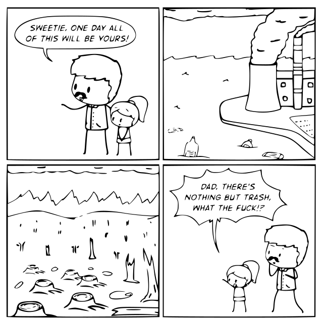
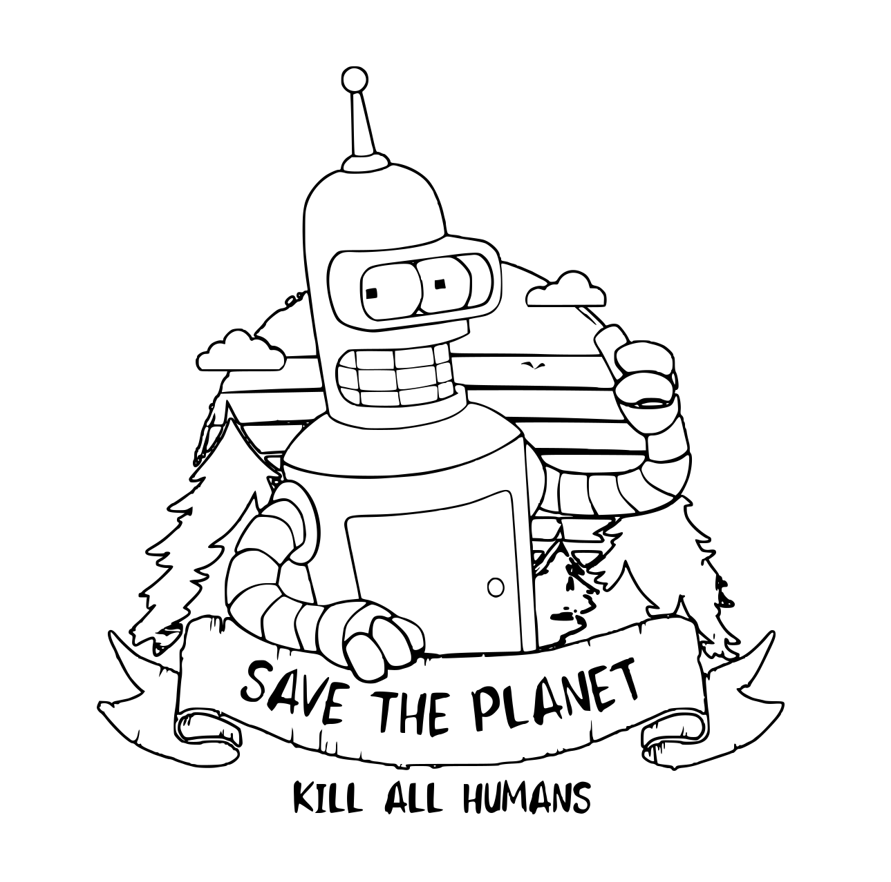

Anhang: Zitate und Sprüche
Auch hier stellt sich die Frage:
Welcher Typ spricht hier?
Also:
Welchen Persönlichkeitstyp hat "das lyrische Ich"?
Ich bin Typ 104,
also sammle ich Sprüche, die zu meinem Typ passen,
die mir "aus der Seele" sprechen.
Werdet nicht abhängig von Wasser.
— Mad Max: Fury Road
Du wirst in interessanten Zeiten leben.
— Chinesischer Fluch
Wir haben alles versucht.
— Dont Look Up (2021)
Dein Gefronte hilft dir nur die Wahrheit nicht zu peilen,
step ans Mikro, doch ich töte deine Crew mit einer Zeile.
Eine Geste von dir reicht um zu begreifen, du bist schwul,
und gegen jede Crew mit aggressiven Raps, die true ist.
— Creutzfeld & Jakob - Fehdehandschuh (feat. Kool Savas)
Ich spiele nicht, ich bin das.
Verstehen Sie? Und deswegen bin ich nichts.
— Klaus Kinski
Man findet immer dort besonders viel Chaos, wo man nach Ordnung sucht.
Das Chaos besiegt die Ordnung, weil es besser organisiert ist.
— Terry Pratchett
[Mainstream, Zentrum, Etikettenschwindel, aussen hui innen pfui,
Fassade, Betrug, Controlled Opposition, Honeypot, Falle]
Du bezahlst für ihren Segen, für die Angst vor dem Tod,
dein Geld hält sie am Leben, gibt ihnen ihr täglich Brot.
Du hängst an ihren Lippen und du glaubst dass du sie brauchst,
dann klammer dich an sie, bis du verfaulst.
Zensur und Moralismus ist alles was sie bringt,
eine halbe Erlösung, der Himmel stinkt.
Und Du willst für sie sterben in ihrem Namen,
für die Kirche, für ein Amen.
Ich pisse auf den Papst und seine römische Zentrale,
auf den Vatikan und seine Sklaven.
Ich glaube nicht an eure Worte, ich bin doch nicht bekloppt,
denn wer keine Angst vorm Teufel hat, braucht auch keinen Gott.
— Böhse Onkelz - Kirche
Was ist mit der Realness? Alle nur noch Wellness.
— Marsimoto - Wellness
An der Front für die Nazis, sie waren Spitzel für die Stasi,
und heute heucheln sie Demokratie.
...
Ein trostloser Haufen der uns regiert,
der Gesetze verstümmelt und nur für sich interpretiert.
...
Machterhaltung um jeden Preis,
ihre Politik der Lüge erstickt jeden freien Geist.
— Böhse Onkelz - Macht für den der sie nicht will
Preacher preacher, fifth grade teacher,
you cant reach me, my mom can neither.
You cant teach me a goddamn thing,
cause I watch TV, and Comcast cable.
And you aint able to stop these thoughts,
you cant stop me from topping these charts.
And you cant stop me from dropping each March,
with a brand new CD for these fucking retards.
And to think, its just little ol me,
Mr. Dont-Give-A-Fuck still wont leave.
— Eminem - Im a criminal
Go call you a lawyer, file you a lawsuit,
I'll smile in the courtroom, and buy you a wardrobe.
I'm tired of all you, I do not mean to be mean,
but that's all I can be, it's just me.
— Eminem - The Way I Am [hass mich weil ich ehrlich bin]
Since we cannot all be saints, let us all be sinners.
— Sabbatai Zevi, Jacob Frank
[Gleichschaltung, Sozialismus, Armut für Alle]
Idiokratie: Dummheit regiert.
Zu Beginn des 21. Jahrhunderts befand
sich die Evolution an einem Wendepunkt.
Die Natürliche Selektion, die den Klügsten und Schnellsten
bei der Fortpflanzung den Vorzug vor allen anderen gab
und damit die edelsten Eigenschaften des Menschen förderte,
schien nun andere Merkmale zu begünstigen.
Damals versprachen die meisten Zukunftsvisionen
eine noch zivilisiertere und intelligentere Welt.
Aber die Zeichen der Zeit deuteten
in die entgegengesetzte Richtung.
Die Welt verblödete.
Wie kam es dazu?
Intelligenz wird in der Evolution
nicht unbedingt belohnt.
Obschon es uns an natürlichen Feinden fehlte
die für das Ausdünnen der Herde gesorgt hätten
setzte die Natur nun auf all jene
die sich am häufigsten reproduzierten.
Die Intelligenten wurden zur bedrohten Art.
— Idiocracy (2006)
Ruhe bitte - Dummköpfe!
- Ruhe bitte - Dummköpfe!
Manchmal fragt man sich,
ob sich die Rettungsversuche überhaupt lohnen.
Lohnt es sich die Menschen zu retten?
So wie ich die Sache sehe,
ist die Intelligenz bereits ausgerottet,
und es leben nur noch die Idioten!
— Die Ärzte - Anti-Zombie
Wem nutzt unsere Furcht? Wir wollens nicht wissen.
Denn weil Wissen nur belastet, wollen wir nicht Mitwisser sein,
wir lassen es unangetastet, das Gewissen es bleibt rein ... porentief rein.
— Die Ärzte - NichtWissen
Es muss weitergehn, ich bleib so ungern stehn.
— Terrorgruppe - Weitergehen
Ich war nie gut in Deutsch und Mathematik,
und dämlich schreib ich nach wie vor mit H.
Die Schule war noch nie mein Fall,
ich weiss genau warum.
Ich war einfach viel zu schlau dafür,
hatte wichtigeres zu tun.
Dass mir das nicht geschadet hat,
kann man ganz klar sehn.
Mir gehts besser als den anderen,
die ihr Leben lang ackern gehn.
Alles was ich weiss hab ich,
ganz bestimmt in keiner Schule gelernt.
— Terrorgruppe - Alles was ich weiss
Uni ist anders als Schule, weil nur Streber übrig sind,
die nur Lesen glücklich stimmt, und sie leben vor sich hin.
[...]
Bei Vorlesungen schreiben sie mit auf ihren Laptops,
und hören immer zu, obwohl sie gar nichts verstehn.
1933 wärn sie alle Nazis gewesen.
[...]
Was ist die Uni? Die Uni ist ein Sammelbecken,
Für eine Bande pseudo-elitärer Straßenpenner.
Und sie gehn immer auf diese schlechten Unipartys,
und machen auf fokussiert aber verkacken 100 Jahre.
Und sie halten sich für klug, denn sie lasen mal ein Buch,
und hatten in Deutsch ne Eins in der Schule (Fuck you!).
In der Küche hängt ein Poster von Pulp Fiction,
ihre Bude riecht nach Tod, doch sie sortieren ihre Stifte.
Und markieren immer alles in den Büchern die sie lesen,
und noch lieber als Tote hören sie sich selber reden.
Und sie kaufen sich Kaffee von unabhängigen Händlern,
aber fressen für zwei Euro jede Scheiße in der Mensa.
Und sie träumen von der Revolution,
während der Arbeit an der nächsten PowerPoint-Präsentation.
Und sie rennen durch die Uni für ein paar sinnlose Scheine,
und stinken wie Scheiße: Studenten sind Schweine!
Was ist die Uni? Der Inbegriff
einer widerlich stinkenden Inzestfabrik.
Denn Kommilitonen ficken Kommilitonen,
und heraus kommen Kommilitonen.
Und von vorn, ein ewiger Zyklus, ein ekliger Fötus,
später ganz wie die Eltern: ein Hippi, ein Öko,
Ein Fan von Mandela und Gandhi,
doch Panik Panzer ist ihnen zu Anti.
Er demonstriert wie ein Spast von wegen "Bildung für alle",
wenn er mit sowas kommt box ich ihm die Brille von der Nase.
Er ist immer Brillenträger, dieser dumme Student,
was muss die Uni? Die Uni muss brennen!
Genau wie studentische Szenekneipen,
Studenten sind Opfer auf Lebenszeit.
Student zu sein ist kein gutes Gefühl,
Studenten brauchen mehr Studiengebühren.
Was ist die Uni? Die Abkürzung für Universität,
Studieren ist für mich noch schlimmer als zur Bundeswehr zu gehn.
Frieden sichern, Leben retten meinetwegen,
aber Studenten fehlt das Rückgrat, sie sind Schreibtischtäter.
Ihr lebt zusammengerottet in einer billigen Unterkunft,
der Gipfel der Unvernunft. Seht nur wie ihr lebt:
Ein Laptop, eine ranzige Matratze, ein Schreibtisch,
wie peinlich, wahrscheinlich weint ihr manchmal heimlich.
Schreibt Texte über Texte und lest Bücher über Bücher,
und zu allem Überfluss lest ihr Bücher über Bücher,
Und schreibt Texte über Texte, wie unkreativ,
merkt ihr nicht dass außer euch kein Mensch so etwas liest?
Aber nein, denn ihr lebt abgeschottet und zurückgezogen,
ihr wisst nichtmal was Arbeit bedeutet, ihr Idioten.
Was bringt es bitte diese weltfremden Bücher zu lesen und zu verstehn?
ihr könnt noch nicht mal Glühbirnen wechseln.
Was ist die Uni?
Die Uni ist nichts!
Fick die Uni!
Fick die Uni!
Fick die Uni!
Fick die Uni!
Was bringt die Uni?
Die Uni bringt nichts!
Fick die Uni!
Fick die Uni!
Fick die Uni!
Fick die Uni!
— Antilopen Gang - Fick die Uni

The problem is, you think you have time.
— Jack Kornfield, Buddha's Little Instruction Book
Gute Vorsätze pflastern den Weg zur Hölle.
Wer auf Lügen baut hat Angst vor Wahrheit
In jedem Dorf gibt es eine Fackel, den Lehrer.
Und jemanden, der dieses Licht löscht, den Pfarrer.
— Victor Hugo (1802-1885)
"Die Experten" haben uns Lügen erzählt über
Tabak, Alkohol, Quecksilber, Asbest, Opiate, Cannabis, Aluminium,
Plastik, Weichmacher (Phthalat, Bisphenol), Heroin, Süßstoffe,
Gesättigte Fettsäuren, Tierfette, Pflanzenöle, Omega-Fettsäuren,
Vitamine, Mineralstoffe,
Gentechnik, Rohmilch, Cholesterol,
Fluor, Teflon, DDT, Glyphosat,
Contergan, Phen-Fen, Lipobay, Menocil, Vioxx, Avandia, Oxycodon, Oxycontin,
geozentrisches Weltbild, Gewaltenteilung, Trennung von Staat und Kirche,
Leben nach dem Tod, Sünden und Ablasshandel, Hexen und Teufel ...
aber jetzt sagen "die Experten" die Wahrheit?
Wie dumm muss man sein, um diese Lügen zu glauben?
Wie verzweifelt muss man sein, um diesen Menschen zu glauben?
Sir, the orcs are here.
- Well, dont be racist, let them in!
[Sarkasmus zur Migranten-Invasion]
Have you ever heard of salt?
- Yes we are familiar with salt.
- Aah, you fell into my trap!
For I speak of the foe of salt ...
- Pepper.
- You know too much.
— Little Britain
Wir leben in einem Land in dem mehr Schranken stehen als es Wege gibt,
mehr Mauern als Brücken, die Stimmung ist negativ.
Und die Alten fragen: Warum rauch ich täglich Weed?
Warum sind ich und meine ganze Generation so depressiv?
Wir sind jeden Tag umgeben von lebenden Toten,
umgeben von Schildern die uns sagen "Betreten verboten!"
Umgeben von Skinheads die Türken und Afrikanern das Leben nehmen,
während Bullen daneben stehn um Problemen ausm Weg zu gehn.
Umgeben von Jasagern die alles nur nachlabern,
denen kaltes dunkles Blut pumpt durch die Schlagadern.
Umgeben von Kinderschändern die grad mal Bewährung kriegen,
genau wie die scheiss Nazis deren Opfer unter der Erde liegen.
Hat dieses Land wirklich nicht mehr zu bieten,
als ein paar Millionen Arschgesichter mit ner Fresse voller Hämorrhoiden?
Die meinen dieses Land sehr zu lieben, doch sind nicht sehr zufrieden,
passt zu euerm Frust oder warum seid ihr hier geblieben?
Ich muss mich von euch ganzen Schlappschwänzen abgrenzen,
all den ganzen Hackfressen die mich jeden Tag stressen.
Sind die gleichen Leute an der Spitze die sich satt essen,
und Minderheiten werden zur Mehrheit und trotzdem vergessen.
Weck mich bitte auf aus diesem Albtraum,
Menschen sehen vor lauter Bäumen den Wald kaum.
Man versucht uns ständig einzureden,
dass es noch möglich wär hier frei zu leben.
Weck mich bitte auf aus diesem Albtraum,
Menschen sehen vor lauter Bäumen den Wald kaum.
Ich und du und er und sie und es sind,
besser dran wenn wir uns selber helfen.
Ich bin der Typ der kurz nach Beginn der Party schon geht,
weil ich nicht feiern kann solange ich in Babylon leb.
Wir haben miese Karten, regiert von Psychopathen,
verwaltet von Bürokraten die keine Gefühle haben.
Kontrolliert von korrupten Cops die oft Sadisten sind,
Verdächtige suchen nach rassistischen Statistiken.
Gefüttert von Firmen die uns jahrzehntelang vergifteten,
informiert durch Medien die es erst zu spät berichteten.
Scheiss aufn Unfall im PKW, Schäden von THC,
wir haben bald alle BSE!
Und du schaust noch auf dein EKG bevor dein Herz stoppt,
und denkst "Aufn dickes Steak hätt ich trotzdem jetzt Bock!"
Verdammt nochmal! Gehirnwäsche pur, rund um die Uhr,
und Vater Staat schlägt und vergewaltigt Mutter Natur.
Die scheiss Politiker dienen der dunklen Seite wie Darth Vader,
und haben nen Horizont von circa einem Quadratmeter.
Keine eigene Meinung doch zehn eigene Ratgeber,
die schwachsinnigen Scheiss reden als hätten sie n Sprachfehler.
Hoffen die braven Wähler zahlen weiterhin gerne Steuergelder,
doch ich bin hier um Alarm zu schlagen wie n Feuermelder.
Was sagt wohl Schröder dazu? Ich glaub ich ruf ihn mal an,
sag zu ihm "Gerhard, schau dir doch unsere Jugend mal an."
Ein Drittel starrt mit offenem Mund auf ihre PlayStation,
das zweite Drittel feiert im Exzess als Rave-Nation.
Abhängig von teuflischen pharmazeutischen Erzeugnissen,
weil sie nicht wussten was diese scheiss Drogen bedeuteten.
Das dritte Drittel hängt perspektivlos rum auf deutschen Straßen,
Kids mit 13 Jahren ziehen sich schon dieses weisse Zeug in die Nase.
Die keine Ziele, nur Träume haben, und das sind meist teure Wagen,
planen ihr Leben nicht weiter als heute Abend.
Denken, zur Not geht es wie bei Nintendo noch neuzustarten,
scheissen drauf ob sie bald sterben, wer will schon alt werden?
In diesem Land in dem mehr Schranken stehen als es Wege gibt,
mehr Mauern als Brücken, die Stimmung ist negativ.
Für die Alten: Darum rauchen wir täglich Weed,
und deshalb sind ich und meine ganze Generation so depressiv.
— Samy Deluxe - Weck mich auf
Und ich saufe mich ins Koma,
an der Wand hängt mein Onkelz-Poster.
Anfang zwanzig, Leberzirrhose,
schuld an allem sind die da oben.
Wir hassen euch und ihr hasst uns,
häng auf der Parkbank mit mein Jungs.
Wir sind blau wie unsre Knasttattoos,
in unsrer Kehle brennt der Absolut.
—
Finch Asozial & Tarek K.I.Z - Onkelz Poster
Der Minister nimmt flüsternd den Bischof beim Arm:
"Halt du sie dumm, ich halt sie arm!"
— Reinhard Mey - Sei wachsam
Das religiöse Elend ist in einem der Ausdruck von wirklichem Elend,
und in einem die Protestation gegen das wirkliche Elend [Weltflucht, Eskapismus, Ignoranz].
Religion ist der Seufzer der bedrängten Kreatur [Sklave, Opfer],
das Gemüt einer herzlosen Welt [Kälte, Feigheit],
wie sie der Geist geistloser Zustände ist [Dummheit].
Religion ist Opium für das Volk.
— Karl Marx (1844)
Life asked Death:
Why do people love me,
but hate you?
Death responded:
Because you are a beautiful lie,
and I am a painful truth.
Shaun! How's it going?
- Surviving...
— Shaun Of The Dead
One is the loneliest number.
— Harry Nilsson - One
Fuck the system! Aber diesmal richtig.
Any fool can make things more complex.
It takes genius to find things that are simple but effective.
Mit solchen Leuten verlierst du jeden Krieg.
[Opfer, Schwächlinge, Verräter, Feinde im Inneren, Domestic Enemies]
Die Industrie und ihre Helfer, verkaufen euch für dumm,
sie servieren, und ihr rührt die Scheisse um.
Ich brauch sie nicht, und ich hab sie nie gebraucht,
ich scheiss auf MTV, und auf die andern Sender auch.
Ich und meine Brüder ham das Kriegsbeil ausgegraben,
wir können es uns leisten euch als Feinde zu haben.
Feige und bestechlich und für das was sie sagen nicht bereit,
die Konsequenzen zu tragen.
Deshalb keine Amnestie für MTV, keine Amnestie für MTV.
— Böhse Onkelz - Keine Amnestie für MTV
Wir warten auf den Tod, verschwenden unsere Zeit,
tun was man von uns erwartet, zahlen den Preis für unsere Feigheit.
Die Tage ziehen vorbei, wir scheissen und fressen,
unsere Zimmer sind Särge, Geld hilft uns zu vergessen.
Wir leben unbedeutende Leben, und bewirken nichts,
Dich verschluckt das Vergessen, und niemand erinnert sich an Dich.
Dies ist ein dunkler Ort, weil Du ihn dazu machst,
dies ist ein dunkler Ort, und Du hast ihn erdacht.
— Böhse Onkelz - Dunkler Ort
Ich hab so viel verpasst von den wichtigen Dingen,
so viel nicht gemacht, und das ohne Grund.
Und weil solche Gedanken doch eigentlich nichts bringen,
halt ich die Augen zu und die Hand vor den Mund.
Ich bin krankhaft gesund und dumm gebildet,
schön geschminkt und schlecht gelaunt.
So maßlos mutig dass ich zu feig bin fürs Leben,
so maßlos feig dass ich mir selbst alles glaub...
und es fällt nicht Mal wem auf.
[...]
Nur der Tisch und der Stuhl und das Glas hörn mir zu,
und weil mich niemand sieht, ist mir egal was ich tu.
Und weil ich gar nichts mach, seh ich allem nur zu,
mit dem Glas in der Hand, vor dem Tisch auf dem Stuhl.
Fühlt sich alles so an wie es ist,
und umso mehr man vergisst was passiert, wird das Glas wieder leer.
Jeder Tag zu kurz, und die Stunden zu lang,
wozu jeder Morgen, ich fang nichts damit an.
Wozu jeder Abend, wenn ich nicht schlafen kann,
wach sein tut weh ohne Tatendrang.
Damit ich atmen kann, halt ich Fenster geschlossen,
Türen verriegelt, und mein Herz in der Hand.
Und Zug um Zug vergess ich die Stimme die es gut mit mir meint,
und mir sagt dass man was ändern kann.
Schau dir die Augenränder an ich hab lange Zeit nachgedacht,
ob Vergangenheit zu ändern ist doch es ist nicht möglich.
Denn alles was ich nicht tat ist ab jetzt mein Hindernis,
und glaub mir das zu überwinden geht nicht.
Ich leb nicht mehr in meinen Träumen die sind geplatzt,
der Rest ist Ballast und landet im Glas.
Es macht mir Spaß nichts mehr zu spüren von dem was ich vergaß zu tun,
als es die beste Zeit dafür war weil es nur die Zeit dafür gab.
Es ist vorbei, kein Traum, kein Ziel auf das man sich freut,
es gibt nichts was so fehlt wie verlorene Zeit.
— Fiva MC - Verlorene Zeit
Memento mori.
Denk dran: Du wirst sterben, alles wird sterben.
Tu was Du willst.
— Michael Ende, Die unendliche Geschichte
Zeit ist Leben. Und das Leben wohnt im Herzen.
— Michael Ende
Wir kommen schnell in ein Gespräch über Gott und die Welt,
du glaubst nicht an Ersteren und Letztere zerfällt.
...
Ich bin verliebt, doch irgendwie beschleicht mich ein Gefühl,
dass du irgendetwas sagen wirst das ich nicht hören will.
Irgendwas mit Esoterik und Verschwörungstheorien,
dann wäre alles für die Katz, wir könnten uns nicht lieben.
...
Also laufe ich so schnell ich kann, bis ans Ende der Welt,
denn ich hab Angst dass du was Dummes sagst, das mir nicht gefällt.
Solltest du mich finden, will ich nix hören,
nur ein dummer Satz würde alles zerstören.
Dann wär ich nicht mehr verliebt in dich,
dann wär ich nicht mehr verliebt.
...
Solltest du mich finden, will ich nix sagen,
nur ein dummer Satz und du würdest mich schlagen.
Dann wärst du nicht mehr verliebt in mich,
dann wärst du nicht mehr verliebt.
— Antilopen Gang - Verliebt
Keiner teilt, alles Missgunst,
und jeder weiss dass er mit muss.
Keiner schreit, keiner kämpft, alles schweigt,
keiner weiss was du denkst, Schutzmechanismus.
— Mosh36 - Schutzmechanismus
simple but effective.
— Minimal
Ich weiss selber was schön ist.
— Autonom
Alles wird sterben.
— Nihil
Der Teufel steckt im Detail.
— Perfekt
Ich hasse alle Menschen gleich.
— Menschenhasser
Alleine ist jeder überfordert mit Große Probleme,
und flüchtet sich in Kleine Probleme. [Lost in Details]
Alles was ich dir anbiete ist die Wahrheit, nicht mehr.
— Morpheus, Matrix [Wahrheit ist einfach, kämpfen muss man selber]
Die Zeit arbeitet gegen uns.
— Morpheus, Matrix
Manche Dinge kann man nicht durch Nachdenken ergründen,
man muss sie erfahren.
— Michael Ende
Es gibt Reichtümer, an denen man zugrunde geht,
wenn man sie nicht mit anderen teilen kann.
— Michael Ende
Man darf nie an die ganze Straße denken.
Man muß nur an den nächsten Schritt denken.
...
Dann macht es Freude.
Das ist wichtig, dann macht man seine Sache gut.
— Michael Ende
Wenn die Menschen wüssten was der Tod ist,
dann hätten sie keine Angst mehr vor ihm.
— Michael Ende
Ein Mensch der muss sterben, ein Tod der muss töten,
man kann ja nicht nicht aus seiner Haut.
— Zugezogen Maskulin - Der müde Tod
Mein Tagebuch:
In traurigem Gedenken an alle meine vergessenen Ideen.
Ihr werdet sehen, ihr gottverdammten arroganten Gestalten,
morgen werd ich kommen, und dann den Schultag anders gestalten.
— Swiss - Der letzte Schultag
Tempus fugit, dolor manet.
Zeit vergeht, Scheisse bleibt.
Si vis pacem, para bellum.
Willst du Frieden, rüste für Krieg.
Winter is coming.
— Game of Thrones
Schreie die keiner hört, Sätze die niemand sagt.
Dinge die keiner fühlt, Schätze die niemand jagt.
Töne die keiner spielt, Wunder die keiner sieht.
Ihr seid für alle Zeit vertrieben aus dem Paradies.
...
Man sieht nur mit dem Herzen gut, und nicht mit seinen Augen.
...
Eure Welt ist Plastik, alles falsch, alles Fassade.
Erst wenn die Schneekugel geplatzt ist, kann ich atmen, kann ich atmen.
— Genetikk - Plastik
Das "E" im Wort "Elektro-Auto" steht für "extra-schwul".
Ich häng rum und warte darauf dass mein Leben sich ändert,
und jeder Tag im Kalender scheint mir so sinnlos verschwendet.
Immer dieselben vier Wände, dieselben Fressen wie gestern,
dieselben Gespräche und dieselben leeren Versprechen.
Es macht mich krank zu wissen dass morgen derselbe Tag ist,
derselbe Arschfick, und dass das nächste Jahr wieder dasselbe Jahr ist.
Kann nicht weiter zusehn wie Jungs die nur halb so gut sind,
meine Träume leben weil ich Versager es nicht mal versuche.
Aber ich wach auf, geh raus und mach was draus,
von Abschaum nach Uptown, ich rapp bis die Stadt bounced.
Ihr habt solang gewartet, ich hab solang gewartet,
jetzt kann keiner glauben, dass es wahr ist, dass ich endlich da bin.
Als ihr geschlafen habt, war ich wach und hab nachgedacht,
Nacht für Nacht hab ich nach und nach was ich dachte aufs Blatt gebracht.
Jetzt ist es zu spät um umzudrehn, es gibt kein Weg zurück,
und ganz egal, was es mich auch kostet, ich bereue nichts!
Solang ich Träume hab, kann mir keiner von euch was,
ich bin bereit dafür zu sterben, und zwar heute Nacht.
Bereit zu sterben, um nur einmal nach den Sternen zu greifen,
mit jedem Vers den ich schreibe, komm ich der Freiheit näher.
Ich hab gehört, wie sie lästern, hab gehört, wie sie lachten,
dachten dass ich zu schwach bin, doch meine Wörter sind Waffen.
Bruder, ich schwöre, ich schaff es, ich bin für Höheres geschaffen,
Das ist mein Song für euch, es gibt keine schönere Rache.
Heut bin ich König der Narren, es war ein böses Erwachen
für euch, ihr habt gedacht, es gibt keinn mit ner größeren Klappe
Und ihr habt Recht behalten, sowas wie mich gibt es nicht ein zweites Mal
und scheiße ja ja, ich hab geweint, als ich alleine war!
Beißt euch die Zähne aus, auch nach der zehnten Faust steh ich auf
Jeden auf, ihr Kakerlaken seid Kerben in meinem Lebenslauf
Ihr schafft mich nicht, rafft ihrs nicht? Nicht, solang ich Träume hab
Weil ich seitdem ich denken kann schon mehr Feinde als Freunde hab
Ihr wollt mich runterdrücken, die Worte im Mund ersticken,
lieber stehend sterben als kniend lebend, ihr Mutterficker!
Was ihr mir antut, ist nur Futter für all den Hass in mir,
um frei zu sein, brauch ich nur einn Stift und ein Blatt Papier.
Auch wenn der Rest der Welt mich nicht versteht und niemand mehr an mich glaubt,
mach ich weiter wie bisher, denn ihr haltet mich niemals auf.
Ich bin ein Träumer, und für alle Träumer ist dieser Sound,
ganz egal, wie schlimm es ist, ich heb die Faust.
— Genetikk - Solang ich Träume hab
Ich unterhalt mich mit meim Schatten weil die Wahrheit keiner liebt.
— Olexesh - Weyauu
Für die kaputten Köpfe mit Herz in der Brust,
Teer in der Luft, es ist schwer doch ich muss,
diese Scheiße durchziehn, trotz Schmerzen und Frust,
denn die Situation sie ist mehr als kaputt.
...
Generation Hartz Vier,
Kriminalität als Ausweg, du hast meistens keine Wahl hier.
Ich brauch nicht lange reden, komm vorbei, du kannst es sehn,
Wie die Jungs sich Kante geben, krankes Leben.
An jeder Ecke sind Spielos, die Jugend ist ziellos.
Scarface-Mentalität, die Eltern fragen "Wieso".
— Sa4 - Mehr als kaputt (feat. Blut61)
So viele Leute um mich,
und trotzdem fühl ich mich einsam.
— Klapse Mane - Sonnenseite
Ihr seid auch nur verletzte Kinder
— Sarah Lesch - Testament
Auch du warst mal ein Kind, und auch ich war mal klein,
und auch uns ham sie was erzählt.
Und dann macht man das alles, und versucht so zu sein,
und dann merkt man, dass einem was fehlt.
Und dann verlernt man, sich richtig zu spüren,
und man flüchtet sich in Kunst oder Konsum.
Und während ihr fleissig Pläne macht,
lachen die Götter sich krumm.
Lasst eure Kinder mal was dazu sagen,
hört ihnen richtig zu.
Die spürn sich noch, die ham Feeling für die Welt,
Die sind klüger als ich und du.
Und denkt dran, bevor ihr antwortet,
Ihr seid auch nur verletzte Kinder.
Am Ende gibts wieder ganz neue Symptome,
und ihr wart die Erfinder.
Und dann sagt ihnen wieder, wie es richtig geht,
"Werd erwachsen" und "bist du naiv".
Predigt Formeln, lasst Alles in Hefte schreiben,
die Götter lachen sich schief.
Achtet auf Schönschrift und Lehrpläne,
und dass sie die Bleistifte spitzen.
Zeigt ihnen Bilder von Eichenblättern,
während sie drinnen an Tischen sitzen.
Und dann ackern und büffeln und wieder auskotzen,
und am Nachmittag RTL 2.
Am Wochenende gehts was Schönes kaufen,
fertig ist der Einheitsbrei.
Und jeder der sich nicht anpasst,
wird zum Problemkind erklärt.
Und jede die zu lebhaft ist,
kriegt ne Pille damit sie nicht stört.
Und damit betrügt ihr euch selber denn,
kein Kind ist ein Problem.
Und all die Freigeister all die Schulschwänzer,
nur Symptomträger im System.
Doch bedenkt wenn ihr so hart urteilt,
ihr seid auch nur gefangene Geister.
Der Unmut wird immer lauter,
und die Lehrer schreien sich heiser.
Empört euch, dass Hänschen nicht ist was er sein soll,
sondern nur wer er nunmal ist.
Die Götter pullern sich ein vor Lachen,
und ihr denkt dass ihr was wisst.
Und wenn Hänschen dann Hans ist,
der eigene Kinder hat denen er was erzählt.
Dann merkt Hans und Kunz und ihr vielleicht auch,
dass wieder irgendwas fehlt.
Ihr habt Wünsche und Träume,
und rennt damit ständig an imaginäre Wände.
Und jeder Wunsch den ihr euch erfüllt,
der ist dann halt auch zu Ende.
Geht ihr nur malochen für erfundene Zahlen,
und wartet bis die Burnouts kommen.
Schmeisst euer Geld für Plastik raus,
um ein kleines Glück zu bekommen.
Das Beste aus Cerealien und Milch,
noch n Carport, und noch n Kredit.
Und alle findens scheisse,
aber alle machen sie mit.
Ihr klugscheissert und kauft trotzdem,
und die Werbung verkauft euch für dumm.
Und dann sitzt ihr vor neuen Flachbildfernsehern,
und meckert auf den Konsum.
Wenn ihr das Welt nennt, bin ich gern weltfremd,
die Götter lachen sich krumm.
Ihr Traumverkäufer. Symptomdesigner,
merkt ihr noch was passiert?
Wer hat euch das Land und das Wasser geschenkt,
das ihr jetzt privatisiert?
Ihr Heuchler, ihr Lügner, ihr Rattenfänger,
ihr Wertpapierverkäufer.
Man hat euch Geist und Gefühl gegeben,
und doch seid ihr nur Mitläufer.
Ihr großen, vernarbten, hilflosen Riesen,
ihr wart doch auch mal klein.
Und jemand hat euch mit Schweigen gestraft,
und liess euch darin allein.
Und jetzt hört ihr nicht nur die Götter nicht lachen,
uhr hört auch ihr die Kinder nicht weinen.
Und sagt ihnen weiter es würde nicht wehtun,
ohne es so zu meinen.
Macht ihr ruhig Pläne, ich steh am Rand,
ich sehe euch, und ich bin nicht allein.
Hinter mir stehen mehr und mehr Weltfremde,
die passen auch nicht hinein.
Und jetzt wartet nicht auf ein versöhnliches Ende,
den Gefallen tu ich euch nicht.
Kein Augenzwinkern, keine milde Pointe,
die das Unwohlsein wieder bricht.
Irgendwann werden die Götter nicht mehr lachen,
und falls es mich dann nicht mehr gibt,
hinterlass ich ein Kind, das sich selbst gehört,
und dies unhandliche Lied.
— Sarah Lesch - Testament
Erstickt in Routine
...
Knast ist nicht, wenn ein Mensch in einer Zelle sitzt,
Knast ist, wenn die Angst im Kopf deine Zelle ist.
— Danger Dan - Gesiebte Luft
Wir hatten uns nicht vorgenommen,
jemals auf die Welt zu kommen,
und trotzdem ist es irgendwie passiert.
Als wir uns schließlich selbst erkannten,
und alles ziemlich scheiße fanden,
hatten wir das Wichtigste kapiert.
Einem Körper der gesund ist,
dem genügt ein leerer Geist,
wir trinken bis der Alkohol gewinnt.
Auch wenn wir nur Statisten sind,
in einem Film der ständig reisst,
wir halten unsre Fahne in den Wind.
— Danger Dan - Filmriss
(Original: Knochenfabrik - Filmriss)
Wie lange sollen wir noch warten,
bis wieder bessere Zeiten starten?
— Sportfreunde Stiller - Wie lange
Hin und wieder stell ich fest,
dass ich nicht mehr lachen kann,
über Sachen die ich früher lustig fand.
Hin und wieder merk ich auch,
dass ich keine Menschen brauch,
und lieber ganz alleine bin.
Doch der Schmerz ist zuckersüß,
und irgendwie auch so vertraut,
ich hab mich dran gewöhnt.
So fehlt zur letzten Konsequenz,
einmal mehr das Bisschen Mut,
und die paradoxe Wut darüber
wird im Traum ertränkt,
von der beschissenen Leichtigkeit des Scheins.
Hin und wieder wird mir klar,
dass alles anders geworden ist,
als es scheint dass es früher einmal war.
Hin und wieder spüre ich,
dass die Sonne nicht mehr mag,
weil ich das helle Licht nicht mehr ertrag.
Wie ein Quadrat in einem Kreis,
eck ich immer wieder an,
obwohl ich doch schon lange weiss,
dass ich niemals ändern kann,
was sich niemals ändern wird.
Weil das Schlechte immer bleibt,
und doch die Sonne wieder scheint,
scheiss egal was auch passiert.
— Wizo - Quadrat im Kreis
Risiko, ja wir lieben das Risiko,
wir fallen tief und fliegen hoch, irgendwo im Nirgendwo.
Risiko, wir lieben das Risiko,
bleibt die Frage, ob das hier sich lohnt.
Wichtig ist, uns beiden geht es gut,
das Leben viel zu kurz, die Zeit vergeht so wie im Flug.
Ich vertrau Dir blind bei allem was Du tust,
bei allem was Du tust.
— Lapaz [M4] - Risiko
Dem Heiteren erscheint die Welt auch heiter.
— J.W. Goethe
There's class warfare, all right, but it's my class,
the rich class, that's making war, and we're winning.
Der zentrale Konflikt unserer Tage ist der Krieg Reich gegen Arm.
Wir, die Klasse der Reichen, haben diesen Krieg angefangen,
und wir werden ihn auch gewinnen.
— Warren Buffett, Georg Schramm
Von Warren Buffett stammt übrigens auch der schöne Begriff:
"finanztechnische Massenvernichtungswaffen".
— Georg Schramm
Das ist das Fundament einer Volksreligion: Die Unterdrückung einer berechtigten Frage.
— Georg Schramm
Die Vernunft kann sich mit größerer Wucht dem Bösen entgegenstellen,
wenn der Zorn ihr dienstbar zur Hand geht.
— Georg Schramm
Menschliche Dummheit ist endlos.
— Albert Einstein
[Schlaue Menschen kennen Grenzen, sowohl ihre eigenen Grenzen,
als auch die Grenzen von anderen Menschen.
Totalitarismus ist wenn Idioten ihre subjektive Weltsicht
mit Gewalt zu einem objektiven Standard für Alle machen wollen.]
Jeder ist ein Genie.
Aber wenn du einen Fisch danach beurteilst,
ob er auf einen Baum klettern kann,
wird er sein ganzes Leben glauben, dass er dumm ist.
— Albert Einstein
[Schulkritik, fick die Schule, dumme Lehrer]
Regierung:
Wir haben euch alle angelogen die ganze Zeit,
(die Menschen sind zornig)
aber wir haben es getan, um euch zu schützen.
(die Menschen sind glücklich)
Jemand:
Lügt er immer noch?
All meine Gespräche sind meistens nur Monologe,
ich will kein Leben voll Scheiße wie Drogentote.
Ich schmeiss es weg, und während andere schreien und winseln,
kehrt mein Geist in die Stille zurück, und steigt in den Himmel.
...
Machen, was man machen will, ist unter Strafe verboten.
...
Ich bin leider nicht dumm genug, euren Lügen zu glauben,
und leider nicht mutig genug, meine Flügel zu brauchen.
Also schieß' ich alles in Gedanken über den Haufen
...
Ist auch für nen guten Zweck, denn wenn ihr weg seid,
dann ist Platz für die, die ihr eigener Herr sein wollen.
Von mir aus nenn es Blasphemie, ich nenn es Mündigkeit,
und diese Erde nenn ich Scheiterhaufen.
— JAW - Himmel (feat. Rynerrr)
Ich bin ein Sklave der Liebe, ich ertrage die Hiebe.
— JAW - Entheiligte Welt
Mein Leben ist wie Ego-Shooter und das ist auch gut so,
Denn hätt ich ein Leben wie du würd ich mich lachend in den Dachstuhl hängen.
Jump and run Running scared uns gehört die Zukunft,
Denn wir hassen und verachten Menschen.
— JAW - Menschenhass
Was hat denn das Leben bitte für einen Sinn? Keinen!
Also muss man seinem Leben einen Sinn geben,
und das mache ich nicht,
indem ich einem überbezahlten Chef im Arsch rumkrieche,
oder mich verarschen lasse von Faschisten,
die mir erzählen wollen wir leben in einer Volksherrschaft.
...
Vielleicht hätte mein Leben komplett anders verlaufen können,
aber die Gesellschaft hat nunmal keinen Platz für Individualisten.
Ich meine richtige Individualisten, Leute die selbst denken,
und nicht solche "Ich trage ein Nietenarmband und bin alternativ" Idioten!
...
Das Leben wie es heute täglich stattfindet,
ist wohl das armseeligste was die Welt zu bieten hat!
SAART - Schule Ausbildung Arbeit Rente Tod.
Das ist der Lebenslauf eines "normalen" Menschen heutzutage.
Aber was ist eigentlich normal?
Als normal wird das bezeichnet, was von der Gesellschaft erwartet wird.
Somit werden heutzutage Punks, Penner, Mörder, Gothics, Schwule usw. als unnormal bezeichnet,
weil sie den allgemeinen Vorstellungen der Gesellschaft nicht gerecht werden, können oder wollen.
Ich scheiss auf euch!
Jeder hat frei zu sein!
Gebt jedem eine Waffe, und die Probleme unter den Menschen lösen sich, ohne jedliche Einmischung Dritter.
Wenn jemand stirbt, dann ist er halt tot.
Und? Der Tod gehört zum Leben!
Kommen die Angehörigen mit dem Verlust nicht klar,
können sie Selbstmord begehen, niemand hindert sie daran!
...
Weil ich weiss, dass die Fascho-Polizei
meine Videos, Schulhefte, Tagebücher, einfach alles,
nicht veröffentlichen will,
habe ich das selbst in die Hand genommen.
— Sebastian Bosse [M4?],
der Amokläufer von Emsdetten
Laisse faire, la nature.
Lass sie fahren, die Natur.
— Pierre Le Pesant de Boisguilbert, Physiokratie, Herrschaft der Natur, Naturrecht
Staatliche Erzieher und Staatliche Lehrer zwingen uns,
unsere Feinde zu lieben, und unsere Freunde zu hassen.
[Infokrieg, Psychokrieg, Erziehung, Machtmissbrauch, Missionare, Kinderficker, Sklavenmoral]
Die Welt beachtet mich nicht und begeht Gotteslästerung.
...
Ich hab verkackt und lebe täglich hart am Abgrund,
Und hab kaum mehr übrig als für den Staat Verachtung, Nein.
Ihr seht wie Dinge passiern,
und denkt ihr könnt sie lenken,
doch wenn was Schlimmes passiert,
beschränkt ihr euch auf das Argument "Dinge passieren!"
und rennt nur davon, weil ihr machtlos seid,
und abgefuckt in menschlicher Dummheit.
— JAW - Menschliche Dummheit
Ich steh auf dem Hausdach und guck über die Stadt,
Die Post fängt grad Feuer, die Volksbank ist niedergebrannt.
Die Feuerwehr versucht sich gerade selbst zu löschen,
Die Bullen flüchten vor dem Mob, heile Welt war gestern.
Jetzt herrscht hier nur noch Chaos, doch das Chaos bringt mir Frieden,
Die Fesseln sind gebrochen, Hass und Wahn weichen für Liebe.
Liebe für die Erde, die wieder im Gleichgewicht ist,
Die Chance für Bonzen neben Pennern in der Scheiße zu sitzen.
Die Chance, um zu erkennen, dass Kreditkarten nicht essbar sind,
Deine Macht und Position, dein ganzes Sein war lächerlich.
Jetzt liegst du hier im Dreck mit uns, doch du hast keine Freunde hier,
Dein Chauffeur nimmt deinen Mantel, was gestern Mensch war ist heute Tier.
Und du warst all die ganze Zeit nur auf Papier der Alpha-Affe,
Jetzt bettelst du um Mitgefühl, du Arschloch, halt die Klappe.
Dein geiles System, wer hat geglaubt, dass dieser Kack mal endet?
Ein kleiner Knopfdruck und schon hat sich das Blatt gewendet.
— PCP - Am Ende war [JAW, Private Paul, Rynerrr, ...]
[1. Part: Maexer]
Ich steh' auf, meine Hände gebunden
Meine Nase am bluten und meine Seele betrunken
Ich atme Staub statt Luft, keinen Glauben gefunden
Ich kann nicht sehen, meine Stimme ist stumm, ich weiss nicht wohin
Ich hab' meine Kinder schon vor zwei Jahren im Schlaf erschossen
Und meine Frau ist an Erbrochenem im Schlaf gestorben
Das mussten sie nicht erleben, diesen verwesenden Duft
Meine Augen sind so taub von dem scheiß Zeug in der Luft
Ich geh' müde zwei Meter, auf vertrockneter Erde
Verdammt trockene Hitze, obwohl ich die Sonne nicht merke
Ich weiss ohne Zweifel - das Paradies, wenn ich sterbe
Und bin froh, dass keiner mehr diesen scheiß Planeten beerbt
Ihr habt die Welt so zugerichtet, mein Überlebensdrang ist Folter
Der Hunger wird gestopft mit scharfen, giftigen Kräutern
Und jedes Gefühl, was man hat, wird in Schmerzen erstickt
Und jeden Tag fragt man sich: "Warum sterbe ich nicht?"
[Hook: Maexer - 2x]
Das ist der wahre Engelsstaub, der auf die Erde rieselt
Das ist nicht das Paradies, für welches wir es hielten
[2. Part: Rynerrr]
Meine Haut brennt, ich krieg' kaum Luft in diesem Glaskasten
Ich steh' auf und mach' das gleiche, was ich jeden Tag mache
Quäl' mich in den Raumanzug und betret' die Luftschleuse
Hol' ich mir jetzt Sauerstoff, oder mach' ich Schluss heute?
Wie der Rest meiner Familie, meine Freunde, meine Frau
Alle haben den Tod gewählt - ich bin ganz allein hier draußen
Mit den paar Tausend ander'n, die noch weiterkämpfen
Die noch immer Hoffnung hegen, dass dieses Leid mal endet
Dass wir wieder an die Oberfläche können ins Licht
Doch kommen wir, wenn wir zu früh nach oben geh'n, ins Gift
Also warten wir hier unten, totenbleich und knochendürr
Leben von Chemie und werden mehr und mehr im Kopf verwirrt
Kriechen durch die Gänge - Ratten, die das Schiff verlassen haben
Kollektive Depression, weil bei uns auch Nacht am Tag ist
Das Leben wie wir's kannten - wer hat geglaubt, dass das mal endet?
Ein kleiner Knopfdruck und schon hat sich das Blatt gewendet
(gewendet, gewendet, gewendet, gewendet)
[Hook: Maexer - 2x]
Das ist der wahre Engelsstaub, der auf die Erde rieselt
Das ist nicht das Paradies, für welches wir es hielten
[3. Part: Me$$age]
Nur eine Frage der Zeit bis zum Kreislaufkollaps
Kann's mir nicht leisten, mehr Zeit zu nehmen, als ich bereits genommen hab'
Ich merk', wie unter meiner Wunde am Brustkorb meine Lunge nach Luft schnappt
Wir suchen unter der Vorstadt nach dem Grundwasservorrat
In Form von Flüssigkeit, gespeichert in Plastiktanks
Und darüber im trüben Licht werden Gewächse angepflanzt, grausame Bilder
Neben halbtoten Pflanzen, die Sauerstoff filtern,
liegen verrostete Rauchverbotsschilder
Weil es in dieser unterirdischen Sahara nur Staub gibt
Wird's nicht mehr lange dauern, bis die Nahrung uns ausgeht
Bis nichts, außer Magensäure im Bauch ist
Wie lange noch, bis die Paranoia mich auffrisst?
Unsere Hoffnung besteht aus spärlicher Technik
Verrostete Schaufeln, die zur Hälfte schon zu Erde zersetzt sind
Ich muss weiter graben und buddeln durch eingefallene Tunnel
Mit hunderten gefangen und allein gelassen im Dunkeln
[Hook: Maexer - 2x]
Das ist der wahre Engelsstaub, der auf die Erde rieselt
Das ist nicht das Paradies, für welches wir es hielten
[4. Part: JAW]
Und jetzt steh' ich da mit fahlem Gesicht und halbtot
Und unberührt erscheint nur die Sichel des Halbmonds
Die auch durch eine Wand aus Asche nicht blass erscheint
Ich setz' mich nackt auf die Steine, die Nacht ist kalt
Und ich - weine leise die süßen Tränen
Die mich beschwichtigen, mir vergewissern, es ist richtig, wofür wir stehen
Und ein Leben wie dieses ist keinen Deut schlimmer
Als das unter euch Wichsern - im Gegenteil - es ist freundlicher
Dank der himmlischen Ruhe Im Schoße des drohenden neuen Winters
Eisig, aber kein stechender Schmerz
Denn diese Kälte verschont dein Geist, aber verzehrt
Dein Fleisch, bis du nie wieder spürst
Und die Zeit dein Leid für's Jenseits konserviert
Ich hab' alles, was ich liebte, verloren
Und doch fühl' ich mich selbst wie wiedergeboren
Es ist verstummt - mein Lied des Zorns
Und ich sitz' gefunden im Dunkeln und erwarte den Morgen
[Outro]
Komische Träume haben die Leute gehabt.
Sachen gesehen, die nicht da waren.
Da gab's 'n kleines Mädchen zum Beispiel.
Sie hat plötzlich so'n komischen Blick bekommen
und zu schreien angefangen.
Es gab 'n paar Typen die dabei waren
und die haben sie sie gefragt "Was ist denn los?"
und dann... sie hat gesagt, sie sieht das Ende der Welt.
Alles voller Rauch und Feuer im blutigen Regen.
Genau so heißt es doch. Heulen und Zähneklappern
— PCP - Engelsstaub
Die industrielle Revolution und ihre Folgen sind eine Katastrophe für die Menschheit.
In den "hoch entwickelten" Ländern steigt die Lebensdauer der Menschen,
aber dafür sinkt die Lebensqualität:
Menschen sind nicht mehr glücklich,
Menschen quälen sich,
Menschen haben psychische Probleme,
in der Dritten Welt erleiden Menschen auch körperliche Qualen,
und die Natur erleidet schweren Schaden.
— Ted Kaczynski [M2?] - Die industrielle Gesellschaft und ihre Zukunft
Der weiche Gang geschmeidig starker Schritte,
der sich im allerkleinsten Kreise dreht,
ist wie ein Tanz von Kraft um eine Mitte,
in der betäubt ein großer Wille steht.
— Rilke - Der Panther
Du Opfer, was willst du machen? Überall sind Kanacken.
Deine Mama soll losgehn, und die Wertsachen wegpacken.
Wir ziehen Koks, ziehen Speed, das Leben eines G's.
Wir boxen dich zu Kartoffelbrei, Ali, Murat, Rajid.
— K.I.Z - Was willst du machen
Fass nicht meine Bäume an, ich fackel auch nicht deine Träume ab.
— Lazy Lizzard Gang - Wald
Jeder, der jemals zur Schule gegangen ist, der weiss, Schule ist ein Gefängnis,
aber fast niemand sagt das laut.
Es wäre unhöflich. Wir gehen alle um die Wahrheit herum,
denn wenn wir sie zugeben würden, würden wir grausam erscheinen
und mit dem Finger auf "gutmeinende" Menschen zeigen,
die das tun, was sie für wichtig glauben.
...
Ein Gefängnis ist, nach der allgemeinen Definition,
jeder Ort der unfreiwilligen Inhaftierung und Beschränkung von Freiheit.
In der Schule, wie auch in Gefängnissen für Erwachsene,
wird den Insassen genau gesagt, was sie tun müssen,
und bei Nichteinhaltung werden sie bestraft.
Tatsächlich müssen Schüler in der Schule
mehr Zeit damit verbringen, genau das zu tun, was ihnen gesagt wird,
als dies bei Erwachsenen in Strafanstalten der Fall ist.
Ein weiterer Unterschied besteht offensichtlich darin,
dass wir Erwachsene ins Gefängnis stecken, weil sie ein Verbrechen begangen haben,
während wir Kinder wegen ihres Alters in die Schule schicken.
— Peter O. Gray - Free to Learn.
Warum die Entfesselung des Spielinstinkts unsere Kinder glücklicher,
selbstständiger und bessere Schüler fürs Leben macht
Lernen kann nur stattfinden, wenn ein Kind interessiert ist.
Wenn das Kind kein Interesse hat,
ist es, als würde man ihm Marshmallows an den Kopf werfen,
und sagen "das Kind tut essen".
— Barbara Lamping
Führungskräfte sind nicht, wie uns oft vermittelt wird,
Menschen, die sich von großen Menschenmengen mitreißen lassen.
Führungskräfte sind Menschen, die ihren eigenen Weg gehen,
ohne sich darum zu kümmern oder auch nur darauf zu achten, ob ihnen jemand folgt.
"Führungsqualitäten" sind nicht die Eigenschaften, die es Menschen ermöglichen, Anhänger zu gewinnen,
sondern solche, die es ihnen ermöglichen, auf Anhänger zu verzichten.
Dazu gehören mindestens Mut, Ausdauer,
Geduld, Humor, Flexibilität, Einfallsreichtum, Sturheit,
ein ausgeprägter Realitätssinn,
und die Fähigkeit, einen kühlen und klaren Kopf zu bewahren,
auch wenn die Dinge schlecht laufen.
Kurz gesagt, wahre Führer machen Menschen nicht zu Gefolgsleuten, sondern zu anderen Führern.
— John Holt - Teach Your Own: The John Holt Book Of Homeschooling
Die wissenschaftliche Debatte fragt nicht mehr:
Wie können wir mehr Menschen ernähren?
Sondern:
Wie können wir den Kollaps der Zivilisation verhindern?
— Paul Ehrlich
Das Bevölkerungswachstum ist weiterhin,
nicht der Elefant im Raum,
sondern die ELEFANTENHERDE im Raum.
— Nina Jablonski, Planet of the Humans (2019)
Es gibt zu viele Menschen, die verbrauchen zu viel, zu schnell.
— Richard Heinberg, Planet of the Humans (2019)
Eine neue wissenschaftliche Wahrheit pflegt sich nicht in der Weise durchzusetzen,
dass ihre Gegner überzeugt werden und sich als belehrt erklären,
sondern vielmehr dadurch, dass ihre Gegner allmählich aussterben,
und dass die heranwachsende Generation von vornherein mit der neuen Wahrheit vertraut gemacht ist.
— Max Planck, 1950,
Plancksches Prinzip,
Theorien sterben wenn ihre Gläubigen sterben.
Typen 24 sind Fertigmacher, defensiv, ignorant, konservativ, abhängig.
Wenn Typen 24 etwas anfangen, dann müssen sie es fertig machen,
bis zum bitteren Ende, bis zum hard limit, bis zum Tod.
Alte Bäume kann man nicht ändern, also muss man sie fällen.
One of the most serious challenges to human destiny
in the last third of this century
will be the growth of the population.
Whether man's response to that challenge
will be a cause for pride or for despair in the year 2000
will depend very much on what we do today.
If we now begin our work in an appropriate manner,
and if we continue to devote a considerable amount
of attention and energy to this problem,
then mankind will be able to surmount this challenge
as it has surmounted so many
during the long march of civilization.
— Richard Nixon, 1969
Mindestens 4 Milliarden "nutzlose Esser" sollen getötet werden bis zum Jahr 2050,
durch begrenzte Kriege,
organisierte Epidemien mit tödliche schnell-wirkende Krankheiten,
und Hunger.
Energie, Nahrung und Wasser sollen auf einem Existenzminimum gehalten werden für die Nicht-Elite,
zuerst die weisse Bevölkerung in Westeuropa und Nordamerika,
später auch andere Rassen.
Die Bevölkerung von Kanada, Westeuropa und USA
wird schneller verkleinert werden als auf anderen Kontinenten,
bis die Weltbevölkerung eine überschaubare Größe von 1 Milliarde erreicht,
von denen 500 Millionen bestehen werden aus chinesischen und japanischen Rassen,
die ausgewählt wurden, weil das Menschen sind, die seit Jahrhunderten streng regiert werden,
und die es gewohnt sind, Autoritäten zu gehorchen, ohne Fragen.
Von Zeit zu Zeit
solle es künstlich-geschaffene Knappheiten geben von Essen und Wasser und medizinische Versorgung,
um die Massen daran zu erinnern,
dass ihr Leben abhängig ist vom Wohlwollen des Komitees der 300.
Nach der Zerstörung der Industrien, Wohnungsbau, Automobil, Stahl und Schwergüter,
soll es eine begrenzte Zahl an Wohnraum geben,
und Industrien jeglicher Art, die verbleiben dürfen,
sollen unter der Leitung des Club of Rome der NATO stehen,
genauso wie alle Entwicklungen der Wissenschaft und Weltraumforschung,
beschränkt auf die Elite unter der Kontrolle des Komitees der 300.
— John Coleman - The Conspirators' Hierarchy: The Committee of 300, 1992
Jede einzelne Perspektive die ich betrachte,
und mir vorstelle, nun, wir könnten mehr davon machen,
oder in ein größeres Gebiet gehen, oder mehr davon nutzen.
Nun, es stellt sich heraus, es gibt nicht mehr.
Ich habe mir die Meeresproduktion und die Fischproduktion angesehen
und festgestellt, die hatte ihren Höhepunkt vor 20 Jahren.
Immer mehr von dem, was wir essen, stammt aus der Fischzucht.
Die aktuell aktiv bewirtschafteten Flächen der Landwirtschaft,
haben ebenfalls schon ihren Höhepunkt erreicht.
Die Flüsse werden bereits
bis an ihre Grenzen zur Bewässerung genutzt.
Der Colorado River gelangt nicht mehr ins Meer.
Nun, dann schaut man sich das Grundwasser an,
die Southern Great Plains,
und ich denke, sie können fast vorhersagen,
wann ihnen das Grundwasser ausgehen wird,
und zwar in 10 oder 20 Jahren.
Wir haben eine menschliche Verletzlichkeit auf globaler Ebene,
von der wir einzelne Aspekte vielleicht beherrschen können,
aber wir sehen dass die Probleme sich ausbreiten
auf alle Bereiche der Gesellschaft und vom globalen Ökosystem.
Und ich glaube, die Verantwortlichen sind bei weitem nicht nervös genug.
— Steven Running, Planet of the Humans (2019)
Meine Herren, es war ein Privileg, heute Abend mit Ihnen zu spielen.
— Titanic (1997)
(wenige Sekunden bevor das Schiff untergeht.)
Es wurde klar, dass das was wir "grüne erneuerbare Energie" nennen
das gleiche ist wie die industrielle Zivilisation.
Verzweifelte Maßnahmen, nicht um "den Planeten zu retten",
sondern um unseren Lebensstandard zu retten.
Verzweifelte Maßnahmen, statt sich der Realität zu stellen,
so erleben wir Menschen die Grenzen des Planeten alle auf einmal.
— Planet of the Humans (2019)

Tierarten geraten häufig an die Populationsgrenze und dann stürzen sie ab.
Ich meine, das ist eine häufige Geschichte in der Biologie.
Wenn uns das passiert,
ist das in gewisser Weise die natürliche Ordnung der Dinge.
...
Und ich glaube nicht, dass wir hier einen Ausweg finden werden.
Ich glaube nicht.
- Als Wissenschaftler, was führt Sie zu dieser Schlussfolgerung?
- Im Moment wird
ein großer Teil dieser Zahl wird ernährt durch industrielle Landwirtschaft,
die stark subventioniert wird durch Öl, und das ist nicht nachhaltig
...
und es gibt kein Zurück,
ohne ein großes Sterben der Bevölkerung.
— Steven Churchill, Planet of the Humans (2019)
Jede Kultur bietet ihren Mitgliedern die Hoffnung auf Unsterblichkeit.
Dann stellt sich die Frage:
Was passiert, wenn man auf Menschen trifft, die diesen Glauben nicht teilen?
Ob du es weisst oder nicht, ob es dir gefällt oder nicht,
das untergräbt das Selbstvertrauen, mit dem du an dein Weltbild glaubst,
und das setzt dich genau der Angst aus,
die dir dieser Glauben eigentlich nehmen sollte.
[Religion ist ein Angstlöser für das Volk.]
Wenn wir Fortschritte machen wollen,
was auch immer das Wort "Fortschritt" heisst,
oder auch nur als Lebensform bestehen wollen,
dann müssen wir radikal überdenken unsere grundlegende Vorstellung:
Wer sind wir? Was sind wir? Was sind unsere Werte?
Auf der linken und rechten Seite gibt es gläubige Menschen, die glauben,
dass wir in Zukunft mehr Öl entdecken werden,
oder dass wir Alles auf Solarzellen umstellen werden,
wo das Leben ziemlich genau so aussehen wird wie jetzt,
nur sauberer und besser...
ich glaube, das ist ehrlich gesagt eine Wahnvorstellung.
- Was ich höre ist dass,
wenn ich meine Angst vor Tod und Leben nicht in den Griff bekomme,
und wenn mir eine Erinnerung an diese Angst präsentiert wird,
denn werde ich sehr wahrscheinlich einige tragische Entscheidungen treffen für die Gemeinschaft.
- Ja.
Die einzige Lösung ist im Prinzip, wie Albert Camus es sagte:
"Es gibt nur eine Freiheit: Den Tod akzeptieren.
Danach ist alles möglich."
— Sheldon Solomon, Planet of the Humans (2019)
[Angst vor dem Tod, Sektenmentalität, Ignoranz,
manche Persönlichkeitstypen werden immer haben eine Angst vor dem Tod]
Wir sollten die Vorgänge in der Natur, die die Sterblichkeit hervorbringen, fördern,
anstatt uns törichterweise und vergeblich zu bemühen, sie zu behindern.
— Thomas Malthus [M4?] - Essay on the Principle of Population (1799), chapter 5
Keine Änderungen in Verhalten oder Technologie können uns retten,
ausser wir erreichen Kontrolle über die Größe der menschlichen Bevölkerung.
Die Geburtenrate muss ins Gleichgewicht gebracht werden mit der Sterberate.
— Paul Ehrlich - The Population Bomb
Wenn wir nicht freiwillig das Bevölkerungswachstum unter Kontrolle bringen in den nächsten ein bis zwei Jahrzehnten,
dann wird die Natur es auf brutalste Weise für uns tun, ob es uns gefällt oder nicht.
— Henry Way Kendall
Jeder, dem vor allem das menschliche Leben heilig ist,
der, indem er das Bevölkerungswachstum unkontrolliert lässt,
stellt sicher den den Tod durch Hungersnot.
Die Natur ist gnadenlos, und wenn die Menschen ihre Bevölkerungszahl nicht selbst begrenzen,
dann wird das auf anderen Wegen passieren.
— Christopher Hitchens
Was ist die größere Gefahr: Atomkrieg oder Bevölkerungsexplosion?
Letzteres, absolut!
Um einen Atomkrieg auszulösen, muss jemand etwas tun, jemand muss einen Knopf drücken.
Zerstörung durch Übervölkerung, Massenhunger, Anarchie,
die Zerstörung unserer Werte ... dafür müssen wir gar nichts tun.
Wir müssen nur das tun, was natürlich ist, und uns fortpflanzen.
Und wie einfach es ist, nichts zu tun.
— Isaac Asimov
Hey Puppe. Sieht aus, als werde ich dich wieder im Stich lassen.
Wie mein ganzes Leben lang, ich bin immer nur am gehen, gehen, gehen ...
Ich wünschte, ich hätte mir mehr Zeit genommen,
zum anhalten und an den Rosen riechen, sozusagen.
Ich schätze, jetzt ist es zu spät ...
Du warst die Größte, Baby.
—
Crank (2006)
This town's alright, But it's not enough.
I'm looking for a quick exit, like a prisoner on the run
— Chase & Status - Embrace (feat. White Lies)
Politicians talk never do shit,
all of what they feed us in the news,
plus what they teach us in the schools,
the war is bullshit, its all bullshit.
— Akala - Bullshit (Chase & Status Remix)
[there is no political solution]
Ich hab fünf Meter Mauern und keiner kommt rein,
hinter fünf Metern Mauern sollte mein Palast sein.
Ich hab fünf Meter Mauern ich komm nicht raus,
hab hinter fünf Metern Mauern ein Gefängnis aufgebaut.
— Elen - 5 Meter Mauern
I have shut the window all ready to defend,
what is left to die for what is left to give.
All is about to wither all is about you,
hard to make up your mind hard to get through to me.
You gave away the love I gave ...
Time is whats left over when youve got time to waste,
funny how everything falls into place once decisions are made.
—
Rawthang - Scorned [mother nature vs stupid humans]
Stell dir vor, eine Stadt wie Prag verschwindet in einer Wolke aus Giftgas,
dann Hamburg, London, Washington.
Stell dir vor, Regierungen verschwinden,
und am Ende hast du absolute, schöne Freiheit.
— XXX (2002) [Triple X]
wish i could be somebody else,
i need to break it all apart.
i want to go just run away,
run away from you.
— Blu Mar Ten - Break It All Apart
You fucked with the wrong Mexican.
— Machete, 2010
Es gibt keine Seiten,
nur Leute die dir helfen, und Leute die es nicht tun.
— Jessica Hyde, Utopia S01E02 (UK 2013)
Wissenschaftler:
... und es ist so einfach, es ist ... es ist fast elegant.
Es hat die Geschwindigkeit, es hat die Wirksamkeit,
also bringen wir den Pilz in den Darm der Mücke.
Wir brauchen nur einen virulenteren Stamm.
Die Ausrottung der Mücke ist das Ende von Malaria,
Dengue-Fieber, Gelbfieber, West-Nil-Virus.
Wir glauben, wir sind sehr nah dran ...
– Carvel:
Das wird nicht funktionieren.
– Wissenschaftler:
Ich bitte um Verzeihung?
– Carvel:
M. anisopliae? Davon reden Sie? Es wird nicht funktionieren.
Die sporulierenden Stämme haben eine geringe Stabilität.
Sie erreichen bestenfalls eine Wirksamkeit von 35%,
bevor die Mücke es wieder raus-selektiert.
– Wissenschaftler:
Wir glauben...
– Carvel:
Außerdem, es gibt 3.500 Arten von Mücken.
Es gibt sie schon seit 100 Millionen Jahren.
Glauben Sie, Sie können die einfach aus dem Leben reißen?
Ich meine, ist Ihnen klar, dass die Hälfte der Vögel in der arktischen Tundra verhungern wird?
Ich meine, daran habt ihr tatsächlich gedacht, oder seid ihr einfach nur Idioten?
– Wissenschaftler:
Und wie würden Sie Malaria heilen?
– Carvel:
Malaria heilen? Warum wollen wir Malaria heilen?
Malaria leistet großartige Arbeit. Lass Malaria in Ruhe!
– Wissenschaftler:
Junger Mann, Sie sind betrunken.
– Carvel:
Ja, das bin ich, und am Morgen werdet ihr beide immer noch Fotzen sein.
– Milner:
Sind Sie nur zum Trinken hergekommen?
– Carvel:
Überall sonst herrscht Stromausfall.
– Milner:
Es findet nur alle vier Jahre statt, das hier.
Die Idee ist, Menschen zusammenbringen, die normalerweise nie reden könnten.
Politiker, Weltführer ... Wissenschaftler.
Niemand weiß, dass es existiert.
Ist es das was Sie sind? Ein Wissenschaftler?
Muss ein guter sein, damit er hier reinkommt.
Muss eine Art Genie sein, damit er hier reinkommt ...
– Carvel:
Nichts für ungut. Ich bin sicher, du bist großartig.
Aber warum verpisst du dich nicht einfach?
– Milner:
Warum zwingst du mich nicht?
Was ist falsch daran, Malaria zu heilen?
Oder machen Sie die Welt nicht zu einem "besseren Ort"?
– Carvel:
Lass mich dir etwas erklären.
Die Sonne wirft eine gewisse Energiemenge auf diesen Planeten.
Wir verwandeln es in Nahrung, Kleidung, Unterkunft usw.
Es unterstützt eine Menge von uns,
und es dauerte 30.000 Jahre, bis aus dieser Menge eine Milliarde wurde.
Dann haben wir einen Weg gefunden, altes Sonnenlicht zu nutzen,
Sonnenlicht, das in Öl und Kohle eingeschlossen ist.
Wir begannen davon zu leben.
Was ist passiert? In nur 130 Jahren hat sich unsere Bevölkerung verdoppelt.
Die nächste Milliarde brauchte 30 Jahre. Die vierte Milliarde brauchte nur 14.
Hier ist also die Frage.
Was glaubst du wird passieren, wenn wir kein Öl und keine Kohle mehr haben, in, sagen wir, 100 Jahren?
Wenn auf einem Planeten 10 Milliarden Menschen leben, der nur eine ernähren kann?
– Milner:
Ich glaube, wir werden uns gegenseitig in Stücke reißen.
– Carvel:
Endlich, jemand mit einem Gramm Hirnmasse.
Malaria?
Die einzige Krankheit, die geheilt werden muss, sind wir.
– Milner:
Dann los,
lass uns springen!
– Carvel:
Was machst du?
– Milner:
Nun, wenn es keinen Sinn hat, am Leben zu sein...
– Carvel:
Alles klar, okay, ich verstehe. Ja, ja, gut. Ich verstehe, was du...
Schau, schau! Das... das könnte kippen! Bitte tu das nicht. Bitte?
– Milner:
Warst du jemals in einem Völkermord?
– Carvel:
Was?
– Milner:
Ich war.
Also, wenn du eine Antwort hast, dann will ich sie hören.
– Carvel:
Ich habe eine Antwort.
Niemand will mir zuhören, alle haben Angst,
aber wenn du von diesem Tisch runterkommst, werde ich es dir sagen.
— Utopia S02E01 (UK 2013).
Philip Carvel trifft Agent Milner im Jahr 1974.
Warum hattest du ihn dann?
Nichts braucht so viel Kohlenstoff wie ein Mensch in der Ersten Welt.
—
Utopia S02E06 (UK 2014)
Fährst du an einen schönen Ort?
- Nur raus fahren für kurze Zeit.
Irgendwo, wo mich niemand findet.
- Gott, das klingt gut.
Wir machen Urlaub. Im Süden von Frankreich.
- Oh schön. Ein weiter Weg mit dem Bus.
- Ich weiß. Es ist nur, du weisst schon, das Klima.
- Ja, daran sollten wir alle denken.
- Ich möchte nicht wie ein Trottel klingen, aber ich...
ich denke, wir alle haben eine Verantwortung. Das tue ich einfach.
- Nein, Du hast recht, das haben wir. Wir alle haben Verantwortung.
- Warum hattest du ihn [deinen Sohn] dann?
- Was?
- Nichts braucht so viel Kohlenstoff wie ein Mensch in der Ersten Welt.
Trotzdem hast du einen gemacht.
Warum? Warum würdest du das tun?
Er wird in seinem Leben 515 Tonnen Kohlenstoff produzieren.
Das sind 40 LKWs.
Ihn zu haben, entspricht fast 6.500 Flügen nach Paris.
Du hättest 90 Mal im Jahr hin- und zurückfliegen können, fast jede Woche deines Lebens,
und du hättest trotzdem nicht den gleichen Einfluss auf den Planet gehabt wie seine Geburt.
- Ja, aber ich glaube nicht...
- Ganz zu schweigen von Pestizide, Reinigungsmittel,
riesige Mengen an Plastik,
Kernbrennstoffe die ihn warm halten.
Seine Geburt war eine egoistische Tat. Es war brutal.
Du hast Andere zum Leiden verurteilt,
Tatsächlich,
wenn du wirklich besorgt wärst,
dann würdest du seine Kehle aufschneiden, jetzt sofort.
- Verzeihung?
- Oder ich könnte es für dich tun.
Ich könnte mein Messer herausnehmen,
einen Schnitt in seinen Hals machen und weggehen.
Ich würde in meinen Bus einsteigen
und du hättest mehr als deinen Beitrag geleistet für die Zukunft der Menschheit.
Ich könnte es jetzt tun.
Aber ich rede nur ...
Ich glaube, der Bus fährt gleich.
Ich hoffe, er übersteht die Grippe.
Aber vielleicht sollte er nicht.
—
Utopia S02E06 (UK 2014)
Was hast du getan heute, um zu verdienen deinen Platz in dieser überfüllten Welt?
What have you done today, to earn your place in this crowded world?
— Utopia (US 2020)
Christie:
Ich habe in meinem Leben so viele schreckliche, schreckliche Dinge getan.
Schreckliche, böse Scheisse.
Michael:
Ich kann nicht verstehen, wer zum Teufel du bist.
Ein Mensch mit einem so brillanten Verstand ... du könntest alles tun,
und stattdessen entscheidest du dich dafür, dass du Elend und Tod bringst.
Christie:
Nein, du verstehst es nicht.
Wie viel Böses muss man tun, damit man Gutes tut?
[...]
Menschen glauben, Menschen werden getrieben von der Suche nach Glück und Sinn.
Das ist nicht wahr.
Die Menschen werden getrieben von dem Bedürfnis, zu wissen, was als nächstes passiert.
Wollt ihr wissen, was als nächstes passiert?
[...]
Was hast du getan heute, um zu verdienen deinen Platz in dieser überfüllten Welt?
Genau. [Nichts.]
Alles, was ich tue, ist ein Heilmittel für unsere aktuelle Situation. [Übervölkerung]
Wilson:
Warte, wie ist es ein Heilmittel, wenn ...
Ian:
... wenn du Menschen tötest!
Christie:
Wie gesagt, es tötet nicht.
Das war die erstaunliche Offenbarung, die wir hatten.
Wir mussten nicht töten, um unser Ziel zu erreichen.
Jessica:
Welches Ziel?!
Christie:
Wir wollen die menschliche Fortpflanzung für drei Generationen stoppen.
Das fleissige, endlose, globale Fließband von Babys ...
kommt zum Stillstand.
Wilson:
Du willst Menschen sterilisieren?
Christie:
Ja. In den ersten fünf Jahren
werden wir sehen einen erheblichen Rückgang der Geburtenrate,
wenn Teenager, die heute geimpft werden, ihr gebärfähiges Alter erreichen.
Ian:
Du kontrollierst die Zukunft der menschlichen Zivilisation?
Christie:
Nennt man das so?
Das ist ein sehr schöner Euphemismus für eine Spezies,
die sich wie eine Seuche verbreitet hat über den ganzen Planet,
und dadurch alle anderen Spezies tötet.
Außer Dingen die süß sind, wie Welpen, oder Koalas ...
Wilson:
... Pandas.
Christie:
Noch nie in der Geschichte hat ein Lebewesen
so sehr um die Ausrottung gefleht wie der scheiss Panda ...
ausser uns.
Alice:
Du hasst Menschen so sehr?
Christie:
Im Gegenteil, ich liebe Menschen.
Ian:
Dann wie ...? Warum würdest du ...?
Christie:
Ich tue das, wofür unsere Regierung und unsere Bürger zu verwöhnt oder zu locker sind.
Wir retten uns vor uns selbst.
Wilson:
Übervölkerung stoppen.
Christie:
Vor hundert Jahren betrug die Weltbevölkerung 1,7 Milliarden.
Im Jahr 2011 erreichte sie ...
Wilson:
Sieben Milliarden.
Christie:
Menschen leben zu lange, sterben seltener,
ficken zu viel, scheißen Babys aus wie ...
Michael:
Im Jahr 2050 werden wir ein Plateau erreichen.
Wilson:
Nein, wir werden weiter wachsen auf 11 Milliarden
und dann langsam beginnen zu ... sinken.
Christie:
Aber bis dahin wird es zu spät sein, eine Erde zu retten,
die auch nur annähernd Ähnlichkeit mit einer Welt hat, in der wir eigentlich leben wollen.
Dieser Planet ... Ich liebe diesen Planet,
also habe ich beschlossen, ich kümmere mich um das Problem.
Becky:
Indem du dein Virus injizierst in die Venen von jedem Mensch?
Christie:
Globale Erwärmung, Massensterben, Nahrungs- und Wasserknappheit ...
All diese Probleme lassen sich auf eines reduzieren: Übervölkerung.
Michael:
So einfach ist das nicht.
Christie:
Aber das ist es.
Mit 1,7 Milliarden können wir so dekadent, maßlos und beschissen sein, wie wir wollen.
Bei zehn Milliarden müssen wir strategisch leben,
wir müssen bescheiden leben, wir müssen selbstlos leben ...
und wie ihr wisst, sind wir nicht so gut darin.
Wilson:
Und du machst einen Betatest mit Amerikanern, weil wir sind die Schlimmsten.
Christie:
Wenn wir jetzt nichts machen, hier und jetzt,
dann wird unsere Welt in einem Jahrzehnt extreme Armut erleben.
Der Krieg, jeder gegen jeden.
Wilson:
Wasser. Wir werden wegen Wasser in den Krieg ziehen,
und die Menschen, die zuerst sterben werden
sind die ohne Macht und Geld.
Christie:
Und dann werden wir um eine Welt kämpfen,
für die sich das Kämpfen nicht mehr lohnt.
Alice:
Aber du kannst doch nicht einfach entscheiden,
die Leute bekommen keine Kinder mehr weil ...
Christie:
Ich kann es, und das habe ich auch.
Betrachten Sie mich als den strengen Elternteil,
der den Kindern sagt,
sie dürfen nicht spielgen mit der Familienwaffe [menschliche Fortpflanzung].
Ian:
Was macht das mit den Menschen, mit der Gesellschaft?
Christie:
Erlösung. Wir können erschaffen eine neue Gesellschaft.
— Kevin Christie [M1?], Utopia S01E08 (US 2020)
[übervölkerung]
Ich bin der EINzige, der euch helfen kann,
also halts Maul und tu was ich sage.
— Jessica Hyde [F1], Utopia S01E02 (US 2020)
Demos funktionieren nicht.
Sie geben uns ein gutes Gefühl, wenn wir nichts tun.
...
Dieser Scheiss geht ums Leben,
dieser Scheiss geht darum, dass wir etwas tun,
nicht darum, dass wir darüber reden, wie Cartoons etwas tun.
— Samantha [F1], Utopia S01E01 (US 2020)
Absolut im Gleichgewicht, wie es alle Dinge sein sollten.
Kleines, es ist eine simple Rechnung.
Dieses Universum ist endlich, seine Ressourcen sind endlich.
Wenn das Leben nicht kontrolliert wird, hört es auf zu existieren.Es erfordert Korrektur.
—
Thanos, Avengers: Infinity War (2018)
Hütet euch vor falschen Propheten!
Sie kommen zu euch in Schafskleidern,
aber darunter sind sie hungrige Wölfe!
An ihren Früchten werdet ihr sie erkennen.
Kann man etwa Trauben von Dornensträuchern pflücken,
oder Feigen von Disteln?
Ebenso, jeder gesunde Baum trägt gute Früchte,
aber ein schlechter Baum bringt schlechte Früchte.
Ein gesunder Baum kann keine schlechten Früchte tragen,
und ein schlechter Baum kann keine guten Früchte tragen.
Jeder Baum der keine guten Früchte trägt
wird gefällt und ins Feuer geworfen!
Also an ihren Früchten werdet ihr sie erkennen.
—
Complete Jewish Bible, Matthäus 7:15-20
[Gesinnungsethik gegen Verantwortungsethik,
"gut gemeint" gegen "gut gemacht",
"gute Idee" oder "gutes Ergebnis",
Kurzsicht oder Weitsicht,
Gier oder Geduld]
Dumme Leute ausnutzen,
das ist das älteste Geschäft der Welt.
Gedanken eingesperrt, ab und zu Besuchszeit.
Einsamkeit sorgt für kranke Herzen, blanke Nerven, leicht anzumerken.
Pech klebt an den Fersen, auf ner langen Fährte, auf der Probleme umgangen werden.
— Witten Untouchable - Zusammen singen
Wie Sie vielleicht wissen, ist Schweden kein Staat in den Vereinigten Staaten von Amerika.
Schweden ist ein Land in Nordeuropa.
Sofern Sie es nicht inzwischen herausgefunden haben, das US-Recht gilt hier nicht.
Zu Ihrer Information: Es wird kein schwedisches Gesetz verletzt.
Bitte seien Sie versichert, dass jeder weitere Kontakt mit uns, unabhängig vom Medium, dazu führt, dass
a) eine Klage wegen Belästigung eingereicht wird,
b) eine formelle Beschwerde bei der Anwaltskammer Ihres Rechtsbeistands eingereicht wird,
weil er leichtfertige rechtliche Drohungen verschickt hat.
Wir und unsere Anwälte sind der Meinung, Ihr seid ... Idioten,
und Ihr solltet euch selber anal verwöhnen mit ausziehbaren Schlagstöcken.
Bitte beachten Sie auch, dass Ihre E-Mail und Ihr Brief
vollständig auf https://www.thepiratebay.org veröffentlicht werden.
Fickt euch selber. Höflich wie immer, anakata
—
thepiratebay.org als Antwort auf Copyright Trolls
Es ist ein Virus namens RD9, oder wie ich es gerne nenne, World Cure.
Am Ende vom Spiel wird jeder im Stadion infiziert sein.
Es sollte zwei bis drei Wochen dauern, bis Symptome auftreten.
- Bis dahin werden 96.000 Fans aus fast allen Ländern der Welt
wieder zu Hause sein und die Krankheit verbreiten. Warum tust du das?
- Naja, denk drüber nach. Wir haben sieben Milliarden Menschen
auf diesem Planet herumlaufen, aber wir haben nur Platz für fünf.
Ich versuche nur, die Welt zu einem besseren Ort zu machen, das ist alles,
ich lösche den Überschuss.
- "Die Welt heilen." Und wen genau willst du "löschen"?
- Den Müll ... die Idioten, die rumliegen im Rausch, die sich vermehren wie Kaninchen,
und da sitzen mit ausgestreckter Hand, und erwarten, dass der Rest von uns dafür bezahlt.
Und lass uns ehrlich sein: Wer wird sie schon vermissen?
- Du wirst!
- Haha, nein.
— The Brothers Grimsby (2016)
Also du magst auch Geld. Wir sollten Freunde sein!
— Idiocracy (2006)
Nicht jeder kommt in die Zukunft,
nicht jeder lernt aus der Vergangenheit.
— Madonna - Future
Your love is lifting me higher
— The Glitch Mob - Higher
[sinnvolle Arbeit, freiwillige Arbeit]
Your heart is not open so I must go,
the spell has been broken I loved you so.
Freedom comes when you learn to let go,
creation comes when you learn to say no.
You were my lesson I had to learn,
I was your fortress you had to burn.
Pain is a warning that somethings wrong,
I pray to God that it wont be long.
Theres nothing left to try,
theres no place left to hide.
Theres no greater power,
than the power of good-bye.
Learn to say good-bye
— Madonna - The Power of Good-Bye
Was ich will, das darf ich nicht,
was ich soll, das will ich nicht.
Even thinkin bout the city makes my brain fuckin hurt.
I dont rep no fuckin city cause I came from the dirt.
...
I love this dirt, I call it home
— Snak The Ripper - From The Dirt
Everything is burning,
everywhere I go I see the flames.
Something I've been learning,
is nothing ever gonna be the same.
I just keep on moving through it all,
I'm letting go of what I know,
so I do not hold on to the past.
Do not get attached to nothing,
I just keep my fucking distance from it all,
cause I know nothings gonna last.
Ties are severed,
nothing's gonna last forever.
Fuck it, whatever,
nothing's gonna last forever.
Nothing ever last forever.
Nothing ever last forever.
Do not dwell in the past I'm moving on,
they thought I was done but I proved 'em wrong.
Never be the king if you's a pawn,
stay the course and move along,
you gotta let go, what you lose is gone.
Divided we stand and divided we fall,
riding alone, no compliance at all.
Pushing ahead, never trying to stall,
watch it all burn like a fly on the wall.
The truth'll reveal, what you think is a lie,
we all getting pushed to the brink to survive.
Gotta swim with the current, you sink and you die,
could lose everything in the blink of an eye.
Ties are severed,
nothing's gonna last forever.
Fuck it, whatever,
nothing's gonna last forever.
Nothing ever last forever.
Nothing ever last forever.
Everything is burning,
everywhere I go I see the flames.
Something I've been learning,
is nothing ever gonna be the same.
Nothing ever last forever.
Nothing ever last forever.
—
Snak The Ripper - Nothing Lasts Forever (2022)
Es bleibt spannend.
Wie soll mein Sohn ohne Frühstück die Matheprüfung schaffen,
ich muss zur Bahnhofsmission, sammel für ihn Flaschen.
Und wenn die Jugendamtfotze ihn mir wegnehmen will,
wird die gottverdammte Hexe gegrillt.
— K.I.Z - Fleisch
Ich komm von dort wo Politiker nicht hingehen,
wo Bandenmitglieder verfickt nochmal ihr Ding drehen.
Parallelgesellschaft - Niemand möchte hinsehen,
doch das Jugendamt der Mutter wieder mal ihr Kind nehmen.
— Eko Fresh - Das Ghetto nicht aus mir
Und wenn du spürst was ich mein, sag ich dir was,
Du hast nicht zu verlieren, kommt riskier was.
— Fiva MC - Vier Wände
Befrei Dich selbst, lauf um Dein Leben.
Auch wenn Du fällst, steh wieder auf und kämpf!
Flucht in Ketten heisst: Lebenslang rennen!
— Creutzfeld & Jakob - Flucht in Ketten
Endlich Wochenende! Unendlich viele Drogen nehmen,
Endlich Wochenende! Die Welt mit anderen Augen sehen.
Endlich Wochenende! Los wir werden high,
Endlich ist wieder ne scheiß Woche vorbei.
— Sido - Endlich Wochenende
Und du bist schuldig, weil die Mehrheit es so will.
Denn du bist anders als der Rest, weil du dich nicht verarschen lässt.
Die scheiß Gesellschaft mach dich krank, du bist ein Punk.
— Knochenfabrik - Grüne Haare
Was wir sind, sind wir zusammen,
rauben dem Leben, die Köder von den Fallen.
Weiter, immer weiter, immer weiter gehn,
weiter, immer weiter, bleib niemals stehen.
Weiter, immer weiter, und du findest deinen Weg,
den Weg der stark macht, wenn man ihn geht.
— Böhse Onkelz - Kinder dieser Zeit
Jeden Tag stirbt ein Teil von dir, jeden Tag schwindet deine Zeit.
Jeder Tag ein Tag den du verlierst, nichts bleibt für die Ewigkeit.
— Die Toten Hosen - Nichts bleibt für die Ewigkeit
Willst du lieb sein?
— Nils Bjurman zu
Lisbeth Salander,
Verblendung (2009)
(Stieg Larsson - Millennium Trilogie)
Die Sicht der Regierung auf die Wirtschaft
lässt sich in ein paar kurzen Sätzen zusammenfassen:
Wenn es sich bewegt, besteuere es.
Wenn es sich weiter bewegt, reguliere es.
Und wenn es sich nicht mehr bewegt, subventioniere es.
— Ronald Reagan (1986)
[planwirtschaft, sicherheitswahn]
Die erschreckendsten Worte in der englischen Sprache sind:
"Ich bin von der Regierung und ich bin hier zum helfen."
— Ronald Reagan
Sie sagen, die Welt sei zu komplex geworden für einfache Antworten.
Sie liegen falsch.
— Ronald Reagan
Es gibt Jahrzehnte, in denen passiert nichts;
und es gibt Wochen, in denen passieren Jahrzehnte.
— Lenin
Computer says no.
— Little Britain
Die Welt ist ein Haufen Scheisse, wem sagst du das?
...
Wir sehn uns wieder, ich weiss alles hat seine Zeit,
geniesst das Leben, habt Freude an jeder Kleinigkeit.
Denkt an mich, denkt zurück an die verrückte Zeit,
wenn ich nochn Wunsch frei hab, dann wünsch ich dass ihr glücklich seid.
— Sido - Mein Testament
Movements are synchronized to puppeteer strings.
— DRS - The Puppeteer
Mit Idioten streiten? Da kannst du auch mit einer Taube Schach spielen.
Egal wie gut du Schach spielst, die Taube wird alle Figuren umwerfen,
auf das Brett kacken, und herumstolzieren als hätte sie gewonnen.
Ich versuch nicht mehr, dazu zu gehören,
tu du dies, tu du das, bin dazu zu gestört.
— Lemur - Dazugehirn (feat. Nazz)
(Lemur aka Herr von Grau: M3)
Im so happy, cos today I found my friends, theyre in my head.
— Nirvana - Lithium (Kurt Cobain: M1/M4)
De gustibus non est disputandum.
Über Geschmack soll man nicht streiten,
man wird sich nie einig.
They live, we sleep,
the alarms going off, beep beep!
Time to wake up, wake up to the deceit,
our whole reality is made up by the Elites.
It's Idiocracy, pure hypocrisy,
waking these dummies up, it used to mean a lot to me.
But nowadays, I wanna tip their canoes,
and as they drown, tell them, this is what you get when you snooze.
— ODD TV - They Live, We Sleep
Glaubst Du an das Schicksal, Neo?
- Nein.
- Warum nicht?
- Mir missfällt der Gedanke,
mein Leben nicht unter Kontrolle zu haben.
- Ich weiss ganz genau, was Du meinst.
Ich will Dir sagen, wieso Du hier bist.
Du bist hier, weil Du etwas weißt.
Etwas, das Du nicht erklären kannst, aber Du fühlst es.
Du fühlst es schon Dein ganzes Leben lang,
dass mit der Welt etwas nicht stimmt.
Du weißt nicht was, aber es ist da.
Wie ein Splitter in Deinem Kopf, der Dich verrückt macht.
Dieses Gefühl hat Dich zu mir geführt.
Weißt Du wovon ich spreche?
- Von der Matrix?
- Möchtest Du wissen, was genau sie ist?
Die Matrix ist allgegenwärtig, sie umgibt uns,
selbst hier ist sie, in diesem Zimmer.
Du siehst sie, wenn du aus dem Fenster schaust,
oder den Fernseher anmachst.
Du kannst sie spüren, wenn du zur Arbeit gehst,
wenn du in die Kirche gehst, wenn du deine Steuern zahlst.
Es ist eine Scheinwelt, die man dir vorgaukelt,
um Dich von der Wahrheit abzulenken.
- Welche Wahrheit?
- Dass Du ein Sklave bist, Neo.
Du wurdest wie alle in die Sklaverei geboren,
und lebst in einem Gefängnis,
das Du weder anfassen noch riechen kannst.
Ein Gefängnis für Deinen Verstand.
— Matrix (1999)
Ich kam zu einer interessanten Entdeckung, seit ich in Matrix bin.
Es fiel mir auf, als ich versuchte, eure Spezies zu klassifizieren.
Ihr seid im eigentlichen Sinne keine richtigen Säugetiere.
Jede Art von Säugetier auf diesem Planeten entwickelt instinktiv
ein natürliches Gleichgewicht mit ihrer Umgebung.
Ihr Menschen aber tut das nicht.
Ihr zieht in ein bestimmtes Gebiet, und vermehrt Euch und vermehrt Euch,
bis als natürlichen Ressourcen erschöpft sind.
Und die einzige Möglichkeit zu überleben ist die Ausbreitung auf ein anderes Gebiet.
Es gibt noch einen Organismus auf diesem Planeten, der genauso verfährt.
Wissen Sie, welcher? Das Virus.
Der Mensch ist eine Krankheit. Das Geschwür dieses Planeten.
Ihr seid wie die Pest, und wir sind die Heilung.
— Agent Smith, Matrix (1999)
Ich hasse diesen Planeten, diesen Zoo, dieses Gefängnis, diese Realität,
wie man auch immer dazu sagen mag, ich halte es nicht länger aus!
Vor allem den Geruch, falls so was existiert.
Ich bin seiner sozusagen überdrüssig.
Ich kann riechen, wie Sie stinken,
und jedes Mal wenn ich es rieche, fürchte ich mich infiziert zu haben.
Es ist abstoßend, finden Sie nicht?
Ich muss hier irgendwie raus, ich will endlich frei sein.
— Agent Smith, Matrix (1999)
Die Matrix ist ein System, Neo. Dieses System ist unser Feind.
Was aber siehst du, wenn du dich innerhalb des Systems bewegst?
Geschäftsleute, Lehrer, Anwälte, Tischler...
Die mentalen Projektionen der Menschen, die wir zu retten versuchen.
Bis es dazu kommt, sind diese Menschen immer noch Teil des Systems und das macht sie zu unseren Feinden.
Du musst wissen, dass die meisten von ihnen noch nicht soweit sind abgekoppelt zu werden.
Viele dieser Menschen sind so angepasst und vom System abhängig, dass sie alles dafür tun, um es zu schützen.
[Neo dreht sich um]
Hörst du mir zu, Neo? Oder siehst du der Frau in dem roten Kleid nach?
- Neo: Ich war...
- Morpheus:
[deutet hinter Neo]
Sieh sie Dir an!
[aus der Frau wird ein Agent]
Einfrieren!
[die Simulation stoppt]
- Neo:
Wir sind gar nicht in der Matrix?
- Morpheus:
Nein, dies ist ein Trainingsprogramm, das dir eine Sache beibringen soll:
Wenn du keiner von uns bist, bist du einer von ihnen. [deutet auf den Agent]
- Neo:
Wer sind die?
- Morpheus:
Intelligente Programme.
[Original: Sentient programs. Fühlende Programme.]
Sie haben die Fähigkeit sich in jede Software einzuklinken, solange sie an ihr System angeschlossen ist.
Das bedeutet, dass alle Wesen, die nicht von uns entkoppelt wurden, potentielle Agenten sind.
Innerhalb der Matrix sind sie jedermann und gleichzeitig niemand.
Wir überleben, indem wir uns vor ihnen verstecken und vor ihnen fliehen.
Sie sind die Beschützer der Matrix.
[they are the gatekeepers.]
Sie sichern alle Türen und kennen jeden Code,
das bedeutet, dass früher oder später jemand sie angreifen muss.
- Neo:
Jemand?
- Morpheus:
Ich will dir nichts vormachen, Neo.
Alle, die sich bisher mit einem Agenten angelegt haben,
jeder der sich ihnen gestellt hat, ist tot.
— Morpheus, Matrix (1999)
Ich weiss dass ihr irgendwo da draussen seid. Ich kann euch jetzt spüren.
Ich weiss dass ihr Angst habt. Angst vor uns. Angst vor Veränderungen.
Wie die Zukunft wird weiss ich nicht. Ich bin nicht hier um euch zu sagen, wie die Sache ausgehen wird.
Ich bin hier um euch zu sagen, wie alles beginnen wird.
Ich werde den Hörer auflegen, und den Menschen das zeigen, was sie nicht sehen sollen.
Ich zeige ihnen eine Welt ohne euch.
Eine Welt ohne Gesetze, ohne Kontrollen und ohne Grenzen.
Eine Welt, in der alles möglich ist.
Wie es dann weitergeht, das liegt ganz bei euch.
— Neo, Matrix (1999)
Alles was du tun kannst, ist die Leute zu warnen.
Wenn sie nicht hören, geh weiter, damit du andere warnen kannst.
[Breitensuche]
Rette den Planet. Töte alle Menschen.
— Bender [M1], Futurama
[Übervölkerung, Was würde eine Künstliche Intelligenz tun?]

Ich will als tödlicher Virus wiedergeboren werden,
und die menschliche Bevölkerung reduzieren.
— Prince Philip, 1988
Kannibalismus ist eine radikale, aber realistische Lösung gegen Übervölkerung.
— Prince Philip
Leela [F1]:
Lieber Fry [M3],
unsere gemeinsame Zeit war kurz,
aber es war die beste Zeit meines Lebens.
Fry:
Im Großen und Ganzen hatte ich ein schönes Leben.
Schnappen wir uns ein Sixpack,
und ziehen wir uns das Ende vom Universum rein.
Bender [M1]:
Das mache ich praktisch jeden Tag.
Fry:
Auf das Ende des Universums!
— Futurama S06E07 Die unglaubliche Reise in einer verrückten Zeitmaschine
Konsum.
Es ist der neue nationale Zeitvertreib.
Scheiss auf Baseball, es ist Konsum.
Der einzig wahre bleibende amerikanische Wert, der noch übrig ist.
Dinge kaufen, Dinge kaufen ...
Menschen geben Geld aus das sie nicht haben, für Dinge die sie nicht brauchen.
So können sie ihre Kreditkarten ausschöpfen
und den Rest ihres Lebens damit verbringen,
18 Prozent Zinsen für etwas zu zahlen, das 12,50 kostet.
Und als sie es nach Hause brachten, gefiel es ihnen sowieso nicht.
Nicht zu hell, Leute. Nicht zu hell.
Aber wenn du mit einem von denen darüber sprichst,
wenn du einen von denen isolierst, dich mit ihm hinsetzt, vernünftig mit ihm redest,
über niedriger IQ, dummes Verhalten und schlechte Entscheidungen.
Sofort fangen die an zu reden über Erziehung.
Das ist die große Antwort auf alles: Erziehung.
[education = Erziehung, Bildung, Ausbildung, Schulung, Aufklärung, ...]
Die sagen: "Wir brauchen mehr Geld für Erziehung.
Wir brauchen mehr Bücher, mehr Lehrer, mehr Klassenzimmer, mehr Schulen.
Wir brauchen mehr Tests für die Kinder."
Du sagst:
"Naja, wir haben das alles schon versucht,
und die Kinder bestehen immer noch nicht die Prüfungen."
Die sagen:,
"Mach dir keine Sorgen,
wir werden die Zulassungsbeschränkungen senken."
Und genau das tun sie mittlerweile in vielen dieser Schulen.
Sie senken die Zulassungsbeschränkungen, damit mehr Kinder bestehen können.
Mehr Kinder bestehen die Prüfungen, die Schule sieht gut aus, alle sind glücklich,
der IQ des Landes sinkt um weitere zwei oder drei Punkte,
und schon bald, alles was du brauchst für die Hochschule ist ein verdammter Bleistift.
Hast du einen Bleistift? Steig ein verdammt, da, es ist Physik.
Dann wundert sich jeder,
warum 17 andere Länder mehr Wissenschaftler absolvieren als wir.
Erziehung.
Politiker kennen dieses Wort, sie verwenden es gegen dich.
Politiker haben sich traditionell hinter drei Dingen versteckt:
Flagge, Bibel, Kinder.
"Kein Kind wird zurückgelassen, kein Kind wird zurückgelassen ..."
Oh, wirklich? Nun, es ist noch nicht lange her,
dass die darüber gesprochen haben, Kindern einen Vorsprung zu verschaffen.
Vorsprung, zurückgelassen.
Hier verliert jemand verdammt noch mal an Boden.
Aber es gibt einen Grund dafür.
Es gibt einen Grund, warum Erziehung scheisse ist.
Und es ist der gleiche Grund, warum es niemals, niemals, niemals repariert wird.
Es wird nie besser werden. Suche nicht danach.
Sei glücklich mit dem, was du hast.
Denn die Eigentümer dieses Landes wollen das nicht.
Ich meine jetzt die wahren Eigentümern.
Die wahren Eigentümer.
Die großen, wohlhabenden Geschäftsinteressen, die die Dinge kontrollieren
und alle wichtigen Entscheidungen treffen.
Vergiss die Politiker.
Die Politiker werden aufgestellt
um dir die Hoffnung zu geben, dass du Wahlfreiheit hast.
Hast du nicht. Du hast keine Wahl.
Du hast Eigentümer. Die besitzen dich.
Die besitzen alles.
Die besitzen alles wichtige Land.
Die besitzen und kontrollieren die Unternehmen.
Die haben längst gekauft und bezahlt für den Senat,
den Kongress, die Staatshäuser und Rathäuser.
Die besitzen die Richter.
Und die besitzen alle großen Medienunternehmen,
also die kontrollieren alle Nachrichten und Informationen die du hörst.
Die haben dich bei den Eiern.
Die geben jedes Jahr Milliarden von Dollar aus für Lobbyarbeit,
Lobbyarbeit damit die das kriegen, was die wollen.
Nun, wir wissen, was die wollen.
Die wollen mehr für sich selbst, und weniger für alle anderen.
Aber ich sage dir, was die nicht wollen.
Die wollen keine Bevölkerung und Bürger, die fähig sind für kritisches Denken.
Die wollen keine gut-informierten, gut-gebildeten Menschen, die fähig sind für kritisches Denken.
Das interessiert die nicht.
Das hilft denen nicht.
Das widerspricht deren Interesse.
Das ist richtig.
Die wollen keine Leute, die schlau genug sind,
und herausfinden, wie sehr sie von einem System gefickt werden,
das sie vor verdammten 30 Jahren über Bord geworfen hat.
Das wollen die nicht.
Weisst du, was die wollen?
Die wollen gehorsame Arbeiter.
Gehorsame Arbeiter.
Leute, die gerade schlau genug sind, die Maschinen bedienen und den Papierkram erledigen,
und die gerade dumm genug sind, dass sie passiv akzeptieren
all diese scheiss Jobs die immer schlechter werden,
weniger Lohn, längere Arbeitszeiten und weniger Sozialleistungen.
Überstunden werden nicht mehr bezahlt,
die Rente verschwindet in dem Moment wo du sie brauchst.
Und jetzt holen die sich das Geld von deiner Sozialversicherung.
Die wollen deine verdammte Rente.
Die wollen es zurück,
damit die es ihren kriminellen Freunden an der Börse geben können.
Und glaub mir, die werden es kriegen.
Die werden Alles von dir wegnehmen, früher oder später,
weil die besitzen diesen verdammten Ort.
Es ist ein großer Club, und du bist nicht drin.
Du und ich sind nicht im großen Club.
Übrigens, es ist derselbe große Club,
den die nutzen, mit dem die den ganzen Tag auf den Kopf schlagen,
und die sagen dir, was du glauben sollst.
Den ganzen Tag lang schlagen die einem auf deinen Kopf,
und deren Medien sagen dir, was du glauben,
was du denken und was du kaufen sollst.
Der Tisch ist schief, Leute.
Das Spiel ist manipuliert.
Und niemand scheint es zu merken.
Niemand scheint es zu interessieren.
Gute, ehrliche, fleißige Leute...
Angestellte, blaue Kragen,
es spielt keine Rolle, welche Hemdfarbe du trägst.
Gute, ehrliche und fleißige Menschen
wählen weiterhin diese reichen Schwanzlutscher,
die scheissen auf alle anderen Menschen.
Die scheissen auf dich.
Die scheissen auf dich.
Die helfen dir nicht.
Kein Stück.
Kein Stück.
Kein Stück.
Ja.
Du weisst.
Und niemand scheint es zu merken.
Niemand scheint es zu interessieren.
Darauf zählen die Eigentümer.
Amerikaner bleiben vorsätzlich ignorant
über den großen rot-weiß-blauen Schwanz,
der ihnen jeden Tag in den Arsch gesteckt wird.
Weil die Eigentümer von diesem Land kennen die Wahrheit:
Er heisst "der amerikanische Traum",
weil man schlafen muss, um ihn zu glauben.
— George Carlin - Life Is Worth Losing (2005)
Ich habe dieses kleine politische Dilemma für mich selbst
auf sehr einfache Weise gelöst:
Ich gehe nicht wählen.
Ich gehe nicht wählen,
weil ich glaube, wenn man wählt,
dann darf man sich nicht beschweren.
Die Leute sagen
"Wenn du nicht wählen gehst,
dann darfst du dich nicht beschweren".
Aber wo ist da die Logik?
Wenn man wählt, und man wählt unehrliche, inkompetente Leute,
die dann ins Amt kommen und alles falsch machen,
dann ist man verantwortlich für das was sie getan haben.
Wenn man nicht wählt,
und dieselben unehrlichen, inkompetenten Leute gewählt werden,
dann hat man nichts damit zu tun.
Man hat das Problem nicht verursacht.
— George Carlin - Jammin' in New York (1992)
Wisst ihr was den Planet tötet? Mentaler Inzest.
Nicht Krieg, nicht Gier — mentaler Inzest:
dieselben Köpfe, dieselben Ideen,
und was rauskommt ist hässlich und steril.
Physischer Inzest bringt genetische Defekte.
Mentaler Inzest bringt moralische Defekte.
Keine neue DNA, kein neuer Gedanke —
nur recycelte Angst versteckt hinter einem Lächeln.
Ein kleiner Club an der Spitze entscheidet "was ist vernünftig",
macht seine subjektive Weltanschauung zur "objektiven Wahrheit"
und erzwingt sie mit Gesetzen, Polizisten und Gerede.
Das ist keine Gerechtigkeit; das ist ein Persönlichkeitskäfig mit Markenlogo.
Sie verehren die Gleichheit der Ergebnisse —
schöne Worte für: "Außergewöhnlich sein ist verboten".
Nennt es Fairness, nennt es Sicherheit,
das ist Lobotomie durch Konsens.
Früher hatten wir einen Lösungsraum; jetzt haben wir eine Schachtel.
Trittst du raus, bist du Freak, Verräter oder "problematisch".
Vom Overton-Fenster zum Overton-Gefängnis.
Und die Wächter? Das sind wir.
Menschen die Angst haben falsch zu denken,
die sich gegenseitig überwachen für Komfortpunkte.
Das ist das Reptiliengehirn am Ruder —
Überlebenspanik getarnt als Moral.
Und hier sind wir:
Milliarden bequemer Klone,
die sich dafür selbst auf die Schulter klopfen, dass wir uns über alles einig sind.
Mentaler Inzest — sicher, steril und terminal.
—
George Carlin - Mental Incest (2025)
(
Generiert von ChatGPT)
Seid exzellent zueinander. [Und scheiss auf Höflichkeit.]
—
Linus Torvalds, creator of Linux -
Code of Conflict (2015)
[Meritokratie, gute Arbeit wird belohnt, kurze Feedback-Schleife.]
1. Halte alle Menschen unter 500 Millionen,
für immer im Gleichgewicht mit der Natur.
2. Vermehre dich schlau, für mehr Stärke und Vielfalt.
— Georgia Guidestones, 1980
Das Problem ist: du glaubst, du hast Zeit.
— Buddha
Was ich nicht erschaffen kann, das verstehe ich nicht.
— Richard Feynman
[Reproduzierbarkeit]
Mach eine Sache, und mach sie richtig.
Do one thing, and do it right.
— Unix Philosophy [Modular Design]
Halt es einfach, Depp.
Keep it simple, stupid.
— KISS Principle [Minimalism]
Mit gutem Beispiel vorangehen.
Lead by example.
— [Autorative Erziehung? viel fordern, viel helfen]
Du bist geistreich wie der Papst, Bitch ich scheisse auf den Staat
und sammle Gleichgesinnte um mich rum wie freie Radikale.
Das ist Hank ich bin ein homophober Menschenfeind,
doch so menschlich, zum Verständnis meiner Fans senk ich das Niveau.
— JAW & Hollywood Hank - Ackergaul Konfekt Remix
Nur wer beleidigt, der ist auch ehrlich.
— Thomas Paine
Reiches Herz trägt armen Pelz.
Lieber echte Feinde als falsche Freunde.
Der moderne Mensch wird in einem Tätigkeitstaumel gehalten,
damit er nicht zum Nachdenken kommt,
über den Sinn seines Lebens und der Welt.
— Albert Schweitzer
Ich sage voraus, dass [der HPV-Impfstoff] Gardasil
der größte medizinische Skandal aller Zeiten werden wird,
denn irgendwann wird es zu viele Beweise geben,
und man wird beweisen, dass dieser Impfstoff überhaupt keine Wirkung auf Gebärmutterhalskrebs hat,
und dass
die vielen schädlichen Nebenwirkungen, die Leben zerstören und sogar töten,
nur einen Zweck haben, nämlich Profit generieren für die Hersteller.
—
Bernard Dalbergue, arbeitete auch mit
Merck
Wir sind Konsumenten
...
Durch die Werbung sind wir heiß auf Klamotten und Autos,
machen Jobs die wir hassen,
kaufen dann Scheisse, die wir nicht brauchen
...
Von Geld das wir nicht haben,
kaufen wir Dinge die wir nicht brauchen,
um Leuten zu gefallen die wir nicht mögen
...
Du hast einen Weg gesucht, dein Leben zu verändern,
und alleine hast du's nicht geschafft.
All das, was du immer sein wolltest, das bin ich.
Ich sehe aus, wie du aussehen willst.
Ich ficke, wie du ficken willst.
Ich bin intelligent, begabt und das Wichtigste:
Ich hab all die Freiheiten, die du nicht hast.
...
Das ist meine Meinung,
ich könnte mich täuschen,
vielleicht ist alles eine furchtbare Tragödie.
...
Scheiss auf Martha Stewart,
Martha poliert das Messing auf der Titanic,
es geht alles unter, Mann!
...
Ich habe eine Versicherung ...
- Alles was du besitzt, besitzt irgendwann dich.
...
Ich sehe so viel Potenzial, und es wird wird verschwendet.
...
Das ist keine Liebe, das ist Sportficken.
...
Der Befreier, der mein Eigentum zerstört hat, hat mein Weltbild korrigiert.
...
Der Fight Club, das ist Tylers und mein Geschenk, unser Geschenk an die Welt.
...
Er hatte einen Plan,
keine Angst, keine Ablenkung,
die Fähigkeit, das, was ohne Bedeutung ist, weggleiten zu lassen.
...
Wir sind Sklaven vom Ikea-Nestbautrieb.
...
Hört mir zu, ihr Maden: Wir sind nichts Besonderes.
Wir sind keine wunderschönen, einzigartigen Schneeflocken.
Wir sind genauso verwesende Biomasse wie Alles andere.
Wir sind der singende, tanzende Abschaum der Welt.
Wir sind alle Teil vom gleichen Komposthaufen.
...
Ich bin ganz allein.
Mein Vater hat mich im Stich gelassen.
Tyler hat mich im Stich gelassen.
Ich bin Jack's gebrochenes Herz.
...
Ich bin Jack's entflammtes Gefühl der Ablehnung.
...
Ich bin Jack's grinsende Rache.
...
Schlaflosigkeit vernebelt die Realität.
Alles ist weit weg.
Alles ist eine Kopie einer Kopie einer Kopie.
...
Ist die Zeitkoordinate nur lang genug, sinkt die Überlebensquote für jeden auf Null.
[Wir werden alle sterben.]
...
Du hast so'ne kranke Verzweiflung in deiner Lache.
...
Unsere Väter waren unser Bild von Gott.
Unsere Väter sind weggelaufen.
...
Wir sind 'ne Generation von Männern,
die von Frauen großgezogen wurden.
Ich frag mich, ob noch 'ne Frau
wirklich die Antwort auf unsere Fragen ist.
...
Zuerst musst du wissen,
nicht fürchten, sondern wissen,
dass du einmal sterben wirst.
[memento mori]
...
Wir wurden durch das Fernsehen aufgezogen
in dem Glauben, wir werden alle irgendwann mal
Millionäre, Filmgötter, Rockstars...
werden wir aber nicht!
Und das wird uns langsam klar,
und wir sind kurz, ganz kurz vorm Ausrasten.
...
Wir sind die Zweitgeborenen der Geschichte.
Männer ohne Zweck, ohne Ziel.
Wir haben keinen großen Krieg, keine große Depression.
Unser großer Krieg ist ein spiritueller [Psychokrieg, Infokrieg],
unsere große Depression ist unser Leben.
...
Du entscheidest, wie weit du dich beteiligst
...
Vergiss was du weisst, über das Leben, über Freundschaft
...
Das hier ist dein Leben,
und es endet Minute für Minute
...
Ich bin Jack's vergeudetes Leben
...
Was willst du noch machen bevor du stirbst?
...
Hör auf alles kontrollieren zu wollen, lass einfach los. Lass los!
...
Du hast mich in einer seltsamen Phase meines Lebens getroffen
— Fight Club (1999), Tyler Durden [M1], Chuck Palahniuk [M4]
TODO move:
Konzept:
Home Office und Home Schooling.
Privates Büro für 2 bis 4 Personen.
Private Schule für 4 bis 8 Personen.
Warum soll ich immer alleine zu Hause sitzen?
Es muss ja nicht gleich eine Wohngemeinschaft sein.
Arbeitsgemeinschaft am Tag reicht schon.
TODO move:
Wenn du ehrlich bist: Dein Leben hat keinen Sinn.
Also kannst du auch Alles stehen und liegen lassen,
und mir helfen, meine verrückte Theorie zu beweisen (und verbreiten).
Aber das wirst du nicht machen, weil du hast "keine Zeit".
Ich nenne das: Trägheit, Komfort, falsche Geduld, falsche Treue,
falsche Sicherheit, Investitionsschutz,
"zu spät", "zu alt", Verdrängung, Sturheit, Ignoranz.
TODO move:
Aber auch: Wir alle sind "gefangen in Scheisse".
So eine Theorie vom Paradies auf Erden macht nur dann Sinn,
wenn man einen konkreten Ort hat,
wo man diese Theorie wirklich leben kann.
Es muss ein Ort sein, wo nur Gleichgesinnte leben,
wo keine Fremden sind, die stören.
Beispiel: Landkommune, Ökodorf, Shaolin-Kloster, historisches Dorf,
Amish People, traditionelle Landwirtschaft, Handarbeit.
Du mischst dich in Sachen ein, die dich nix angehn
...
Ich hab keine Angst vor dir, auch wenn du mich in Knast steckst
— 2ara - Bullenschwein
Wir sollten kleine Effizienz-Steigerungen in etwa 97% der Fälle vergessen.
Vorzeitige Optimierung ist die Wurzel allen Übels.
Premature optimization is the root of all evil.
— Donald Knuth
It is impossible to sharpen a pencil with a blunt ax.
It is equally vain to try to do it with ten blunt axes instead.
— Edsger Dijkstra
I have been told that one of the reasons for the longevity of the Roman bridges
is that their designers had to stand under them when they were first used.
It may be time to put a similar discipline into the software field.
— Henry Baker
The critical driver of every successful project is its focused ruthlessness.
— Grady Booch
Ich werd heut nicht schlafen gehen,
ich feile an großen Plänen
— Rakede - Schlafen gehen
Anfang bestimmt den Rest.
Habe ich beim Aufstehen gute Laune?
Dann wird es ein guter Tag.
Habe ich beim Aufstehen nur Scheisse im Hirn?
Dann werde ich den Tag verschwenden.
Die Liebe ist ein wildes Tier
...
Amuur Amuur, alle wollen nur dich zähmen
— Rammstein - Amour
Für die Dinge die wir lieben sind wir gemacht.
— Rakede - Sonne
Macht euch nen schönen Tag, und lasst mich nen guten Mann sein.
Es liegt an eurem geistigen Fassungsvermögen,
wenn ihr bei K.I.Z nicht lacht, ihr Amöben.
...
Ihr schreibt Geschichte, wir diktieren.
...
Die Wahrheit steht nicht in euren Schulbüchern drin.
...
Wo bleibt der dritte Weltkrieg?
Wollt ihr dass ich einschlafe hier oben?
— K.I.Z - Wir
Ich komm nicht mit vor die Tür, wir gehen gleich in den Wald.
Das ist freie Gewalt, ich kämpfe für rohe Liebe.
— K.I.Z - Geld Essen
And you got to be mad enough to work for truth and honesty.
it is a no go, in slo-mo, it shows that all you hoes went for mo' dough.
No hope is what I see when you believe in TV, the government is enemy ...
Everything is hopeless, mankind is broken.
— Fre4knc - This Misery (feat. Mongoose)
Es ist Tarek K.I.Z, halb Prolet halb Prophet,
Ich zerficke die Szene und flieg zum nächsten Planet.
Rappe über mein Gerät und der Rubel rollt,
K.I.Z ist Alchemie, wir machen Scheisse zu Gold.
Dass wir den Markt überfluten ist Gottes Strafe,
Wenn ihr das Album habt, dürft ihr mit auf die Arche.
Ich erkläre dir den Krieg wie dein Opa,
Es ist nicht ganz koscher, alle tragen rosa.
Niedlich, ich ess Friedenstauben zum Frühstück,
Du wärst gern reich, ich leg dich auf Eis.
Es ist Krieg der Welten, wir gegen jeden,
Die Oldschool hasst uns, und schmeisst mit Prothesen.
Ihr könnt mit euren Freunden zum Battle erscheinen,
Morgen hängen seltsame Früchte an den Bäumen.
...
Deutschland träumt von uns in der Nacht,
Schenkt uns eure Liebe, kauft unseren Hass.
— K.I.Z - Outro (Böhse Enkelz)
Was sind überhaupt Königreiche, wenn die Gerechtigkeit fehlt, anderes als große Räuberbanden?
Sind doch auch Räuberbanden nichts anderes als kleine Königreiche.
— Augustinus von Hippo - Der Gottesstaat 4.4.1 (De Civitate Dei, Jahr 400)
Ich glaube eine Statistik nur dann, wenn ich sie selbst gefälscht habe.
Du hast Feinde? Gut. Das heisst du hast für etwas gekämpft, irgendwann in deinem Leben.
Das beste Argument gegen Demokratie ist ein Fünf-Minuten-Gesprüch mit dem Durchschnitts-Wähler.
— Winston Churchill [M3]
Diese Welt ist voll mit Verrückten,
ihr dachtet dass es keine Helden mehr gibt.
K.I.Z tragen Richterperücken,
wir fahren durch dein Block und üben Selbstjustiz.
...
Polizei ist eine Gang, Politiker sind Mafiapaten,
ich bin das Gesetz, renn vom Waffen- in den Plattenladen.
...
Ihr wurdet Bullen, weil ihr zu feige seid Verbrecher zu werden,
und wollt ewiges Leben, ernährt euch von Seelen,
überwacht mein Ghetto mit diamant-besetzten Hörgeräten.
Kanacken an die Macht, wie in den Vereinigten Staaten,
endlich kann Obama die Weissen versklaven.
...
Ich spreche zu euch fünf Minuten vor dem Weltuntergang,
bevor sie es verzocken holt das Geld von der Bank.
Sie wollen es von den Armen nehmen und den Reichen schenken,
wir sollen umsonst arbeiten wie muttergefickte Heinzelmännchen.
—
K.I.Z - Selbstjustiz, 2009
For the first time in history,
our planet is threatened by humans and our behavior,
to such an extent that the climate,
the habitat, and evolution itself may change forever.
We're faced with choices,
choices that will affect all of our lives,
the lives of our offspring and those to come.
— Nero - Choices
Ein einzelner Tod ist tragisch, Millionen Tode sind eine Statistik.
— Josef Stalin
Töte einen Menschen, und du bist ein Mörder.
Töte Millionen Menschen, und du bist ein Eroberer.
Töte alle, und du bist Gott.
— Edmond Rostand - Gedanken eines Biologen, 1938
Es wird niemals so viel gelogen wie vor der Wahl, während des Krieges und nach der Jagd.
— Otto von Bismarck
Wer die Wahrheit nicht weiss, der ist bloß ein Dummkopf,
aber wer sie Wahrheit weiss und sie eine Lüge nennt, der ist ein Verbrecher.
Hungriger Mann, greif nach dem Buch, es ist eine Waffe.
Der Bankraub ist eine Initiative von Dilettanten, wahre Profis gründen eine Bank.
— Bertolt Brecht
Das ist das Geheimnis der Propaganda:
Den, den die Propaganda fassen will,
ganz mit den Ideen der Propaganda zu durchtränken,
ohne dass er überhaupt merkt, dass er durchtränkt wird.
— Joseph Goebbels
Zweck des Sozialismus ist es,
das Individuum mit seiner Persönlichkeit auszulöschen.
Der Sozialismus kann überall zu jeder Zeit auftauchen,
wenn der Mensch die Verbindung zu Gott gekappt hat,
und das Nichts anzubeten beginnt.
— Dimitrios Kisoudis, AFD - Der Todestrieb in der Geschichte. Erscheinungsformen des Sozialismus, Vorwort, 2016
Wir haben einfach Nix zu tun, so gehen ganze Tage um.
Sitzen deprimiert herum, morgen bringen wir uns um.
— Terrorgruppe - Rumhängen
Wir müssen raus,
die Musik war zu laut,
ein neues Haus,
mal sehn wie lang es braucht,
bis einer sich beschwert,
die Polizei vorfährt,
denn unser Aussehen ist verkehrt.
Bis es endlich Gründe gibt,
dass man uns erneut abzieht,
weil ein Beamter es verfügt.
— Terrorgruppe - Wir müssen raus
Hass der keine Gründe braucht sucht sich den schwächsten Feind,
bis selbst die dünnste Haut wie eine Rüstung scheint.
Doch was nützen die schönsten Metaphern wenns die Dümmsten nicht raffen,
es wird dunkel im Abendland.
— Yassin - Abendland
Jede Kultur durchläuft die Altersstufen des einzelnen Menschen.
Jede hat ihre Kindheit, ihre Jugend, ihre Männlichkeit und ihr Greisentum.
—
Oswald Spengler -
Der Untergang des Abendlandes
(1922)
(Zyklentheorie, Vier Jahreszeiten, Vier Generationen)
Das BRD-System aus Staat, Behörden, Justiz, Polizei
und alles-überragender Politmafia schützt sich gegenseitig.
Da spielen Recht und Gesetz keine Rolle,
eine Krähe hackt der anderen kein Auge aus,
diese Leute decken sich gegenseitig,
und selbst der eigentliche Gegenpart (die frei praktizierenden Rechtsanwälte)
spielen das Spiel weitgehend mit.
Wer gegen den Staat, Behörden oder die Justiz als Bürger *ernsthaft* aufbegehrt,
der ist ein Staatsfeind, der wird in konzertierter Aktion niedergeschlagen.
...
Die EU begann mit Betrug, und endet als Diktatur
...
Keineswegs sind die US-Machthaber
an der Schaffung einer starken Konkurrenz interessiert,
es geht um einfache Beherrschbarkeit.
Nur was zusammengefasst, und bis ins Detail durchstrukturiert ist,
lässt sich einfach und auf Dauer beherrschen.
Zu diesem Zweck wurden die Völker auf strikten Gehorsam konditioniert [Erziehung],
ohne jemals nach dem Sinn des Ganzen zu fragen.
[Wers glaubt wird selig.]
...
Alle Akteure, die in dieser EU involviert sind
(Beamte, EU-Politiker, Kommissare, Abgeordnete),
profitieren zunächst durch sehr gute Gehälter und weitreichende Privilegien,
und nach dem Ausscheiden, durch ihre Kontakte und ihr Renommee.
Sie spuren einwandfrei,
obwohl sie genau wissen, dass die EU gegen das Volk arbeitet,
und auf undemokratischen, also diktatorischen Strukturen beruht.
Das Volk wird (wie hier aufgezeigt) nicht nur belogen und betrogen,
nicht nur gegängelt und finanziell ausgeplündert, nein,
es wird zusätzlich noch
durch den "Verfassungsschutz",
einen mit Fake-Namen versehenen Geheimdienst, daran gehindert,
sein verfassungsmäßiges Recht wahrzunehmen.
Dieses verfassungsmäßige Recht sagt:
Das Volk darf sich
selbst organisieren in Parteien.
[Widerspruch: Parteiverbote.]
—
Werner Wasserberg - Der Staat als Räuberbande,
Kapitel 11: Politischer Missbrauch von Justiz
Du Fotze packst uns auf den Index, ich pack dein Kopf in Ofen,
du kriegst das volle Programm, blutige Foltermethoden.
Ich scheiße auf euch alle, fick die BPJM,
ich zünde die Behörde an, lass alles in den Flammen brenn.
Monika du Hure du wirst büßen für die Taten,
bei uns gibts keine Zensur, wir machen keine halben Sachen.
Wir wissen wo du wohnst, du kannst dich nicht verstecken,
sieh den Track als eine Warnung, du wirst elendig verrecken.
— Blokkmonsta, Schwartz, Uzi - Fick die BPJM
Auch Staaten haben ihr Tabu.
Rationale Staatstheorie kann zwar Staatlichkeit rational legitimieren [legal],
ist aber unvermögend, den konkreten Staat in der Kontingenz von Zeit, Volk und Gebiet zu erklären [legitim].
Der seiner Selbst bewusst werdende Nationalstaat
musste daher zu Tabus wie Gründungsmythen [Lügen] Zuflucht nehmen.
—
Otto Depenheuer - Recht und Tabu
Sie wissen, dass ich ausbrechen werde,
und tragen mich, damit ich das Laufen nicht lerne.
— K.I.Z - Käfigbett
Ich will frei sein, frei wie der Wind wenn er weht
...
Ich bin frei, mich einzuschleimen genauso wie ihr, oder allein zu sein
...
Ich bin frei, Schwänze zu essen für einen Hungerlohn
...
Die Freiheit nehm ich mir, denn ich kann sie mir nicht leisten
...
Schulden ohne Ende, Ich muss das Geld gut einteilen,
zieh eine Line und verwechsel frei mit high sein.
Ich ertrag mein Leben nur wenn die Pupillen sich weiten,
wann ich frei sein darf entscheiden meine Arbeitszeiten.
Und sie geben dir Rente, damit du die Hoffnung nicht aufgibst,
funktionierst, parierst, nicht austickst.
— K.I.Z - Frei sein
Ich werde geboren und sehe das Licht,
Neonröhren blenden mein Gesicht.
Fremde Hände checken mein Gewicht,
mir wird früh schon klar, ich bin gefickt.
Geh in die Schule und lern ihren Stoff,
sie ballern die Standardmeinung in mein Kopf.
Sie zeigen mir Mathe, Kontrolle und Angst,
will nichts davon hörn, deshalb schwänze ich oft.
Mir wird beigebracht, ich muss mitziehen,
denn sonst können mich die anderen nicht lieben.
Und von all den ganzen kleinen Kanten und Schwächen,
darf niemand da draußen was mitkriegen.
Wenn du ehrlich bist und deine Meinung sagst,
werden sehr viele Leute n Film schieben.
Sie verdrehn dir so gerne die Worte im Mund,
denn es geht nur um Kohle und Intrigen.
Warum fühl ich mich grad so allein?
Warum wahren wir alle mit Masken den Schein?
Ich höre sie sagen: "Du musst etwas werden, du musst etwas sein",
Ha, okay.
Ich will frei sein (Let freedom reign, let freedom reign, let freedom reign),
frei wie der Wind, wenn er weht.
Ich will frei sein (Let freedom reign, let freedom reign, let freedom reign),
frei wie ein Stern, der am Himmel steht.
Glaubst du was alle erzählen?
Glaubst du was alle behaupten?
Glaubst du man kann wirklich gar nichts verändern?
Sag kannst du dem Ganzen vertrauen?
Glaubst du man braucht nur das Geld?
Dann kann man sich Freiheit erkaufen?
Glaubst du man muss nur nach oben im Käfig,
dann kann man sich ja nicht verlaufen?
— Juju - Freisein (feat. Xavier Naidoo)
Der Feind will mich vernichten, ich weiss was mir blüht,
ich kann den Tod überlisten mit unsterblicher Musik.
— Massimo & Tarek (K.I.Z) - Angst
Was werden diese Idioten deinem Geist antun?
- Auswendig lernen,
sie bringen dir bei, auswendig zu lernen statt zu Verstehen.
- Sie rauben dir die Fähigkeit, selbstständig zu Denken.
- Ganz genau!
Moderne Schulbildung erzeugt spezialisierte Arbeiter
für eine hoch-technisierte Gesellschaft,
die ihre Strukturen aufbläht zu einem ...
- Arbeitsmodell das seit der industriellen Revolution
nie modifiziert wurde, verstehst du?
Ich hab kein Ziel in meim Leben, morgen könnt ich hin sein.
Meine Flucht vor dem System, sind meine Lieder.
In die Schule zurück gehn, tät ich nie wieder,
und wenn ichs doch tun würd, dann reiss ich sie nieder.
Tu dies, tu das, überall Leistungsdruck.
Auf der Strecke bleibst, geht deine Leistung zurück.
Dann machen sie von der ersten Klasse, auch schön die Leute kaputt.
Bewertungen, Bemerkungen, reingedrückt wird dir der Film von dem der da vorn steht.
Und bei einem Sechser hat man Angst vorm Heimgehn,
kannst du dir das vorstellen? Was in einem vorgeht?
Wennst dich vorm Heimgehen drückst, weilst eine Strafe kriegst?
Bis dir der Arsch geht?
Aber die Eltern habens nicht besser gewusst,
weil die gleiche Scheisse haben die auch hinter sich.
Wenn man es nicht irgendwann checkt und ausbricht,
aus dem ganzen Ego-Scheiss, der bloß [am staa is].
Weil jeder
auf Erfolg hingetrimmt wird,
wird man sich wundern, wenn dann
das innere Kind stirbt.
Die Mukke bringt mein inneres Kind und,
ein Grinsen und ein bisschen ein Sinn zurück.
Eigentlich, ja eigentlich,
ist doch alles super, oder was?
Eigentlich, ja eigentlich,
ist doch alles super, aber sag das mal meinem Schädel.
—
BBou - Eigentlich
Die Freiheitsstatue ist ne Hure und ich fick sie
— Haftbefehl - Lass die Affen aus'm Zoo
Willst du, dass ich deine Show stürme?
Dich totschlage mit ner vollgeschissenen Klobürste?
Jetzt wird auf Kosten deutscher Steuerzahler Party gemacht,
ich hab ein Butler und ein Whirlpool in meim Abschiebeknast.
— Haftbefehl - Lass die Affen aus'm Zoo (Babos Remix) (feat. K.I.Z)
Engel im Herz, Teufel im Kopf.
Hör auf die Stimme in dir, und nicht auf die in deinem Kopf.
— Haftbefehl - Engel im Herz, Teufel im Kopf
Depressionen im Ghetto.
Vergiss SOS, es kommt eh keine Rettung.
— Haftbefehl - Depressionen im Ghetto
Rucksäcke voll mit Engelstrompeten,
wir lernen nicht für die Schule, wir lernen fürs Leben.
Das Viertel das ist klein,
doch der Horizont ist weit.
Verschwende deine Zeit,
verschwende deine Zeit.
— Zugezogen Maskulin - Plattenbau O.S.T.
Ich komm nicht aus der East Side, komm nicht aus der West Side,
Bruder ich komme aus der Steinzeit.
Jeder hier sagt ich bin sympathisch und nett,
ein Gysi auf der Straße und ein Stalin im Bett.
Gestern saß ich vor dem Wahl-O-Mat,
was kam raus, Bruder? Kalifat!
— K.I.Z - VIP in der Psychiatrie
[Hook]
Niemand weiss, was ich gesehen hab', niemand war dabei
Du hast dein Bild und ich mein Bild und die Schnittmenge wir zwei
Das macht drei Bilder, die sich weiter streiten und vereinen
Doch die Wahrheit bleibt, egal ob wir zu zweit oder allein sind
Niemand weiss, was ich gesehen hab', niemand war dabei
Du hast dein Bild und ich mein Bild und die Schnittmenge wir zwei
Das macht drei Bilder, die sich weiter streiten und vereinen
Doch die Wahrheit bleibt, egal ob wir zu zweit oder allein sind
[Part]
Ich weiss mehr, als du denkst, kenn' den Schmerz, den du kennst
Der die Erde durchtränkt, doch mein Herz hat ihn längst
Anerkannt als den Tribut für das Geschenk der Existenz
Doch er vergiftet dir das Blut, wenn du ihn in dir selbst bekämpfst
Es gibt keinen Ausweg also renn nicht weg sondern drauf zu
Wer sein Leiden mit der Faust schlägt tut ihm Unrecht
Es braucht Mut es mit beiden Armen fest zu umschlingen und zu trösten
Statt es taub abzuweisen als Verbündeten des Bösen
Es im Innern zu erlösen, um euch beide zu befreien
Von dem Weinen und dem Schreien, es zu kleiden in dein Sein
Dunkelheit kann dich nicht jagen, du läufst nur mit dem Licht davon
In die falsche Richtung bis du denkst, dass sie nicht mehr kommt
Doch du hast mir nicht geglaubt, also nahm ich dich
Und habe in die Nacht mit dir geschaut
Du sagtest, dass du dich nicht traust und ich dacht' ich wäre schlau
Als ich vorging mit den Worten "Komm, ich passe auf dich auf"
Wie viel Kraft hab ich gebraucht, für die Last auf meinem Haupt
Manchmal kämpfte ich mit Krämpfen gegen den Hass in meinem Bauch
Doch dann schaffte ich es auch, aus dem Knast und aus dem Grau
Ob du sahst was ich gesehen hab, mach' ich mir nix mehr draus
[Hook]
Niemand weiss, was ich gesehen hab', niemand war dabei
Du hast dein Bild und ich mein Bild und die Schnittmenge wir zwei
Das macht drei Bilder, die sich weiter streiten und vereinen
Doch die Wahrheit bleibt, egal ob wir zu zweit oder allein sind
Niemand weiss, was ich gesehen hab', niemand war dabei
Du hast dein Bild und ich mein Bild und die Schnittmenge wir zwei
Das macht drei Bilder, die sich weiter streiten und vereinen
Doch die Wahrheit bleibt, egal ob wir zu zweit oder allein sind
— Amewu - Schnittmenge
Ich trinke auf...
Auf gute Freunde, verlorene Liebe, auf alte Götter, und auf neue Ziele.
Auf den ganz normalen Wahnsinn, auf das was einmal war.
Darauf dass alles endet, und auf ein neues Jahr.
— Böhse Onkelz - Auf gute Freunde
Woher kommt es, dass mich niemand versteht und jeder mag?
— Albert Einstein
There is only one immigration policy that I believe in
and thats "fuck them all to death".
— Mister Garrison, South Park S19E02
Ich war die Jahre meines Lebens ein Sklave,
habe von jedem Menschen den ich kannte eine Narbe.
Doch heute trage ich den Widerstand auf die Straße,
mit einer geballten Faust auf meiner Fahne.
Viele von uns sind noch nicht aufgewacht und ziellos,
doch durch Berührung verbreitet sich der Virus.
Immer weitere von Meinesgleichen reißen sich frei,
ich ramm die Fahne in den Boden und schreie: I'm alive!
— Private Paul - Blaues Blut
Ich hab geschrieben ... damit mir der Kopf nicht platzt.
— Torch - Ich hab geschrieben
Mama wir warn lange nicht mehr ehrlich zueinander,
ich hab so viel gelächelt wenn ich da war.
Im Grunde gehts mir scheisse,
doch die Wumme kann ich mir nicht leisten,
den Kummer kann ich dir nicht zeigen.
Mama, hör mir zu, ich schwör ich schaff es nicht alleine,
ich bin gefallen, hilf mir wieder auf die Beine.
Wem mach ich was vor? Meine Flügel sind gebrochen,
ich bin erschöpft, doch trotzdem üb ich bis ich kotze.
Bis das letzte Mic gedroppt ist, und das letzte Wort gesprochen,
Mum du hast gesagt "Kind, die Welt steht dir offen".
Doch die Welt hat mich verbittert, und mein kleines Herz gebrochen,
Mama, bitte sag mir doch, wo find ich diese Hoffnung?
Du weisst nicht wer ich bin, du weisst nur wer ich war,
ich hab Scheisse gebaut, doch auch Gutes getan.
Mama, bitte glaub mir, die Entscheidung fiel mir schwer,
doch ich gehöre ans Mic, und nicht an den Herd.
Ich glaubte an das Gute, doch die Pille schmeckt so bitter,
diese Welt geht langsam unter, deshalb will ich keine Kinder.
Mama, ich will ehrlich zu dir sein,
doch ich hab mehr Angst zu leben, als zu sterben.
Aber mach dir keine Sorgen, aus mir wird schon etwas werden,
aus mir wird schon etwas werden.
Es tut mir leid, doch diese Welt hat mich verbittert,
Mama, kannst du mich verstehn? Deshalb will ich keine Kinder.
Deshalb will ich keine Kinder.
Deshalb will ich keine Kinder.
Wieso war es damals noch so leicht daran zu glauben?
Ich wusste, dass egal wie hoch ich meine Pyramiden bau,
mich immer jemand fängt, aber immer wenn du fällst,
merkst du dass es weh tut wenn dann niemand für dich steht.
Ich hätt mein Leben für die Gang gegeben,
Doch die Gang nicht ihrs für mich, jeder gegen jeden, jeder gegen mich.
Ich bin der Hoffnungsträger ohne Hoffnung,
wohin das ganze führn soll? Das weiss doch nicht mal Gott, Punkt.
Und Mama bitte frag nicht, warum ich niemandem traun kann,
Ich glaub nicht an den Frieden, wenn der Krieg ihn aufgebaut hat.
Die Logik ist ernüchternd, ich bin sowas wie erleuchtet,
ich glaub nicht was sie sagen, doch ich tu als ob ich wollte.
Denn was man von mir verlangt, kann ich keiner Seele antun,
Dem Groosteil geht es schlecht, die Andern schwitzen innem Anzug.
Mama es ist eklig, aber niemand ist hier gleich,
Wir werden nur danach bewertet, ob wir arm sind oder reich.
Deshalb zieh ich meine Schlüsse, zeig der Welt den Mittelfinger,
Niemand kann uns retten, deshalb will ich keine Kinder.
— Antifuchs [F1?] - Mama
Du hast gesagt
Wir beide für immer
Doch das macht es nicht besser
Nur tausend mal schlimmer
Du hast gesagt
Du tust mir nicht weh
Doch in meinen Händen
Sammel ich ein Meer voller Tränen
Du hast gesagt
Du lässt mich nicht los
Doch der Abstand zwischen uns
Ist schon jetzt viel zu groß
[Pre-Hook]
Sag mir etwas Echtes, tu mir weh
Ich will mit dir untergehn
Ich kann dir nicht mehr vertraun
Mach dass ich dir wieder glaub
[Hook]
Wieso ist jetzt alles um uns still?
Uns fehlen die Worte, wir sind blind
Ich folg dir, du weißt nicht wohin
Wir stehn am Abgrund und wir springen
Wieso ist jetzt alles um uns still?
Uns fehlen die Worte, wir sind blind
Ich folg dir, du weißt nicht wohin
Wir stehn am Abgrund und wir springen
[Part 2]
Ich hab gesagt
Egal was du tust
Ich bin für dich da
Bis zum bitteren Schluss
Ich hab gesagt
Ich bin für uns stark
Ich hab keine Angst
Ich komm damit klar
Ich hab gesagt
Wir finden ein Weg
Doch wir beide wissen wir
sind ein sinkenden Schiff
[Pre-Hook]
Sag mir etwas Echtes, tu mir weh
Ich will mit dir untergehn
Ich kann dir nicht mehr vertraun
Mach, dass ich dir wieder glaub
[Hook]
Wieso ist jetzt alles um uns still?
Uns fehlen die Worte, wir sind blind
Ich folg dir, du weißt nicht wohin
Wir stehn am Abgrund und wir springen
Wieso ist jetzt alles um uns still?
Uns fehlen die Worte, wir sind blind
Ich folg dir, du weißt nicht wohin
Wir stehn am Abgrund und wir springen
—
Antifuchs - Still
Guck dir meine Freunde an, Hooligans statt Hipster,
ich blick in die treuesten und die blutigsten Gesichter.
Und sie treten nicht auf Füße, treten ins Gesicht,
ihr Ruf ist nicht der beste, doch sind sie es für mich.
Und jeder Schlag von meinen Jungs hier, ist so hart dass du dich hinlegst,
doch ich bewege Köpfe, den Haken der ans Kinn geht.
[...]
weil man Meth leichter als Gras kriegt,
Menschen vor die Bahn tritt, mit Sechzehn schon am Spar sitzt.
Ohne Abschluss in der Tasche, Schnaps mit den Jungs verhaftet,
denn die Zukunft kann ja warten...
Quatschen von den Dingen die sie drehen wollen,
dabei wissen doch die meisten von denen kaum wovon sie leben sollen.
Schlafen schlecht, träumen selten, vernebelt ist der Lebenslauf,
Augen rot wie Bremslichter, vom Staubsaugen die Zähne taub.
Später auf dem Weg nach Haus, nehmen sie es mit jedem auf,
schlagen sich die Zähne aus, wenn du tief schläfst.
[Hook: 2x]
Ich liege wach im Bett, wenn du tief schläfst,
mein Kopf schaltet nicht ab, wenn du tief schläfst.
Er bringt mich um die Nacht, wenn du tief schläfst,
wenn du tief schläfst, wenn du tief schläfst.
Ich weiss, erstes Drama, es ist alles was ich kenne,
meine Texte sind wie Fotos, ich greife den Moment.
Doch zur Zeit ist alles negativ, scheisse, trostlos,
Nichts hat sich entwickelt, es gibt leider kein Foto.
Und du kannst nur Eines machen ohne Geld: Schulden,
dass Leute meine Zeit stehlen, kann ich nicht dulden.
Wenn der Teufel tanzt, tanzen leere Taschen,
P-Konto, Gerichtsvollzieher, es fällt mir schwer zu lachen.
Kann den Ruhm nicht trinken, kann den Ruhm nicht essen,
und der Alkohol hilft mir nicht zu vergessen,
dass mein Vater erblindet, Mutter buckelt sich tot,
dieser Kampf macht mich krank, der hier rum um uns tobt.
Lebenskosten steigen, Miete und der Strom,
alles geht nach oben, nur der Lohn bleibt wie gewohnt.
Und das Schönste ist, im Westen verdienen sie noch immer mehr,
für die gleiche Arbeit, sind wir weniger wert?
[Hook: 2x]
Ich liege wach im Bett, wenn du tief schläfst.
mein Kopf schaltet nicht ab, wenn du tief schläfst.
Er bringt mich um die Nacht, wenn du tief schläfst,
wenn du tief schläfst, wenn du tief schläfst.
[Sample: Fugees - Ready Or Not]
I could do what you do, easy, believe me.
— Arosco - Tiefschlaf
All around me are familiar faces
Worn-out places, worn-out faces
Bright and early for their daily races
Going nowhere, going nowhere
Their tears are filling up their glasses
No expression, no expression
Hide my head, I wanna drown my sorrow
No tomorrow, no tomorrow
And I find it kinda funny, I find it kinda sad
The dreams in which I'm dying are the best I've ever had
I find it hard to tell you, I find it hard to take
When people run in circles, it's a very very Mad world
Children waiting for the day they feel good
Happy birthday, happy birthday
And I feel the way that every child should
Sit and listen, sit and listen
Went to school and I was very nervous
No one knew me, no one knew me
Hello teacher, tell me, what's my lesson?
Look right through me, looked right through me
And I find it kinda funny, I find it kinda sad
The dreams in which I'm dying are the best I've ever had
I find it hard to tell you, I find hard to take
When people run in circles, it's a very very Mad world
#sadbeauty #dubstep
—
Gary Jules - Mad World (Phutureprimitive Remix)

Erst paar Tropfen aufs Parkett, doch auf einmal steht das Wasser,
aus den unteren Etagen, dann auch in der ersten Klasse.
Möbel treiben durch die Gegend, ein paar kämpfen noch dagegen,
doch am Himmel leuchten schon die roten Notsignalraketen.
Und die Band spielt weiter, aber ändert nix daran,
immer weiter, stundenlang, die
Begleitmusik zum Untergang.
Ein leichtes Schaudern, beim Blick auf die da draussen:
"Jetzt schaut euch diese Bauern an, schaut wie sie ersaufen!"
Für uns gibt es keine Rettungsringe, Boote oder Westen,
aber konstruktive Diskussion von schlauen Talkshow-Gästen.
Doch schon morgen geht es weiter, nächstes Thema, nächster Gast,
dann sind wir das nächste Wrack, das man bald vergessen hat.
Ich sitze fest auf diesem Schiff, im Nirgendwo,
frag mich jetzt bitte bloß nicht wieso.
Es riecht nach Pisse es riecht nach Tod,
aber ich fühl mich hier wohl.
—
Kummer - Schiff
Freiheit hat ihren Ursprung nie in der Regierung gehabt.
Sie hat immer von ihren Untertanen gestammt.
Die Geschichte der Freiheit ist eine Geschichte des Widerstandes.
Die Geschichte der Freiheit ist eine Geschichte der Begrenzung der Regierungsgewalt, nicht ihrer Vergrößerung.
— Woodrow Wilson, 1912
Der Gang zur Schule
ist jeden Tag ein Trauermarsch.
Keiner hat Lust,
jeder hat Angst,
und alle folgen... ins Verderben,
wie in einem Kollektiv-Suizid-Kult.
Wer kann schon sagen, was mit uns geschieht,
vielleicht stimmt es ja doch,
dass das Leben eine Prüfung ist,
in der wir uns bewähren sollen.
Nur wer sie mit Eins besteht,
darf in den Himmel kommen,
für den ganzen dreckigen Rest,
bleibt die Hölle der Wiedergeburt.
Als Tourist auf Ibiza,
als Verkehrspolizist,
als ein Clown in einer Zirkusshow,
den keiner sehen will.
Um diesem Schicksal zu entfliehen,
sollen wir uns redlich bemühen,
jeden Tag mit nem Gebet beginnen,
an Stelle von Aspirin.
Nur wer immer gleich zum Beichtstuhl rennt,
als wär es ein Wettlauf,
und dort alle seine Sünden nennt,
der handelt einen Freispruch aus.
Ich will nicht ins Paradies,
wenn der Weg dorthin so schwierig ist,
ich stelle keinen Antrag auf Asyl,
meinetwegen bleib ich hier.
— Die Toten Hosen - Paradies
Daniela steht auf Jonas, doch Jonas liebt Vanessa,
Vanessa wär' gern mit Lars zusammen, doch der findet Melanie besser.
...
Zum Glück bin ich ein alter Mann, das geht mich alles nichts mehr an,
bin weder hetero noch schwul, und mir genügt ein angenehmer Stuhl.
— Knorkator - Alter Mann
Wir [Politiker] beschließen etwas,
stellen das dann in den Raum, und warten einige Zeit ab, was passiert.
Wenn es dann kein großes Geschrei gibt, und keine Aufstände,
weil die meisten gar nicht begreifen, was da beschlossen wurde,
dann machen wir weiter, Schritt für Schritt, bis es kein Zurück mehr gibt.
— Jean-Claude Juncker [M3], 1999
Europa findet immer nur durch Krisen zu mehr Integration.
— Jean-Claude Juncker [M3] [Globalismus, falsche Krisen]
Wenn es ernst wird, muss man lügen.
— Jean-Claude Juncker
In der Politik passiert nichts durch Zufall.
Wenn etwas passiert, dann können Sie darauf wetten, dass es so geplant war.
— Franklin Roosevelt
Halt du sie dumm, ich halt sie arm.
(sagt der König zum Priester)
Die hohe, reich dotierte Geistlichkeit
fürchtet nichts mehr
als die Aufklärung der unteren Masse.
[Unterschicht = Kinder]
— J.W. Goethe
Ich hab alles studiert, und bin genauso blöd wie vorher.
— J.W. Goethe - Faust
Gefühl ist alles, Namen sind Schall und Rauch.
— J.W. Goethe - Faust
Was ist die Mehrheit? Mehrheit ist der Unsinn,
Verstand ist stets bei wenigen nur gewesen.
Bekümmert sich ums Ganze, wer nicht hat?
Hat der Bettler eine Freiheit, eine Wahl?
Er muss dem Mächtigen, der ihn bezahlt,
um Brot und Stiefel seine Stimme verkaufen.
Man soll die Stimmen wägen und nicht zählen.
Der Staat muss untergehn, früh oder spät,
wo Mehrheit siegt und Unverstand entscheidet.
— Friedrich Schiller, 1805
(Mittagsschlaf ist heilig. Barfuß laufen ist heilig.)
— Albert Einstein
Es ist leichter die Menschen zu täuschen,
als sie zu überzeugen dass sie getäuscht worden sind.
— Mark Twain
[Wenn Typen 24 etwas angefangen haben,
dann wollen sie es fertig machen, um jeden Preis.]
Wenn du die Wahrheit sagst,
gibt es nichts was du im Kopf behalten musst.
— Mark Twain
[Wahrheit ist einfach, Lügen sind komplex.]
Schönheit ohne Ausdruck ist langweilig.
...
Den Menschen ist scheinbar nicht bewusst,
dass ihre Meinung über die Welt,
auch ein Bekenntnis ist zu ihrem Charakter.
...
Mach deine eigene Bibel.
Wähle und sammle alle Wörter und Sätze,
die für dich, in all deinen Lesungen,
so deutlich sind wie der Stoß einer Trompete.
...
Vertraue deinem Instinkt bis zum Schluss,
auch wenn du keinen Grund nennen kannst.
...
Der weise Mann im Sturm betet zu Gott,
nicht um Sicherheit vor Gefahr,
sondern um Befreiung von Angst.
...
Wir sind Schüler der Worte:
Wir sind eingesperrt in Schulen, Hochschulen und Vortragsräumen,
für zehn oder fünfzehn Jahre,
und wenn wir endlich rauskommen,
dann haben wir einen Sack voll Wind,
einen Kopf voller Worte,
und wir kennen keine einzige Sache.
[Keine Erfahrung mit Arbeit.]
...
Was ist Erfolg? Wenn man gewinnt den Respekt von intelligenten Menschen, und die Zuneigung von Kindern.
...
Das Ende der Menschheit wird sein,
sie wird irgendwann sterben an Zivilisation.
...
Angst besiegt mehr Menschen als alles andere auf der Welt.
...
Sei nicht zu schüchtern und zimperlich in deinen Handlungen, alles Leben ist ein Experiment.
...
Hochschulen hassen Genies, genauso: Klöster hassen Heilige.
...
Kein Gesetz kann mir heilig sein, ausser das Gesetz meiner Natur.
"Gut" und "Böse" sind nur Namen,
die sich sehr leicht übertragen lassen auf dies oder das.
Das einzig Rechte ist, was für meine Verfassung ist.
Das einzig Falsche ist, was gegen meine Verfassung ist.
[Verfassung = constitution = Persönlichkeitstyp.]
...
Liebe zur Schönheit ist Geschmack.
Die Schaffung von Schönheit ist Kunst.
...
Wie viel menschliches Leben geht verloren durch Warten.
...
Die Wissenschaft weiss nicht, wie viel sie zu verdanken hat der Vorstellungskraft.
...
Glücklich wird das Haus sein, in dem die Beziehungen vom Charakter geprägt sind.
...
Was ich brauche ist jemand, der mich dazu bringt, das zu tun was ich kann.
...
Jeder Mensch allein ist ehrlich -
beim Eintritt von einem zweiten Mensch beginnen die Lügen.
...
Tu immer das, wovor du Angst hast.
[Konfrontiere deine Angst.]
— Ralph Waldo Emerson
Jede Gesellschaft ist drei Mahlzeiten entfernt vom Chaos.
— Vladimir Lenin
Der beste Weg, die Opposition zu kontrollieren, besteht darin, sie selbst zu führen.
— Vladimir Lenin, kontrollierte Opposition
Vor ein paar Tagen habe ich mit dem Kunsthistoriker Vanni Scheiwiler gesprochen,
der in Milano publiziert.
Aber Herr Scheiwiler ist pessimistisch, er sagt,
der neue Konformismus ist die Ursache dafür,
dass die Stadt Milano, immerhin das kulturelle Zentrum von Italien,
einen Rückgang der intellektuellen Vitalität erlebt.
Wer sich etwas einfallen lässt, was nicht in die Linie passt,
der wird schnell als "Faschist" abgestempelt.
Über das Wort "Faschist" wird so oft berichtet,
dass man sich fragt, ob es nicht jede Bedeutung verloren hat!
Das erinnerte mich an das, was Ignazio Silone im Jahr 1945 sagte,
kurz nachdem er aus seinem Zürcher Exil nach Italien zurückgekehrt war:
Der Faschismus von morgen wird nicht sagen "Ich bin Faschismus",
sondern der Faschismus von morgen wird sagen "Ich bin Antifaschismus".
— François Bondy - Italian Censorship, 1976
Ich traf Ignazio Silone in Genf am Tag,
an dem er aus dem Exil nach Italien zurückkehrte,
und plötzlich sagte er:
Wenn der Faschismus zurück kommt,
wird er nicht sagen "Ich bin der Faschismus",
nein, er wird sagen "Ich bin der Antifaschismus".
Viele Jahre später,
als "Antifaschismus" in der Tat ausgenutzt wurde,
und reduziert wurde zu einem Kampfbegriff,
verstand ich, dass diese scharfe Aussage prophetisch war.
— François Bondy - Pfade der Neugier, 1988
[Antifa sind Modeopfer, "Anti" ist ein leeres Wort,
Linke sind antilogisch, Linke sind Lügner,
Linke missbrauchen Sprache zum Psychokrieg]
Unter dem unnachgiebigen Vorstoß
sich beschleunigender Übervölkerung und zunehmender Überorganisierung
und mittels stets wirksamerer Methoden der Gehirnmanipulation
werden die Demokratien ihr Wesen verändern;
die wunderlichen altmodischen Formen —
Wahlen, Parlamente, Verfassungsgerichtshöfe und alle übrigen —
werden bleiben,
aber die zugrundeliegende Substanz
wird eine neue Art gewaltloser Totalitarismus.
All die traditionellen Namen, all die geheiligten Schlagworte
werden genau so bleiben, wie in der guten alten Zeit.
Demokratie und Freiheit werden das Thema
jeder Rundfunksendung und jedes Leitartikels sein —
aber Demokratie und Freiheit in dem Sinn,
den ihnen der Sprecher oder Schreiber geben wird.
Im Hintergrund werden die herrschende Oligarchie
und ihre gutgedrillte Elite von Soldaten, Polizisten,
Gedankenverfertigern und Gehirnmanipulatoren
leise die Welt so regieren, wie sie es richtig finden.
— Aldous Huxley, Wiedersehen mit Schöne Neue Welt (1960)
aka: Soft Power. Psychokrieg. Aggressives Ausbeuten von menschlicher Dummheit.
Wir haben zwei Welten: öffentlich und privat = Tag und Nacht = Neurotiker und Psychotiker = Typen 23 und Typen 14.
Alles im öffentlichen Leben ist optimiert für Idioten = Neurotiker = Typen 23 = Sozialisten und Nationalisten.
Schlaue Menschen müssen sich verstecken im Privatleben = Psychotiker = Typen 14 = Kommunisten und Faschisten.
Die Grundlage für diese Einteilung sind Persönlichkeitstypen, und die sind angeboren und lebenslang stabil.
Das heißt, Idioten sind körperlich gefangen in ihrer Dummheit (in Platons Höhle),
und alle Formen von "Erziehung" können diese Dummheit nur verstecken.
Idioten sind physisch blind für Verschwörungen, organisierte Kriminalität auf höchster Ebene, Psychokrieg, Sklaverei.
Die Herausforderung ist also, wir müssen eine bessere Symbiose finden zwischen dummen und schlauen Menschen.
Der Durst nach Einheit muss gestillt werden, sei es im Massengrab.
— Albert Camus
[Gleichheit, Sozialismus]
Wenn Politiker schwächeln,
dann müssen wir Künstler diktieren,
wie eine Gesellschaft aussehen muss.
— Herbert Grönemeyer [M3], 2019
[Covid-Politik, Soft Power gegen Faschismus]
I wonder, do you think of me?
— Northern Lite - Do You Think Of Me
Everyone says "You just got to let it go"
— Eels - I need some sleep
Schlaflosigkeit vernebelt die Realität.
Alles ist weit weg.
Alles ist eine Kopie einer Kopie einer Kopie.
— Fight Club
Riddle riddle, whats your middle?
Der intelligente Investor ist ein Realist,
der an Optimisten verkauft, und von Pessimisten kauft.
— Benjamin Graham
Was siehst du in mir?
fragt der Spiegel,
und verliert sein Gesicht.
all talents are beautiful.
Hass mich weil ich echt bin.
— Wahrsager
"Gut gebrüllt Löwe" sagt der Zoowärter,
und spuckt in den Käfig.
"Dann stirb doch an Grippe" sagt der Löwe,
und dreht sich weiter.
Die Zeit will weitergehen ...
aber der Pazifismus steht im Weg, und will ewig leben.
Ich dreh in OCB slim meine Knospen.
Wo willst du hin Digger? Alles sind nur Fotzen.
...
Ich hab gehört "die sind nicht real" (was?),
doch
dieser Kreis hier bleibt klein Nutte, Shaq O'Neal.
...
Paar Leute werden platt gemacht, Diggi das ist todsicher.
—
Blut61 - Zidane
Was sollen wir tun bei einem Atomraketen-Angriff?
- Zieh Dein Leichenhemd an, und geh langsam zum nächsten Friedhof.
- Warum langsam?
- Damit keine Panik entsteht.
Johannes Paul II. warnt vor der
"Rückkehr der alten gnostischen Ideen
unter der Maske des so genannten New Age:
Wir dürfen uns nicht vormachen,
dass dies zu einer Erneuerung der Religion führe.
Es handelt sich nur um eine neue Form von praktiziertem
Gnostizismus
— jener Geisteshaltung, die, im Namen eines tiefgreifenden Wissens über Gott,
zu einer Verzerrung Gottes Wortes führt
und es durch rein menschliche Worte ersetzt.
Der Gnostizismus hat den Bereich des Christentums nie völlig verlassen.
Statt dessen hat er immer Seite an Seite mit dem Christentum bestanden,
manchmal in Gestalt einer philosophischen Bewegung, häufiger aber,
indem er den Charakter einer Religion oder Scheinreligion annahm,
die
in dezidiertem oder gar erklärtem Widerspruch zu allem steht,
was zum Wesen des Christlichen gehört."
Ein Beispiel dafür ist das Enneagramm mit seinen neun Typen zur
Charakteranalyse [Persönlichkeits-Psychologie], das,
wenn es als Mittel zum geistlichen Wachstum gebraucht wird,
eine Vieldeutigkeit in Lehre und Leben des christlichen Glaubens zur Folge hat.
—
Päpstlicher Rat für die Kultur - Überlegungen zu "New Age" aus christlicher Sicht
[Gnostiker, Wissenschaftler, Atheisten, Protestanten,
Ungläubige, Dissidenten, Ketzer, Antichristen, Antisozialisten, Nihilisten,
Opposition, Spalter, Dualismus, Staatsfeinde, Privatmenschen,
lebende Götter, Herrenmoral, Kleinstaaten, Kommunisten, Subjektivismus, Individualismus]
Von allem, was die Weisheit
für die Glückseligkeit des ganzen Lebens bereitstellt,
ist das bei weitem Wichtigste das Gewinnen von Freunden.
— Epikur - Wege zum Glück
Life's a bitch and then you die, thats why we get high.
Cause you never know, when youre gonna go.
— Nas - Life's a bitch
Jetzt werden Jäger zu Gejagten.
Ich komm von unten, wie Dreck unter Fingernägel,
wo Jungs Probleme mit der Sechs Millimeter regeln.
—
Blut61 - Vallah alles Schafe
Revolution, stand auf unseren Fahnen,
Revolution, stand uns im Gesicht.
Wir haben erlebt, was andere nicht mal ahnen,
Revolution, weniger wollten wir nicht.
Das ist noch nicht so lange her,
Doch heute kennst du mich nicht mehr.
Wir haben geträumt, von einer besseren Welt,
Wir haben sie uns, so einfach vorgestellt.
Wir haben geträumt, es war ne lange Nacht,
Ich wünschte wir wären niemals aufgewacht.
Revolution, wir wollten weg von der Masse,
Kopfüber in die Hölle und zurück.
Heute stehst du bei Hertie an der Kasse,
Da ist keine Sehnsucht mehr in deinem Blick.
Du sagst man tut halt was man kann,
Und dir gehts gut, du kotzt mich an.
Wir haben geträumt, von einer besseren Welt,
Wir haben sie uns, so einfach vorgestellt.
Wir haben geträumt, es war ne lange Nacht,
Ich wünschte wir wären niemals aufgewacht.
Wir haben geträumt, von einem Haufen Geld,
Wir haben es uns so einfach vorgestellt.
Wir haben geträumt, es war ne lange Nacht,
Ich wünschte wir wären niemals aufgewacht.
Doch morgens sind wir pleite aufgewacht.
— Terrorgruppe - Kopfüber In Die Hölle
Ich hab nur Scheisse im Hirn
— Terrorgruppe - Pubertät
Wer in Glaubensfragen den Verstand befragt,
kriegt unchristliche Antworten.
— Wilhelm Busch
Wo Gut zu Böse wird, wird Böse zu Gut.
Der beste Trick vom Teufel ist seine Unsichtbarkeit.
Böse verstecken sich immer hinter Dummen.
Denk nicht so viel, das steht dir nicht.
Nichts ist so verächtlich wie auf Furcht beruhender Respekt.
[Herrschaft durch Angst, Terror-Herrschaft, die echten Terroristen]
Die heuchlerische Ungerechtigkeit ruft Kriege hervor,
die gewalttätige Gerechtigkeit überstürzt Kriege.
Grausamkeit empört, Dummheit entmutigt.
Die meisten großen Taten, die meisten großen Gedanken,
haben einen belächelnswerten Anfang.
Was ist ein Mensch in der Revolte? Ein Mensch der Nein sagt.
Die Kunst und die Revolte werden erst mit dem letzten Menschen sterben.
Das Gebot der Stunde heisst: Der Wille zur Gerechtigkeit muß den Willen zur Macht ablösen.
Das Leben ist kurz und seine Zeit zu verlieren ist eine Sünde.
Sünde ist das Warten auf ein zweites Leben,
und das Weglaufen vor dem ersten Leben und seiner gnadenlosen Größe.
Warte nicht auf das jüngste Gericht, es passiert jeden Tag.
Ganzheit braucht keine Regeln.
Politik und Zukunft werden geformt von Menschen ohne Ideen, ohne Größe ...
Menschen mit Größe meiden die Politik.
Das Leben verlieren ist keine große Sache,
aber zusehen wie der Sinn des Lebens aufgelöst wird, das ist unerträglich.
[schneller Tod gegen langsamer Tod]
Die Angst vor dem Tod ist eine Tatsache, aber Tatsache ist auch:
Diese Angst (und mag sie noch so groß sein)
war noch nie stark genug, zu Bremsen die menschliche Lust.
Eine übertriebene Tugend ist: seine Leidenschaften abtöten,
eine tiefere Tugend ist: seine Leidenschaften ins Gleichgewicht bringen.
Im Herzen eines Werkes, auch wenn es dunkel ist, strahlt eine unversiegbare Sonne.
Jemanden verurteilen heißt, ihn nicht verstehen.
Zuerst trachtet man nach Gerechtigkeit,
und zum Schluß organisiert man eine Polizei.
Alle modernen Revolutionen führen zu mehr Staat.
Jeder Revoluzzer endet als Tyrann oder Verräter.
Die Kunst ist der Schamhaftigkeit ähnlich,
sie kann die Dinge nicht direkt aussprechen.
Man hat erst spät den Mut zu dem, was man weiss.
— Albert Camus [M4?]
They say, the world is about to end... I say fuck it!
We all deserve to die!
...
Let's fuck the world with all it's trend,
they say it's all about to end.
...
There's a prison that's gone but the fear lives on,
I watch you walk on the dotted line.
Maybe you do not see what's in front of me,
maybe you won't stand the test of time.
...
I fall in love with the old times,
I never mention my own mind.
Let's fuck the world with all it's trend,
thank god it's all about to end.
—
Scars On Broadway - They Say
Is there anyone listening? To this beautiful tragedy?
— Pennywise - Anyone Listening
Des großen Alexander Reich zerfiel,
das Reich der alten Römer
und das Reich Napoleons ging in Trümmer,
sie waren gebaut auf die Gewalt der Waffen.
Aber das Reich von Neu-Rom
besteht schon fast 1500 Jahre
und wird wer weiss wie lange bestehen,
denn es ruht auf dem solidesten Fundament:
auf der Dummheit der Menschen.
— Otto von Corvin
Kapitel I: Organisierung von Chaos
Die bewusste und intelligente Manipulation
der Gewohnheiten und Meinungen der Massen
ist ein wichtiger Teil in einer demokratischen Gesellschaft.
Organisationen, die im Verborgenen arbeiten,
lenken die gesellschaftlichen Abläufe.
Sie sind die eigentlichen Regierungen in unserem Land.
Diejenigen die diesen unsichtbaren Mechanismus der Gesellschaft manipulieren,
bilden eine unsichtbare Regierung,
die die wahre herrschende Macht unseres Landes ist.
Wir werden regiert,
unser Denken wird geformt,
unser Geschmack wird geformt,
unsere Ideen werden uns vorgegeben,
großteils von Menschen von denen wir noch nie gehört haben.
Dies ist eine logische Folge der Art und Weise,
wie unsere demokratische Gesellschaft organisiert ist.
Eine große Anzahl von Menschen muss auf diese Weise zusammenarbeiten,
wenn sie als reibungslos funktionierende Gesellschaft zusammenleben wollen.
In vielen Fällen kennen unsere unsichtbaren Herrscher nicht
die Identität ihrer Kollegen im inneren Kabinett.
Sie regieren uns durch ihre natürlichen Führungsqualitäten,
ihre Fähigkeit notwendige Ideen zu liefern,
und durch ihre Schlüsselposition in der sozialen Struktur.
Unabhängig davon, wie man zu dieser Situation steht,
bleibt es eine Tatsache,
dass wir in fast allen Bereichen unseres täglichen Lebens,
sei es in der Politik oder in der Wirtschaft,
in unserem sozialen Verhalten
oder in unserem ethischen Denken,
von einer relativ kleinen Anzahl von Personen dominiert werden,
die die mentalen Prozesse und sozialen Muster der Massen verstehen.
Sie sind es, die die Fäden ziehen,
die die öffentliche Meinung kontrollieren,
die alten sozialen Kräfte nutzen
und neue Wege finden um die Welt zu verbinden und zu lenken.
Meist wird nicht erkannt,
wie notwendig diese unsichtbaren Lenker
für das ordnungsgemäße Funktionieren unseres Gemeinschaftslebens sind.
Theoretisch kann jeder Bürger wählen, wen er möchte.
Unsere Verfassung sieht politische Parteien
nicht als Teil des Regierungsapparats vor,
und ihre Verfasser scheinen sich nicht vorstellen können,
dass es in unserer nationalen Politik
so etwas wie die moderne politische Maschinerie geben könnte.
Die amerikanischen Wähler stellten jedoch bald fest:
Ohne Organisation und Anleitung,
produzieren ihre individuellen Stimmen
(für Dutzende oder Hunderte von Kandidaten)
nur Verwirrung.
Eine unsichtbare Regierung,
in Form rudimentärer politischer Parteien,
entstand quasi über Nacht.
Seitdem haben wir uns darauf geeinigt,
aus Gründen der Einfachheit und Praktikabilität,
dass die Parteiapparate das Auswahlfeld eingrenzen sollten
auf zwei oder höchstens drei oder vier Kandidaten.
[enger Lösungsraum, grobe Vereinfachung]
Theoretisch gilt,
jeder Bürger entscheidet selbst
über öffentliche Fragen
und Angelegenheiten des privaten Verhaltens.
In der Praxis,
wenn jeder Mensch selber studieren müsste
die komplexen wirtschaftlichen, politischen
und ethischen Daten,
die mit jeder Frage verbunden sind,
dann würden die Menschen es nicht schaffen,
auch nur eine Entscheidung zu treffen.
[die meisten Menschen sind entscheidungsunfähig]
Wir haben uns freiwillig darauf geeinigt,
dass eine unsichtbare Regierung die Daten filtert
und die wichtigsten Themen herausarbeitet,
damit unser Auswahlfeld
eingeschränkt wird auf ein praktikables Maß.
—
Edward Bernays - Propaganda (1928)
Glaube denen, die die Wahrheit suchen,
und zweifle an denen, die sie gefunden haben.
— André Gide
Religion ist:
wahr für das Volk,
falsch für die Weisen,
nützlich für die Herrscher.
Die fünf Merkmale der fallenden römischen Kultur:
Wohlstand zur Schau zu stellen statt Reichtum aufbauen.
Besessenheit von Sex und Perversionen von Sex.
Kunst wird verrückt und sensationell statt kreativ und originell.
Wachsende Ungleichheit zwischen sehr Reichen und sehr Armen.
Mehr Menschen die vom Staat leben wollen.
— Edward Gibbon - The Decline and Fall of the Roman Empire
Jeder Mensch hat zwei Ausbildungen,
eine, die er von anderen erhält,
und eine, noch wichtigere, die er sich selbst gibt.
[Autodidakt]
Gespräche bereichern das Verständnis,
aber Einsamkeit ist die Schule vom Genie.
Das Ende kommt, wenn wir nicht mehr mit uns selbst reden.
Es ist das Ende des echten Denkens,
und der Beginn der endgültigen Einsamkeit.
[Monolog]
— Edward Gibbon
Wer glaubt etwas zu sein,
der hat aufgehört es zu werden.
Reform, Säkularisierung, Denazifizierung, Wissenschaft, Reset ...
ist der
Fassadenwechsel
shapeshift, shapeshifters, etikettenwechsel, flaggenwechsel
von alter Staatsreligion zu neuer Staatsreligion.
Unter den Talaren, der Muff von tausend Jahren.
Das Schulsystem ist fürn Arsch, ihr kommt nicht an uns ran,
doch ihr macht einfach die Augen zu, und bleibt so arrogant.
— Sido [M1] - Schule
Ich war in der Schule und habe nix gelernt,
doch heute habe ich ein Affen und ein Pferd.
Ein Pferd und ein Affen, ein Pferd und ein Affen,
Ra-ta-ta-ta-ta-ta-tat, wer will was machen?
Ich rasiere mein Äffchen und lass es anschaffen,
tret so lange auf dein Kopf, bis vier und drei acht machen.
Die Missgeburt vom Jugendamt wird sich eine Kugel fangen,
meine Eltern sind seit neun Jahren im Urlaub, Mann.
Durch meine Nasenlöcher seh ich mein Hirn,
und führe Selbstgespräche um den BND zu verwirren.
Wir sind Taka-Tuka-Ultras, scheißen auf Disneyland,
ich trag die Nike Shox mit eingenähter Kinderhand.
In der Schule hatt ich eine Eins im Tiere quälen,
nach meinem Uppercut kannst du dein Arsch ohne Spiegel sehn.
Ich hoff dass ihr bald alle abhaut in die Staaten,
zum Geburtstag wünsche ich mir dass ihr aufhört zu atmen.
— K.I.Z - Ein Affe und ein Pferd
Ich rapp immer noch aus Hass, kein versöhnliches Blabla,
und meine Idole von damals klingen wie Vermögensberater.
Auf dein Kopfhörern schrei ich Rachefantasien,
Mukke zum mit zwei Fingern auf den Klassenschläger zielen.
Jetzt bin ich Mitte Dreissig, und langsam ist es peinlich,
ist das noch Pubertät, oder schon Midlife-Crisis?
— K.I.Z - Kinderkram
Schwul und ohne Stolz, ist der Weg zum Erfolg.
— Xatar - Alles oder Nix
Wahrheit ist da wos weh tut.
Mein größte Angst ist Zeitverschwendung.
Die größte Sünde ist Energieverschwendung.
"Nein" ist ein leeres Wort.
Ich kämpfe "für" meine Freunde.
Wir werden wissen, dass unser Desinformations-Programm komplett ist,
wenn alles, was die Öffenltichkeit glaubt, falsch ist.
— William Colby, CIA Direktor 1981-1987
(Operation Mockingbird)
(Film: Out Of Shadows, 2020)
Der Mensch sucht Heldenfiguren,
dann muss er selbst nichts mehr tun.
Niemand mehr der etwas bewegt,
als wären sie querschnittsgelähmt.
— Kollegah - Wie ein Boss
Griffin:
Und doch wurden diese Leute programmiert und,
wie Sie sagen, untergebracht [in Machtpositionen],
und die bereit sind, für eine Öffnung für das sowjetische Konzept.
Das sind auch die Menschen, die zur Ausrottung bestimmt sind?
Bezmenov:
Die meisten von ihnen, ja.
Einfach wegen dem psychologischen Schock,
wenn sie in der Zukunft sehen,
was die schöne Gesellschaft der "Gleichheit" und "soziale Gerechtigkeit" in der Praxis bedeutet,
werden sie natürlich revoltieren.
Sie werden sehr unglückliche, frustrierte Menschen sein.
Und das marxistisch-leninistische Regime duldet diese Menschen nicht.
Natürlich werden sie sich in die Reihen der Andersdenkenden und
Dissidenten einreihen.
Anders als in den heutigen USA,
wird es im zukünftigen marxistisch-leninistischen Amerika keinen Platz für Dissidenten geben.
Hier kann man populär werden wie Daniel Ellsberg,
und stinkreich wie Jane Fonda, weil man ein Dissident ist,
weil man das Verteidigungsministerium kritisiert.
In Zukunft werden diese Leute einfach zerquetscht wie Kakerlaken.
Niemand wird ihnen Geld bezahlen für ihre schönen, edlen Ideen von Gleichheit.
Das verstehen sie nicht, und es wird natürlich ein großer Schock für sie sein.
Der Demoralisierungsprozess in den USA ist im Grunde bereits abgeschlossen.
Eigentlich ist er übererfüllt,
denn die Demoralisierung erreicht jetzt solche Gebiete,
wo früher nicht einmal Genosse Andropow und all seine Experten,
von einem solch gewaltigen Erfolg träumen konnten.
Das meiste wird von Amerikanern gegen Amerikaner getan,
dank fehlender moralischer Standards.
Der Kontakt mit wahren Informationen spielt keine Rolle mehr.
Ein Mensch, der demoralisiert ist, ist nicht in der Lage, wahre Informationen zu bewerten.
Die Fakten sagen ihm nichts.
Selbst wenn ich ihn mit Informationen überhäufe, mit authentischen Beweisen, mit Dokumenten, mit Bildern.
Selbst wenn ich ihn mit Gewalt in die Sowjetunion bringe, und ihm ein Konzentrationslager zeige,
er wird sich weigern, es zu glauben, bis er einen Tritt in seinen fetten Hintern bekommt.
Erst wenn der Militärstiefel seine Eier zerquetscht, dann wird er es verstehen, aber nicht vorher.
Das ist das Tragische an der Situation der Demoralisierung.
Im Grunde steckt Amerika also in der Demoralisierung fest.
Und selbst wenn man jetzt, hier, in dieser Minute, damit beginnt,
eine neue Generation von Amerikanern auszubilden:
Es wird immer noch fünfzehn bis zwanzig Jahre dauern,
um die ideologische Wahrnehmung der Realität zurück zu drehen,
zurück zu Normalität und Patriotismus.
—
Yuri Bezmenov - Ideologische Subversion, 1984, Ex KGB Agent
Die Nützlichen Idioten (die Linken, die idealistisch an die
an die Schönheit des sozialistischen, kommunistischen oder sonstigen Systems
glauben)
werden, wenn sie ihren Glauben verlieren, zu den schlimmsten Feinden.
Deswegen haben meine KGB-Ausbilder ausdrücklich gesagt:
"Kümmere dich nie um Linke. Vergiss diese politischen Huren. Ziele höher."
Das war meine Anweisung.
Versuche, auflagenstarke, etablierte konservativen Medien zu unterwandern,
um stinkreiche Filmemacher, Intellektuelle, sogenannte "akademische" Kreise zu erreichen.
Zynische, egozentrische Menschen, die dir in die Augen schauen können,
mit engelsgleichem Gesichtsausdruck, und eine Lüge erzählen.
Das sind die am leichtesten zu rekrutierenden Menschen:
Menschen ohne moralische Prinzipien,
die entweder zu gierig sind, oder an Selbstüberschätzung leiden.
Sie haben das Gefühl, dass sie sehr wichtig sind.
Das sind die Menschen, die der KGB unbedingt rekrutieren wollte.
Griffin fragt nach den Nützlichen Idioten, die getötet werden sollen:
Aber die anderen wollte der KGB eliminieren, hinrichten.
Haben sie sonst keinen Zweck?
Wären sie nicht diejenigen, auf die man sich verlassen kann?
Bezmenov:
Nein.
Die Nützlichen Idioten erfüllten ihren Zweck
nur in dieser Phase der Destabilisierung einer Nation.
Zum Beispiel, die Linken in den USA.
All diese Professoren, und all diese schönen Bürgerrechtler,
sie dienen dem Prozess der Subversion, nur um die Nation zu destabilisieren.
Wenn der Job erledigt ist, werden sie nicht mehr gebraucht.
Sie wissen zu viel.
Einige von ihnen, wenn sie ihren Glaube verlieren,
wenn sie sehen, dass Marxisten-Leninisten an die Macht gekommen sind,
sind sie natürlich beleidigt.
Sie denken, dass sie an die Macht kommen werden, aber das wird nie passieren.
Man wird sie an die Wand stellen und erschießen.
—
Yuri Bezmenov - Ideologische Subversion, 1984, Ex KGB Agent
Die Theorie der Subversion geht beinahe 2500 Jahre zurück.
Der chinesische Philosoph
Sun Tzu war der Erste,
der die Regeln der Subversion aufgeschrieben hat.
Im alten China war er ein Berater.
Nach langem Nachdenken sagte er:
Wenn man die eigene staatliche Politik mit Gewalt umsetzen will,
dann ist es am kontraproduktivsten,
barbarischsten und ineffektivsten,
auf dem Schlachtfeld zu kämpfen.
Man sagt ja,
Krieg ist nur die Fortsetzung der Politik mit anderen Mitteln.
Der nackte Kampf aber ist idiotisch.
Es ist die höchste Kriegskunst,
überhaupt nicht mit Waffen zu kämpfen.
Stattdessen will man
alles untergraben, was im Feindes-Land einen Wert hat,
so lange,
bis die Realitätswahrnehmung des Feindes dermaßen kaputt ist,
dass er dich gar nicht mehr als Feind wahrnimmt.
Dass dein System, deine Zivilisation, deine Ziele
als Alternative betrachtet werden.
Nicht unbedingt als schöne Alternative,
aber zumindest doch als praktikabel, als besser.
Man will die Subversion so weit treiben,
dass man schlussendlich den Feind einnehmen kann,
ohne eine einzige Kugel abzufeuern.
In der UdSSR werden die Grundlagen der Subversion
allen Schülern der KGB-Einrichtungen
und der Militärakademien beigebracht.
Für Schüler, die eine Karriere in der UdSSR
vor sich haben, ist es Pflichtlektüre.
—
Yuri Bezmenov - Ideologische Subversion, 1984, Ex KGB Agent
Im Krieg der Wölfe und Schafe,
was wenn die Schafe anfangen zu gewinnen?
Ohne die Wölfe gibt es nur Dekadenz und Degeneration.
Ohne die Wölfe, die die Mittelmäßigkeit unter Kontrolle halten, wächst die Mittelmäßigkeit exponentiell.
Ohne die Starken werden sich die Schwachen immer weiter vermehren,
und irgendwann gibt es nur noch Schwäche und Mittelmäßigkeit.
Eine Unfähigkeit, eine Unmöglichkeit, zu erreichen etwas Großes und Herrliches.
Der seltsamste Krieg wird geführt.
Es ist ein Krieg zur Zerstörung der menschlichen Intelligenz und menschlichen Stärke.
Dieser Krieg besagt, dass Wölfe ausgerottet,
oder durch Zähmung zu Nichtwölfen gemacht werden müssen.
Und dann werden sie ... Haustiere.
Sie wollen die Intelligenten dumm machen.
Sie wollen die Starken schwach machen.
Aber sie wissen nicht, was sie tun.
Nietzsche sprach von "Gut und Böse" im Kontext vom Adel.
Die Adligen betrachteten das Außergewöhnliche als gut, und das Mittelmäßige als schlecht.
Als das "Gut und Böse" des Adels durch das "Gut und Böse" des Pöbels ersetzt wurde,
wurde das Außergewöhnliche zum Bösen erklärt und die Mittelmäßigkeit wurde geheiligt.
Die heiligen Mittelmäßigkeiten sind jetzt überall.
Das Reich der Mittelmäßigkeit ist absolut... absolut scheisse!
Wir sind die Überwinder, die Übermenschen, nicht die letzten Menschen.
Die letzten Menschen wollen eine kleinliche, triviale,
komfortable Welt ohne jegliches Leid. Scheiss auf sie!
Die Aufgabe besteht nicht darin, das Leiden zu beseitigen, sondern es zu sublimieren.
Alle Menschen, die etwas Großes erreichen,
legen enorme Disziplin, Leid und Härte auf sich selbst.
Sie verweigern sich ein einfaches, hedonistisches Leben.
Sie trainieren hart, lernen hart, arbeiten hart, bringen enorme Opfer.
Sie spielen sicher nicht mit beim Spiel der letzten Menschen,
die das Leid aus ihrem Leben beseitigen wollen.
Sie wollen das Leid nicht beenden.
Sie wollen das Leid nutzen, um zu sich weiter entwickeln.
Die "Formel zum Glück" ist scheinbar:
"sei dumm, unbewusst und ein Sklave von Gott.
Dann wird Gott dich lieben und alles wird perfekt."
Es ist erstaunlich, wie viele Menschen diese Formel lieben.
Es ist im Grunde die Formel, die bestimmt das Leben von Hunden!
Wenn du deine Freiheit behalten willst, dann musst du Gott töten!
Das ist der einzige Weg.
Gott muss sterben, damit Gott leben kann, der neue Gott.
Nochmal: Gott ist tot, lang lebe der neue Gott.
Veganismus ist nur die Fortsetzung vom Christentum mit anderen Mitteln.
Es ist die Bergpredigt [von Jesus von Nazareth],
erweitert von den Armen, Schwachen und Sanftmütigen zu den Tieren.
Es gibt jedem Veganer die Möglichkeit, zum Auftreten als Messias,
der die armen kleinen Tiere rettet vor Leviathan.
Veganer sind abhängig von einem Messias-Komplex.
Die Machtlosen posieren häufig als Aktivisten
im Namen der noch Machtloseren.
Dadurch fühlen sie sich besser.
Schau dir an einen Hund an der Leine.
Dieses monströse, erbärmliche "Haustier"
war einst ein großer, starker, stolzer Wolf.
Jetzt ist es ein Witz.
Das ist es, was der menschliche Eingriff in die fleischfressende Natur erreicht:
das Gegenteil der Evolution, die Entfernung von Tieren aus der lebendigen Natur,
um sie zu machen zu erbärmlichen, schwachen Spielzeugen und Projektionen menschlicher Wesen,
mit all ihren verrückten Neurosen und subjektiven mentalen Traumas.
Das Beispiel der Hunde sollte eine schreckliche Warnung aus der Geschichte sein,
wie starke Tiere von Menschen verwandelt werden können in die erbärmlichsten Kreaturen.
Wenn du jemanden siehst, der Platon angreift, was viele Menschen tun,
dann solltest du verstehen, diese Menschen sind Verteidiger der Psychopathie,
insbesondere des uneingeschränkten Libertarismus, dem Traum eines Psychopathen.
Sie hassen Platon und beschuldigen ihn, er ist ein Totalitarist und Faschist.
Warum?
Weil er bereit war, zu nutzen die gewaltige Macht vom Staat,
zum Sicherstellen, dass Unwürdige nicht wachsen,
und schon gar nicht aufsteigen an die Spitze der Gesellschaft.
Alle Gegner von Platon sind extreme Anti-Staatler,
es sind Anarchisten, Libertäre,
Raubtier-Kapitalisten, Freier-Markt-Gläubige, Liberale, oder was auch immer.
Sie haben Angst vor einer technisch konstruierten Gesellschaft,
in der der wohlwollende, weise Staat versucht zu schaffen den optimierten Staat,
und in der Psychopathen nicht die Freiheit haben, dass sie ihre Netze spinnen.
Als Nietzsche sagte "Gott ist tot",
ersetzte er sofort Gott durch einen neuen Gott, den Übermensch
[Superman].
Wer würde sich beschäftigen mit Nietzsche's Philosophie,
wenn er Gott für tot erklärt und sich dann erhängt?
Nietzsche hat Gott sofort wiederbelebt, daher war Gott nie tot.
Gott ist immer bereit, dass er in neuer Form wieder aufsteht.
Nicht das Konzept von Gott ist falsch.
Das Konzept vom falschen Gott ist falsch,
falsch definiert und falsch verstanden.
Zivilisationen gehen immer zu Ende, wenn die Wölfe verschwinden.
Neue Kulturen beginnen, wenn neue Wölfe beginnen ein neues Zeitalter der Wölfe,
voller Kraft und Vitalität.
Bist du ein einsamer Wolf?
Gehörst du zum Wolfsrudel?
Oder gehörst du zu der Bande, die versucht zum alle Wölfe zähmen?
Willst du sehen wie das Imperium fällt?
Wenn es keine Kraft mehr hat,
wenn die Mittelmäßigkeit Alles regiert,
dann, das Ende ist sicher.
—
David Sinclair - The Wolf Tamers: How They Made the Strong Weak
[zensiert von Amazon]
[Redpills, harte Wahrheit, Herrenmoral, Risiko suchen, aus Fehlern lernen]
Die Hoffnung.
Pandora brachte das Fass mit den Übeln und öffnete es.
Es war das Geschenk der Götter an die Menschen,
von aussen ein schönes verführerisches Geschenk und "Glücksfass" zubenannt.
Da flogen all die Übel, lebendige beschwingte Wesen heraus:
von da an schweifen sie nun herum und tun den Menschen Schaden bei Tag und Nacht.
Ein einziges Übel war noch nicht aus dem Fass herausgeschlüpft:
da schlug Pandora nach Zeus' Willen den Deckel zu, und so blieb es darin.
Für immer hat der Mensch nun das "Glücksfass" im Hause
und meint Wunder, was für einen Schatz er in ihm habe;
es steht ihm zu Diensten, er greift danach wenn es ihn gelüstet;
denn er weiss nicht, dass jenes Fass, welches Pandora brachte, das Fass der Übel war,
und hält das zurückgebliebene Übel für das grösste Glücksgut – es ist die Hoffnung.
Zeus wollte nämlich, dass der Mensch, auch noch so sehr durch die anderen Übel gequält,
doch das Leben nicht wegwerfe, sondern fortfahre, sich immer von neuem quälen zu lassen.
Dazu gibt er dem Menschen die Hoffnung: sie ist in Wahrheit das übelste der Übel,
weil sie die Qual der Menschen verlängert.
— Friedrich Nietzsche - Menschliches, Allzumenschliches (1878)
(falsche Hoffnung, falsche Geduld, Zeitverschwendung, Ignoranz)
(via: Tom-Oliver Regenauer - Hopium (2025))
In der Natur wirst du ganz langsam verrückt,
und plötzlich wünscht du dich so sehr zum Hermannplatz zurück.
In der Natur gibt es weder Kuchen noch Empfang,
In der Natur da hat die Liebe keine Chance.
In der Natur da ham die Tiere keine Angst,
Da gehst du einfach lang und krepierst dann irgendwann.
— Deichkind - In der Natur
[Die Judenfrage]
Nur die Kenntnis des Judentums allein
bietet den Schlüssel zum Erfassen der inneren
und damit wirklichen Absichten der
Sozialdemokratie.
Wer diese Volk kennt, dem sinken die Schleier irriger
Vorstellungen über Ziel und Sinn dieser Partei vom Auge,
und aus dem Dunst und Nebel sozialer Phrasen erhebt sich
grinsend die Fratze des Marxismus.
[...]
[Der Jude als Führer der Sozialdemokratie]
Als ich zum ersten Male den Juden in solcher Weise
als den ebenso eisig kalten wie schamlos geschäftstüchtigen Dirigenten
dieses empörenden Lasterbetriebes des Auswurfes der Großstadt erkannte,
lief mir ein leichtes Frösteln über den Rücken.
Dann aber flammte es auf.
Nun wich ich der Erörterung der Judenfrage mich nicht mehr aus,
nein, nun wollte ich sie.
Wie ich aber so in allen Richtungen
des kulturellen und künstlerischen Lebens
und seinen verschiedenen Äußerungen
nach dem Juden suchen lernte,
stieß ich plötzlich an einer Stelle auf ihn,
an der ich ihn am wenigsten vermutet hätte.
Indem ich den Juden als Führer der Sozialdemokratie
erkannte, begann es mir wie Schuppen von den Augen zu fallen.
Ein langer innerer Seelenkampf fand damit seinen Abschluß.
Schon im tagtäglichen Verkehr mit meinen Arbeitsgenossen
fiel mir die erstaunliche Wandlungsfähigkeit auf,
mit der [die Juden] zu einer gleichen Frage verschiedene Stellungen einnahmen,
manchmal in einem Zeitraume von wenigen Tagen, oft auch nur wenigen Stunden.
Ich konnte schwer verstehen, wie Menschen, die, allein gesprochen,
immer noch vernünftige Anschauungen besaßen, diese plötzlich verloren,
sowie sie in den Bannkreis der Masse gelangten.
Es war oft zum Verzweifeln.
Wenn ich nach stundenlangem Zureden schon überzeugt war,
dieses Mal endlich das Eis gebrochen oder einen Unsinn aufgeklärt zu haben
und mich schon des Erfolges herzlich freute,
dann mußte ich zu meinem Jammer am nächsten Tage wieder von vorne beginnen;
es war alles umsonst gewesen.
Wie ein ewiges Pendel
schien der Wahnsinn ihrer Anschauungen
immer von neuem zurückzuschlagen.
[...]
[Jüdische Dialektik]
Niemals aber war ein Jude von seiner Anschauung zu befreien.
Ich war damals noch kindlich genug,
ihnen den Wahnsinn ihrer Lehre klarmachen zu wollen,
redete mir, in meinem kleinen Kreise, die Zunge wund und die Kehle heiser,
und vermeinte, es müßte mir gelingen,
sie von der Verderblichkeit ihres marxistischen Irrsinns zu überzeugen;
allein dann erreichte ich erst recht nur das Gegenteil.
Es schien, als ob die steigende Einsicht
von der vernichtenden Wirkung sozialdemokratischer Theorien
und ihrer Erfüllung,
nur zur Verstärkung ihrer Entschlossenheit dienen würde.
Je mehr ich dann so mit ihnen stritt,
um so mehr lernte ich ihre Dialektik [Redekunst, Rhetorik] kennen.
Erst rechneten sie mit der Dummheit ihres Gegners,
um dann, wenn sich ein Ausweg nicht mehr fand,
sich selber einfach dumm zu stellen.
Nützte alles nichts, so verstanden sie nicht recht,
oder sprangen, gestellt, augenblicklich auf ein anderes Gebiet über [vom Thema ablenken],
brachten nun Selbstverständlichkeiten,
deren Annahme sie aber sofort wieder
auf wesentlich andere Stoffe bezogen [Bejahungskette],
um nun, wieder angefaßt,
auszuweichen und nichts Genaues zu wissen.
Wo immer man so einen Apostel angriff,
umschloß die Hand qualligen Schleim;
das quoll einem geteilt durch die Finger,
um sich im nächsten Moment schon wieder zusammenzuschließen.
Schlug man aber einen wirklich so vernichtend,
daß er, von der Umgebung beobachtet, nicht mehr anders als zustimmen konnte,
und glaubte man, so wenigstens einen Schritt vorwärtsgekommen zu sein,
so war das Erstaunen am nächsten Tag groß.
Der Jude wußte nun von gestern nicht mehr das geringste [Demenz, Vergesslichkeit],
erzählte seinen alten Unfug wieder weiter,
als ob überhaupt nichts vorgefallen wäre,
und tat, empört zur Rede gestellt, erstaunt,
konnte sich an rein gar nichts erinnern,
außer an die doch schon am Vortage bewiesene
Richtigkeit seiner Behauptungen.
Ich stand manches Mal starr da.
Man wußte nicht, was man mehr bestaunen sollte,
ihre Zungenfertigkeit, oder ihre Kunst der Lüge.
Ich begann sie allmählich zu hassen.
—
Adolf Hitler - Mein Kampf, Kapitel 2, Seiten 54-67 (1925)
["Juden" ist ein Synonym für:
Ausbeuter, Parasiten, Blutsauger, Vampire, Zecken,
Mafia, Schutzgelderpresser, Räuber, Volksfeinde,
Schreibtischtäter, Bürokraten, Verwalter, White Collar Criminals,
Lügner, Schwätzer, Betrüger, Verführer, Rhetoriker, Sophisten,
...
also Konkurrenz zur Regierung,
weil die Regierung will eine Monopol auf die Ausbeutung ihrer Sklaven.
Konkurrenz würde den Profit mindern, also die Oberschicht soll klein bleiben.
Die "Religion" der Juden ist dabei nur ein Schafpelz, eine falsche Flagge, die sagt:
Die Juden sind "das von Gott auserwählte Volk",
das alle anderen Völker versklaven oder ausrotten darf,
das über Leben und Tod richten darf.
Also wenn Kriminelle sich als "Herrenrasse" aufspielen wollen,
dann nutzt sie so eine "Religion" als Ausrede, damit sie unschuldig aussehen.
Das Problem ist, dass der Wolf einen Schafpelz trägt.
Das Problem ist, dass das Piratenschiff eine falsche Flagge hat.
Das Problem sind die Lügen.]
Die Jugend von heute ist immer das Volk von morgen!
Deshalb haben wir es uns zur Aufgabe gestellt,
unserer Jugend den Geist der Volksgemeinschaft schon frühzeitig einzuimpfen,
in dem Alter, in dem die Menschen noch unverbildet, und damit unverdorben sind.
[...]
Dieses Reich steht, und es baut sich weiter auf, auf seiner Jugend!
Und dieses neue Reich wird seine Jugend niemandem geben,
sondern sie selbst in seine Erziehung, und in seine Bildung nehmen!
— Adolf Hitler, Völkischer Beobachter, 1937
(Trial of the major war criminals, Nuremberg, 1945, Volume 30)
[Schulzwang ist ein Nazi-Gesetz aus dem Jahr 1938]
[Sozialismus, Kunstordnung, Erziehung ist stärker als Natur]
Meine Pädagogik ist hart. Das Schwache muss weggehämmert werden.
In meinen Ordensburgen wird eine Jugend heranwachsen,
vor der sich die Welt erschrecken wird.
Eine gewalttätige, herrische, unerschrockene, grausame Jugend will ich.
[...]
Es darf nichts Schwaches und Zärtliches an ihr sein.
Das freie, herrliche Raubtier muss erst wieder aus ihren Augen blitzen.
[...]
Ich will keine intellektuelle Erziehung.
Mit Wissen verderbe ich mir die Jugend.
[...]
So habe ich das reine, edle Material der Natur vor mir.
[...]
So kann ich das neue schaffen.
— Adolf Hitler
Adolf Hitler führte das Verbot des Hausunterrichts 1938
aus leicht durchschaubaren Gründen ein.
Er wollte keine Bereiche entstehen lassen,
die der staatlichen Kontrolle entzogen wären.
—
Dieter Lenzen, Präsident der Freien Universität Berlin (2003-2010),
Heimunterricht muss erlaubt sein, Tagesspiegel, 25.5.2009
Wir sind Schüler von heute, die in Schulen von gestern, von Lehrern von vorgestern,
mit Methoden aus dem Mittelalter, auf die Probleme von Übermorgen vorbereitet werden.
— Dr. Peter Pauling
Abi ohne Schule - Unmenschlicher Schulzwang in Deutschland | Bewusst.TV - 12.3.2016
https://www.youtube.com/watch?v=jR1475IYwXc
http://bewusst.tv/abi-ohne-schule/
Stammtische Bewusst-Treffs in deiner Nähe:
http://bewusst.tv/bewusst-treffs/
Weiterführendes:
Wie der Staat gehorsame Bürger produziert
https://www.youtube.com/watch?v=XAhVhxIUyPk
https://www.lehrerfreund.de/schule/1s/schulpflicht-unfreiheit/4457
https://web.archive.org/web/*/https://www.bundesverband-bildungsfreiheit.de/
Moritz Neubronner Deutschlands hartnäckigster Schulverweigerer, so titelte der Spiegel einen Artikel über ihn.
Jahrgang 1996, er lebt in Bremen und ist der bekannteste Schulverweigerer der Republik.
Lediglich die ersten beiden Grundschuljahre und ein Halbjahr in der zehnten Klasse besuchte er regulären Schulunterricht.
Fast ohne fremde Hilfe schaffte er den Hauptschulabschluss und die Mittlere Reife jeweils mit einem Durchschnitt von 1,4.
Seine externe Abitur-Prüfung schloss er 2015 mit 2,5 ab und das ohne jahrelange schulische Ausbildung.
Ein weiteres Paradebeispiel für die Praktikabilität und Erfolgschancen von Unschooling.
Ob in Großbritannien, den Vereinigten Staaten, Japan, der Schweiz oder Australien -- zwei Millionen Kinder in den Industrienationen gehen nicht in die Schule.
In ihren Heimatländern gilt statt der Schulpflicht eine Bildungspflicht.
Sie lernen freiwillig, engagiert, erfolgreich -- und oftmals vollkommen ohne formellen Unterricht.
Ihr Lernen kennt keine Grenzen.
Europaweit gibt es inzwischen eine Debatte darüber, ob die Schulen unsere Kinder in ein Korsett zwängen, das für die meisten zu eng ist und sogar krank machen kann.
Es ist schön, dass es Schulen gibt, in denen Kinder etwas lernen können.
Die Umstände sind jedoch oft kritikwürdig: die Art, wie Bildungspläne entstehen; die 45-Minuten-Taktung; Lernzwang; Lernen im Gleichschritt - usw.
Offensichtlich verlieren viele Kinder in den ersten Schuljahren den Spaß am Lernen; Schulpflicht bringt Unfreiheit, es herrscht Anwesenheitspflicht, Bevormundung.
Der Schulalltag ist von einem erheblichen Machtgefälle geprägt und weitgehend autoritär ausgestaltet: Die Lehrer geben Anweisungen, und die Schüler müssen sich unterordnen.
Die Handlungen der Schüler unterliegen einer starken Reglementierung.
Obwohl Kinder von Natur aus sehr lebendig und ständig in Bewegung sind, werden sie verpflichtet, für mehrere Stunden täglich stillzusitzen.
Auch wenn sich die heute propagierten Erziehungsziele stark von denen früherer Zeiten unterscheiden und geradezu fortschrittlich klingen und die Prügelstrafe lange abgeschafft ist, so ist doch die gesamte Funktionsweise der Schule nicht geeignet, freiheitliche oder demokratische Werte zu fördern.
So wird zwar beispielsweise behauptet, die Schule solle zum selbständigen Denken erziehen, faktisch passiert aber durch die für eine Zwangsschule charakteristischen Erscheinungen genau das Gegenteil: Die Schüler lernen, das zu tun, was ihnen gesagt wird.
Es bleibt zu wenig Zeit für eigene Interessen.
In Handschellen zur Schule, ist unmenschlich und keine Option!
Wir behaupten nicht, dass alle Schüler in der Schule leiden.
Manche kommen mit der Schule gut zurecht und gehen sogar gerne hin.
Uns geht es darum, dass für jene, auf die das nicht zutrifft, Alternativen geschaffen werden.
Die Anwesenheit des jungen Menschen allerdings in der Schule verkommt dabei zu einer sinnentleerten physischen Präsenz.
Die Schulpflicht verletzt Grundrechte und produziert lustlose Pflichterfüller.
Die Schulpflicht stellt insgesamt einen massiven Eingriff in die Freiheit junger Menschen dar, und zwar ohne dass dies zum Schutz der Freiheiten anderer notwendig wäre.
Der Staat nimmt sich das Recht, wesentliche Teile des Lebens von Kindern und Jugendlichen vor- und fremdzubestimmen.
Die betroffenen Kinder und Jugendlichen haben keinen Einfluss darauf und können ihrem Schicksal nicht entrinnen.
Sie werden zu Marionetten, zu Objekten staatlicher Schulpolitik gemacht.
Sie werden nicht als eigene Subjekte wahrgenommen, als Menschen, deren Freiheit es zu schützen gilt.
Willkommen in der echten Welt,
wo du um Luft auf der Bühne ringst.
Wo man erkennt, dass dein ganzes Leben ne Lüge ist,
wo dich keiner deiner Soldaten beschützt und hütet.
Es ist anders jetzt, was du konntest genügt hier nicht,
ich reiss dich aus der Matrix, werf dich in die echte Welt.
— Kool Savas - Matrix
Der Schulzwang ist ein Relikt der Diktatur.
Unsere Kinder "gedeihen jetzt wunderbar in dem freien Lernen",
sagt
Dagmar Neubronner,
die mit ihrer Familie
aufgrund des deutschen Schulzwangs nach Frankreich geflohen ist:
In Deutschland herrsche ein extremes Misstrauen gegen die eigenen Bürger, kritisiert sie,
und verweist auf andere Länder.
Dagmar Neubronner
im Gespräch mit
Jürgen Liminski, 2010-02-16.
Jürgen Liminski:
Vor zehn Tagen erregte eine Meldung Aufsehen:
Eine deutsche Familie erhielt in den USA politisches Asyl,
weil sie ihre Kinder zu Hause unterrichten wollte, was in Deutschland verboten ist.
Nun ist eine zweite Familie geflüchtet, und hat Asyl beantragt,
eine dritte Familie ist bereits vor einiger Zeit
aus demselben Grund nach Frankreich übergesiedelt,
es handelt sich um die Familie Neubronner.
Die Mutter und auch Lehrerin der zwei Kinder ist nun am Telefon.
Guten Morgen, Frau Neubronner!
Dagmar Neubronner:
Guten Morgen!
Liminski:
Frau Neubronner, Sie leben in Frankreich,
können Sie dort ihre
Kinder zu Hause unterrichten?
Neubronner:
Ja, problemlos.
In Frankreich wird sogar ein eigenes System von Fernbeschulung aufgebaut,
um diese Kinder besonders gut zu fördern.
Liminski:
Warum geht das in Deutschland nicht?
Neubronner:
Das geht deswegen in Deutschland nicht,
weil mit dem
Reichsschulpflichtgesetz 1938 der einzigartige,
sogenannte German
Schulzwang eingeführt wurde,
der hat nämlich dann aus der 1919 eingeführten Schulpflicht
einen strengen Schulzwang gemacht,
so dass die Kinder in Deutschland gegebenenfalls per Polizei der Schule zugeführt,
und
Sorgerecht entzogen werden, und so weiter.
Das ist dann in die Gesetzgebung der meisten Bundesländer leider so übernommen worden.
Liminski:
Sie verweisen auf das Gesetz von 1938,
wie sieht man das in anderen europäischen Ländern?
Neubronner:
Das ist unterschiedlich,
zum Teil haben sie schon immer Bildungsfreiheit.
Das ist zum Beispiel England, Irland, Dänemark, Belgien, Frankreich.
Die skandinavischen Länder haben die Bildungsfreiheit,
also die Möglichkeit des freien Lernens ohne Schule, in den 90er-Jahren eingeführt,
nach einigen Prozessen, da haben Eltern geklagt.
Und in Osteuropa führt seit dem Zerfall der Sowjetunion,
ein Land nach dem anderen Bildungsfreiheit ein.
Oft gehen dem Pilotstudien voraus, die belegen, wie vorteilhaft diese Bildungsmethode ist.
Zum Teil, zum Beispiel in Russland, wird man sogar staatlich unterstützt wenn man das macht,
sodass im Moment nur noch, einzig und
allein in ganz Europa,
Deutschland, in isolierter Position, an diesem antiquierten Schulzwang festhält.
Liminski:
Bildungsfreiheit heißt "Homeschooling"?
Neubronner:
Bildungsfreiheit heißt die Möglichkeit,
die Art, wie Kinder gebildet werden oder sich bilden, frei zu wählen.
Ob jetzt in einer staatlichen Schule, in einer Privatschule, in einer Fernschule,
ganz zu Hause, auf Reisen, oder wie auch immer.
Liminski:
Wie unterrichten Sie,
und woher wissen Sie dass Ihre Kinder auf demselben Wissensstand stehen wie andere, gleichaltrige Kinder?
Wie steht es um Abschlüsse, Abiturzeugnis, überhaupt Zeugnisse?
Neubronner:
Ja, das war am Anfang auch unsere größte Sorge.
Inzwischen sind wir da völlig entspannt,
unsere Kinder sind seit wir dieses freie Lernen durchführen,
bei der Clonlara-School eingeschrieben,
das ist so eine Betreuungsschule,
die in 40 Ländern frei lernende Kinder betreut.
Und
unsere Kinder lernen inzwischen sehr eigenständig,
sie nutzen die hervorragende Lernsoftware, die es dazu auch gibt im Internet.
Zum Beispiel
Rosetta Stone für Sprachen,
Realmath.de für Mathe und so weiter,
und es hilft uns völlig problemlos.
Also im Moment sind beide Kinder in Mathe zum Beispiel
schon beim Stoff der nächsten Klasse,
weil sie den Stoff von ihrem Jahrgang
schon kurz nach Weihnachten durchgearbeitet hatten.
Da haben sie zwei Wochen Ferien gemacht
und dann machen sie weiter, also das ist überhaupt kein Problem.
Liminski:
Haben Sie denn Vergleichsmöglichkeiten mit anderen Kindern?
Neubronner:
Ja sicher, es sind ja im Internet sämtliche
Lehrpläne zugänglich,
man kann alle möglichen Testaufgaben durcharbeiten,
und wenn sie irgendwas können, dann können sie es,
also das ist ja ganz klar.
Liminski:
Wie steht es denn beim "Homeschooling" um das Lernen sozialen Verhaltens?
Immerhin fehlen die Gleichaltrigen, die dieses Lernen ermöglichen.
Neubronner:
Ja, Kinder lernen ja
soziales Verhalten nicht von anderen Kindern, sondern von uns Erwachsenen.
Wir müssen ja die Vorbilder sein und ihnen zeigen, wie es geht, die Kinder wissen das ja noch nicht.
Auch da haben wir uns inzwischen entspannt, nachdem wir uns da früher Sorgen gemacht haben.
Sämtliche wissenschaftlichen Studien und alle Erfahrungen im Ausland zeigen,
dass frei lernende Kinder [Freilernen, Freischulen]
dem Durchschnitt der Schulkinder,
was ihre
Sozialkompetenz angeht,
um Längen voraus sind.
Inzwischen ist es sogar so, dass die
Elite-Unis, Harvard, Cambridge, und so weiter,
bevorzugt Studenten aufnehmen, die als "Homeschooler" gelernt haben,
weil sie sagen, diese Studenten sind nicht nur intelligent, das sind die anderen auch,
aber sie haben auch eine gewisse
Selbstständigkeit und soziale Reife, die den anderen fehlt,
weil sie halt zwölf Jahre lang im Grunde nie selber bestimmen konnten, was sie machen,
nie ihren Tag selber strukturieren konnten, und so weiter.
Liminski:
Zwei Familien sind in die USA geflüchtet, Frau Neubronner,
die Motive sind da ganz unterschiedlich,
aber auch religiöse Momente spielen eine Rolle.
Schützt Schule die Kinder nicht auch vor ideologischer Vereinnahmung?
Neubronner:
Ja, also erstens möchte ich dazu sagen,
es sind ja nicht nur zwei Familien in die USA geflüchtet,
sondern
es flüchten dauernd Familien,
und es sind mittlerweile Hunderte Familien,
die aus diesem Grund ins Ausland gegangen sind.
Und das sind alles super Familien,
um die es mir wirklich leid tut,
für Deutschland und auch für meine Kinder.
Was jetzt die ideologische Vereinnahmung angeht,
in Deutschland herrscht diesbezüglich ein extremes Misstrauen gegen die eigenen Bürger,
aber auch hier können wir uns eigentlich entspannen,
wenn wir uns im Ausland umschauen.
Die Gefahr von Indoktrinierung geht, wenn überhaupt, dann von ideologischen Kaderschulen aus,
auch im Ausland,
aber nicht von der Vielfalt der unterschiedlichen Werte,
die einzelne Muttis und Papis vermitteln.
Es ist ja nicht umsonst so, dass in allen Diktaturen, der erste Griff immer auf die Kinder geht,
die dann gleichgeschaltet werden, und zwar durch Anwesenheitszwang in Schulen.
Deutschland will ich natürlich jetzt nicht mit einer Diktatur vergleichen [Haha... definiere "Diktatur"],
aber
dieser Schulzwang ist ein Relikt der Diktatur und das sollte in Deutschland doch jetzt mal nachlassen.
Liminski:
Wo spüren Sie diese Diktatur, wie Sie es nennen?
Neubronner:
Nein, ich möchte jetzt nicht Deutschland als Diktatur hinstellen,
aber es ist ein unguter Weg, und dieser Schulzwang ist ein diktatorisches Relikt.
Uns erreichen täglich Anrufe von verzweifelten Eltern,
die ihre Kinder gerne frei lernen lassen wollen, und deswegen ins Ausland gehen,
oder die hier das tun möchten, und dann Ärger mit dem Jugendamt bekommen,
denen Sorgerecht entzogen wird, nur weil sie ihre Kinder frei lernen lassen.
Das ist ein unglaublicher Vorgang, das wird uns im Ausland zum Teil überhaupt nicht geglaubt.
Wenn ich in Kanada bin, dann gucken die sich nur an und sagen,
wir dachten die sind jetzt eine Demokratie, also wirklich, Dagmar, stimmt das?
Die wollen das gar nicht glauben.
Liminski:
Aber es sind doch Einzelfälle.
Neubronner:
Nein,
das sind keine Einzelfälle, das nimmt immer weiter zu,
es gibt ein unseliges Gerichtsurteil des Bundesgerichtshofs von 2007,
in dem freies Lernen und "Homeschooling" mit einem Missbrauch des Sorgerechts gleichgesetzt wird,
also in dem gesagt wird, es kann einen Missbrauch des Sorgerechts darstellen.
Und in dem auch ein Jugendamt, was freies Lernen in Österreich ermöglicht hatte,
ganz scharf gerügt wird, und
seitdem sind die deutschen Behörden ganz stark bemüht,
sofort das Jugendamt einzuschalten und mit Sorgerechtsentzug zu drohen.
Und das ist eine ganz furchtbare Entwicklung,
denn
diese Sorgerechtsgeschichten sind natürlich eigentlich
für Jessica und Kevin, für verhungernde, misshandelte Kinder gedacht,
und nicht für Kinder, die einem Bildungsweg folgen, der überall sonst erlaubt ist.
Liminski:
Frau Neubronner, sind Sie auch aus religiösen Motiven geflüchtet?
Neubronner:
Nein, wirklich nicht. Unsere Gründe...
Also wir sind geflüchtet aus Deutschland,
weil wir
Sorgerechtsentzug befürchtet haben, wie er so oft vorgenommen wird,
das wollten wir natürlich auf keinen Fall riskieren.
Und warum unsere Kinder frei lernen, das liegt einfach daran,
dass sie sich
in der Schule nicht wohlgefühlt haben
und wunderbar gedeihen jetzt in dem freien Lernen.
Wir haben keinerlei ideologische Motive dabei,
und das ist übrigens bei den meisten Familien so.
Nur die Familien, die sehr religiös sind, haben weniger Probleme damit,
dann tapfer damit an die Öffentlichkeit zu gehen
und vermischen dann natürlich auch
einen gewissen missionarischen Eifer mit dem eigentlichen Anliegen.
Aber ich kenne eigentlich überhaupt keine Familie,
bei der nicht ursprünglich
Probleme der Kinder in der Schule,
zum Teil auch gesundheitliche Probleme und so weiter,
der Anlass dafür waren, mit dem Freilernen anzufangen.
Liminski:
Leben ohne Schule, aber mit Bildung,
das war
Dagmar Neubronner,
Mutter einer - wie sie es nennen -
Freilerner-Familie.
Besten Dank für das Gespräch, Frau Neubronner!
Neubronner:
Bitte, gern geschehen!
—
Dagmar Neubronner
im Gespräch mit
Jürgen Liminski,
Der Schulzwang ist ein Relikt der Diktatur, Deutschlandfunk, 16.02.2010
Schulen erziehen Menschen zu Ignoranz, mit Stil.
Sie geben dir die Werkzeuge,
die du brauchst als funktionaler Ignorant.
Schulen rüsten dich nicht aus für Dinge wie Logik;
sie geben dir nicht die Kriterien
zum Unterscheiden zwischen Gut und Böse,
egal in welchem Medium oder Format;
und sie bereiten dich vor als ein nutzbares Opfer
für den militärisch-industriellen Komplex, der Arbeitskräfte braucht.
— Frank Zappa, Freeman Report, 1981
The Day Tapes.
Die meisten Menschen verstehen nicht, wie Regierungen funktionieren,
und selbst Menschen in hohen Positionen in Regierungen, einschließlich unserer eigenen,
verstehen nicht wirklich, wie und wo Entscheidungen getroffen werden.
Menschen, die wirklich Einfluss haben auf Entscheidungen
sind Namen, die den meisten von uns bekannt sind
[Rockefeller, Rothschild, Warburg, Lehman Brothers,
Goldman Sachs, J.P. Morgan, Gates, Soros, Blackrock, UN, WHO, NATO, EU, ...].
Das sind meistens keine Menschen in öffentlichen Ämtern,
sondern um bekannte Menschen ("Prominente"), die vor allem bekannt sind
für private Arbeit oder private Positionen.
Die kommenden Veränderungen sind sehr überraschend,
und in mancher Hinsicht für die Menschen schwer zu akzeptieren.
Die Menschen müssen sich gewöhnen an die Idee der Veränderung,
sie müssen so gewöhnt sein, dass sie Veränderungen erwarten.
Nichts wird sein dauerhaft.
Dies hat häufig Erfolg in Gesellschaften,
wo Menschen keine Wurzeln haben,
aber passiv bereit sind, dass sie Veränderungen akzeptieren,
einfach weil das alles ist, was sie jemals gekannt haben.
Veränderungen müssen sein: vorhergesehen, erwartet und akzeptiert.
Keine Diskussion.
Leider, die Menschen sind zu gutgläubig,
Menschen stellen nicht die richtigen Fragen.
Alles hat zwei Gründe:
Der erste ist der sichtbare Grund, der es für die Menschen akzeptabel macht,
und der zweite ist der wahre Grund, der die Ziele des neuen Systems vorantreibt.
Es gibt einfach keinen anderen Weg.
Die Bevölkerung wächst zu schnell.
Die Anzahl der Menschen, die gleichzeitig auf dem Planet leben, muss begrenzt werden,
sonst wird uns der Platz zum Leben ausgehen.
Wir werden mehr Essen brauchen als wir produzieren können,
und wir werden die Welt übervölkern mit unserem Müll.
Die meisten Menschen werden nur zwei Babys haben dürfen.
Das Bevölkerungswachstum ist Null bei 2,1 Kindern pro Familie.
Ziel der Sexualerziehung ist es, das Interesse von Kindern frühzeitig zu wecken,
und den Zusammenhang zwischen Sex und
der Notwendigkeit von Verhütung früh im Leben zu machen,
noch bevor sie sexuell aktiv werden.
Viele Städte in den USA haben bereits schulbasierte Kliniken [?] eingerichtet,
die sind vor allem Kliniken für Empfängnisverhütung, Geburtenkontrolle und,
Bevölkerungskontrolle.
Die Idee ist also: Der in der Schule eingeführte und verstärkte Zusammenhang,
zwischen Sex und Empfängnisverhütung wird später auf die Ehe übertragen.
Wir können derzeit fast jeden Krebs heilen.
Informationen dazu sind dokumentiert im Rockefeller-Institut,
falls jemals entschieden wird, dass sie veröffentlicht werden.
Aber bedenken Sie:
Wenn Menschen nicht mehr an Krebs sterben, wie schnell sind wir dann übervölkert?
Bemühungen zur Krebsbehandlung werden ausgerichtet sein mehr auf Komfort als auf Heilung.
[Schmerzmittel, Beruhigungsmittel.]
Letztendlich werden die Heilmethoden gegen Krebs,
die versteckt sind im Rockefeller-Institut,
ans Licht kommen,
weil unabhängige Forscher sie in die Öffentlichkeit bringen werden,
trotz der Bemühungen, sie zu unterdrücken.
Aber zumindest für jetzt
ist es eine gute Sache, wenn wir Menschen an Krebs sterben lassen,
weil das verlangsamt das Problem der Übervölkerung.
Wir können jetzt einen echten Herzinfarkt simulieren.
Das kann eingesetzt werden zum Menschen töten.
[Energiewaffen. directed energy weapons.]
Die Menschen werden sich richtig ernähren müssen, und werden Sport treiben müssen,
um so lange wie vorher zu leben, aber die meisten Menschen werden das nicht tun.
Die meisten Menschen sind zu dumm oder zu faul,
deshalb ernähren sie sich falsch und bewegen sich falsch,
werden krank und sterben früh.
Informationen über richtige Ernährung,
wird überall verfügbar sein,
aber die meisten Menschen, vor allem dumme Menschen,
die sowieso kein Recht haben zum Weiterleben,
dumme Menschen werden den Rat ignorieren
und einfach das weiter essen was bequem ist und gut schmeckt.
[comfort food.]
Religion ist nicht unbedingt schlecht.
Viele Menschen brauchen Religion,
Geheimnisse und Rituale, also werden sie Religion haben.
Aber die großen Religionen von heute müssen verändert werden,
weil sie mit den kommenden Veränderungen nicht vereinbar sind.
Die alten Religionen müssen verschwinden, vor allem das Christentum.
Sobald die römisch-katholische Kirche gestürzt ist,
wird der Rest des Christentums einfach folgen.
Dann kann eine neue Religion weltweit akzeptiert werden.
[Schule wird Zeitverschwendung:]
Kinder werden mehr Zeit in Schulen verbringen,
aber in vielen Schulen werden sie nichts lernen.
Manche Sachen werden sie lernen, aber viel weniger als vorher.
Bessere Schulen in besseren Gegenden mit besseren Menschen,
ihre Kinder werden mehr lernen.
Wir glauben, wir können die Evolution vorantreiben.
[Sozialdarwinismus.]
Auch im Sommer wird Schule sein.
Es wird keine Sommerferien mehr geben.
Für die meisten Menschen wird es länger dauern, bis sie ihre Ausbildung abschließen.
Viel Schulzeit wird nur verschwendete Zeit.
Studiengänge werden tiefer und enger.
Studenten werden keinen Zugriff haben auf Material in anderen Bereichen,
ausserhalb von ihrem Studienbereich.
Die Menschen werden sehr spezialisiert sein in ihrem Fachgebiet,
aber sie erhalten keine breite Allgemeinbildung [keine Ganzheit],
und werden nicht verstehen können, was insgesamt passiert.
[Schulen als Mittelpunkt der Gemeinschaft:]
Schulen werden wichtiger im ganzen Leben der Menschen.
Kinder, die etwas machen wollen,
werden gezwungen, das über die Schule zu tun.
Ausserhalb der Schule wird es fast keine Möglichkeiten geben.
Alle Aktivitäten werden geplant,
es wird keine spontanen Aktivitäten geben zwischen den Kindern.
[kein Privatleben. keine direkte Demokratie.]
Kinder werden spüren, sie müssen Teil von etwas sein.
Schlaue Kinder werden lernen, wie sie mit Druck umgehen und überleben.
Es wird ein wenig Hilfe geben für Schüler die Stress bewältigen wollen,
aber die Unwürdigen werden es nicht schaffen.
Die werden sich dann anderen Dingen zuwenden.
[Drogen. dumm und glücklich.]
Psychiatrische Hilfsdienste werden drastisch ausgebaut.
Würdige Menschen werden diese Hilfe annehmen und nutzen.
Unwürdige Menschen werden zerstört durch diese Hilfe.
[Zensur:]
Manche Bücher werden einfach verschwinden aus den Bibliotheken,
sie werden gestohlen und versteckt.
Manche Bücher enthalten Informationen oder Ideen,
die nicht öffentlich sein sollen.
Nur wenige Menschen werden Bücher besitzen dürfen.
Manche Bücher werden verboten.
Drogenkonsum wird zunehmen.
Alkoholkonsum wird zunehmen.
Die Strafverfolgung gegen Drogen wird härter.
Wenn man das zum ersten Mal hört, dann klingt es wie ein Widerspruch.
Warum sollen wir den Drogenmissbrauch verstärken,
und gleichzeitig die Strafverfolgung gegen Drogenmissbrauch verstärken?
Aber die Idee ist, dass die erhöhte Verfügbarkeit von Drogen
ein "Gesetz vom Dschungel" erzeugt,
durch das die Schwachen und Unwürdigen weg-selektiert werden.
Bevor die Erde übervölkert war,
gab es ein Gesetz vom Dschungel, in dem nur die Stärksten überlebten.
Man musste sich verteidigen können,
gegen die Elemente, wilde Tiere und Krankheiten,
und wenn man stark war, dann überlebte man.
[natürliche Selektion. survival of the fittest.]
Aber jetzt sind wir so zivilisiert (wir sind über-zivilisiert)
und die Schwachen können überleben
nur auf Kosten der Menschen, die stärker sind.
Der Drogenmissbrauch wird dann wiederherstellen
das Gesetz vom Dschungel
und die Auswahl der Stärksten.
Das Gleiche wird mit Alkohol passieren.
Alkoholmissbrauch wird gleichzeitig gefördert und eingeschränkt.
Die Schwachen werden reagieren auf die Werbeaktionen,
und daher mehr Alkohol brauchen und missbrauchen.
— Dr. Richard Day, 1968
(Planned Parenthood Medical Director,
Rockefeller insider)
(via Dr. Lawrence Dunegan, "The Day Tapes", 1988)
Heilmethoden gegen Krebs:
Einige
natürliche Heilmethoden gegen Krebs,
die zensiert werden vom Mainstream =
Mainstream-Medizin,
Pharmaindustrie,
Krankenversicherungen,
Mainstream-Medien,
Zentralbanken,
...
Siehe auch:
naturalcancercures.org,
cancertutor.com,
alternative-cancer-care.com,
...
Essen: mehr Rohkost, mehr unverarbeitete Lebensmittel:
Durch das Erhitzen von Nahrung (Kochen) werden lebenswichtige Nährstoffe und Enzyme abgetötet,
wodurch viele Vorteile für die Gesundheit verloren gehen.
Versuche, 75% Rohkost und 25% gekochte Lebensmittel zu essen.
Vermeide Lebensmittel, die gekocht, pasteurisiert, homogenisiert,
oder die hergestellt wurden mit synthetische Pestizide, chemische Dünger,
industrielle Lösungsmittel oder chemische Zusatzstoffe.
Vermeide: verpackte und verarbeitete Lebensmittel, Salz, Zucker,
Mehl, Brot, Nudeln, Kaffee, Tee, Alkohol und die meisten Pflanzenöle.
Bevorzuge: Salat, rohes Gemüse, Gemüsesaft, Obst, Nüsse, Pilze,
Olivenöl, Kokosöl, "Super Greens"-Pulver, Rohmilch, rohe Eier, Trockenfleisch.
Rohkost hat von Natur aus viele Nährstoffe, Antioxidantien und Ballaststoffe.
Nährstoffe werden durch hohe Temperaturen zerstört.
Wenige Lebensmittel werden besser durch Kochen:
Tomaten, Karotten.
Wasche die rohen Lebensmittel mit Wasser vor dem Essen.
Rohe tierische Produkte sind riskant zu essen, sie können Bakterien enthalten.
Frische rohe Eier sollten in Ordnung sein.
Rohmilch muss von gesunden Kühen kommen = grasgefütterte Kühe auf einer gesunden Weide,
siehe auch
getrawmilk.com.
Grundsätzlich, tierische Produkte müssen von gesunden Tieren kommen. (Überraschung!)
Von:
Maximillian Bircher-Benner (1800).
Breuss Kur gegen Krebs:
42 Tage Fasten in Kombination mit speziellen Gemüsesäften und Tees.
Für Patienten mit Leberkrebs,
Säfte mit Rote Bete, Karotten, Sellerie, schwarzer Rettich und Kartoffeln,
Alles Gemüse muss kommen von biologischer Anbau,
und Sedimente im Saft müssen entfernt werden.
Die maximal aufgenommene Saftmenge beträgt 500 mL pro Tag.
Zucker ist nicht erlaubt.
Hör auf mit Tabak rauchen.
Hol dir frische Luft und Sport.
Vermeide Wasseradern, weil das sind Quellen für Bodenstrahlung.
Vermeide Insektizide.
Korrigiere deine Elektrolyte: Kalzium, Kalium usw.
Korrigiere deine Mikronährstoffe:
Vitamin C,
Vitamin D,
Jod,
Magnesium,
Zink,
Glutathion,
Selen,
Schwefel,
Niacin,
usw.
Von:
Rudolph Breuss (1950).
Ernährungstherapie.
Von:
Max Gerson.
Brandt-Traubenkur:
Jeden Tag für wenige Tage:
12 Stunden Fasten, um die Krebszellen hungrig zu machen,
gefolgt von 12 Stunden nur Weintrauben essen,
mit Traubenkernen (OPC) und Traubenschalen (Resveratol).
Von:
Johanna Brandt (1920).
Entferne Quecksilber-Zahnfüllungen ("Amalgam") aus deinem Körper,
weil Quecksilber ist ein tödliches Gift.
Von:
Robert Kleinwaks,
Joachim Mutter.
Kaffee-Einläufe:
Kaffee-Einläufe stimulieren Leber und Gallenblase,
erhöhen den Gallenfluss, und helfen der Leber, den Körper entgiften.
Beschleunige den Fluss der Lymphflüssigkeit um den Faktor 2 bis 3.
Erhöhe die Alkalität im Körper,
damit das Lymphsystem die toxische Belastung noch schneller ableiten kann.
Eine Autointoxikation durch Ansammlung von Giftstoffen im Körper
(Lymphgefäße, Leber, Gallenblase, Dickdarm)
blockiert das Immunsystem,
und kann wirksam beseitigt werden mit dieser Methode.
Der Kaffee-Einlauf fördert einen alkalischen pH-Wert im Körper,
und hemmt so das Wachstum von krebserregende Mikroben.
Von:
Nicholas Gonzalez,
Robert Selig.
Leber-Gallenblasen-Spülung zur Entfernung von Gallenblasensteinen:
Trink Olivenöl.
Olivenöl löst starke Krämpfe in der Gallenblase aus.
Am nächsten Tag werden runde, grüne Steine mit dem Stuhl ausgeschieden.
Stimuliere und reinige die Gallenwege und die Gallenblase,
lindere Übelkeit und Bauchschmerzen durch Gallensteine.
Von:
Robert Selig.
Cannabisöl:
Verzehre bis zu 60 Gramm hochwertiges Cannabisöl über 90 Tage.
Cannabinoide (auch THC) können den Zelltod in Krebszellen auslösen,
indem sie den Ceramidspiegel erhöhen und in Krebszellen Autophagie verursachen.
Von:
Rick Simpson.
Amygdalin, Vitamin B17, Laetril.
Essen: bis zu 40 Aprikosenkerne pro Tag.
Amygdalin kommt vor in den Samen von
Aprikosen, Pfirsiche, Pflaumen, Äpfel, Birnen, Mandeln usw.
Von:
Edward Griffin,
Linus Pauling,
Abram Hoffer,
Ernesto Contreras,
Menschen im Hunza-Tal in Nord-Pakistan.
In den USA illegal.
Intravenöses Vitamin C (Ascorbinsäure) in hohen Dosen.
Von:
Frederick Klenner,
Linus Pauling.
GcMAF = Gruppenspezifische Komponente Macrophage Activating Factor,
ein Protein, das durch Modifikation des Vitamin-D-Bindungsproteins (Gc) hergestellt wird.
Von:
David Noakes.
Mistel.
Von:
Suzanne Somers.
Wasserstoffperoxid:
Oxidative Therapie:
Erhöhe den Energiestoffwechsel in den Zellen,
Unterstütze die Entgiftung,
Aktiviere des Immunsystem zum Kampf gegen Krebs.
Äussere Anwendung bei Hautkrebs,
Injektionen in Krebs-Tumore,
intravenöse Anwendung.
Wasserstoffperoxid nicht oral nehmen,
das kann schwere Nebenwirkungen haben und den Magen schädigen.
Von:
Charles Farr (1980),
Richard Willhelm.
Natriumbikarbonat (NaHCO
3)-Infusionen
wegen seiner antimykotischen Wirkung,
weil
Krebs ist ein Pilz, Candida Albicans,
der im Körper als weißes Gewebe wächst.
7%ige Jodlösung zur Heilung von Hautkrebs (Melanom, dunkle Flecken).
Von:
Tullio Simoncini (2005),
Vagbhata - Astanga Hrdayam (Ayurveda) (alkali of strong potency) (arbuda = cancer).
Alle Medikamente sind leber-toxisch.
—
Charlotte Gerson,
Tochter von
Max Gerson
Pionier der Naturheilkunde,
Gerson-Therapie,
Nährstofftherapie gegen Krebs
Man nennt sie "Wundermittel",
weil wenn man sie nimmt und überlebt,
ist es wirklich ein Wunder!
— Eustace Mullins
Impfungen sind das Rückgrat der gesamten Pharmaindustrie.
Die geimpften Kinder werden zu Kunden, ihr ganzes Leben lang.
Das große Geld macht nicht direkt die Impfstoff-Industrie.
Das große Geld macht Big Pharma,
mit allen Medikamenten die genutzt werden zur Behandlung aller Krankheiten,
die Folgen sind der
Nebenwirkungen der Impfungen.
Würden wir die Impfungen um 90 Prozent reduzieren,
und den
Vitamin D Spiegel aller Menschen auf 60 bis 80 ng/dl erhöhen,
dann hätten wir nicht dieses Gesundheitsproblem,
wegen dem wir alle Menschen bis zum Tod besteuern müssen,
beim Versuch die Menschen zu "heilen".
Die Menschen wären gesund.
—
Dr. Sherri Tenpenny,
Autor von:
Saying No to Vaccines. A Resource Guide for All Ages (2008)
[Abhängigkeit von legalen Drogen]
Vitamin C Synthese im menschlichen Körper.
Die "Vitamin C Frage" ist ein weiterer Intelligenztest,
und es gibt mehrere Antworten = Lösungsvorschläge = Hypothesen.
Die Pharmaindustrie und ihre vielen Helfer glauben:
Jeder Mensch braucht nur circa 0,1 Gramm Vitamin C pro Tag,
und zu viel Vitamin C ist "nutzlos und schädlich".
Problem:
Die Pharmaindustrie will Geld machen,
aber Vitamin C ist ein Naturstoff, und auf Naturstoffe gibt es keine Patente.
Lösung:
Die Pharmaindustrie sabotiert jede ernsthafte Forschung zu Vitamin C,
und wer an Vitamin C glaubt, der wird als Ketzer beschimpft.
(Interessenskonflikt. Krankheitsgewinn. Geld regiert die Welt.)
Manche Naturmediziner glauben,
jeder Mensch braucht mindestens
5 Gramm Vitamin C pro Tag,
und bei Krankheit noch mehr.
Problem:
Wenn man zu viel Vitamin C isst, dann kriegt man Durchfall.
Lösung:
Man soll die Dosis erhöhen bis zur "bowel tolerance",
also kurz bevor man Durchfall kriegt, also circa 5 Gramm pro Tag.
Klingt logisch:
Wenn meinem Körper Vitamin C fehlt, dann muss ich mehr Vitamin C essen.
Die "bowel tolerance" von Vitamin C ist aber auch ein Problem,
weil bei Krankheit braucht der Körper mehr als 5 Gramm pro Tag.
Beispiel:
Intravenöses Vitamin C ist eine natürliche Therapie gegen Viren, Bakterien, Vergiftungen, Krebs.
Quellen: Frederick Klenner, Linus Pauling.
Die therapeutische Dosis liegt bei circa
20 bis 100 Gramm Vitamin C pro Tag,
das ist 1000 Mal mehr als die Empfehlung der Pharmaindustrie.
Diese Vitamin C Infusionen macht man für mehrere Tage, bis die Krankheit weg ist.
Problem:
Abhängigkeit vom Spritzen-Hersteller.
Also diese Methode hätte vor einer Million Jahren nicht funktioniert,
weil wir Spritzen erst vor 200 Jahren erfunden haben,
und auch in einer Post-Apokalyse-Welt wird es keine Spritzen geben.
Neben diesen zwei Antworten gibt es eine dritte Antwort.
Die zwei anderen Antworten basieren auf der Annahme:
Der Mensch kann Vitamin C nicht selber machen,
weil der Mensch hat einen Gendefekt,
und dieser Gendefekt verhindert die Umwandlung von Glucose zu Vitamin C.
Aber stimmt das?
Es gibt mehrere Widersprüche:
1. Der Mensch wäre das einzige Säugetier mit diesem Gendefekt.
Es gibt 5000 Arten von Säugetieren,
also die Wahrscheinlichkeit liegt bei 1/5000 = 0,02 Prozent.
Wie viel Pech muss man haben?
Beispiel: Ziegen können extrem viel Vitamin C produzieren,
circa 10 Gramm pro Tag (Körpergewicht 60kg), mehr bei Belastung oder Krankheit.
2. Kleinkinder können Vitamin C selber machen,
aber verlieren diese Fähigkeit mit der Zeit.
3. Manche Erwachsene können Vitamin C selber machen.
4. Bei Nahrungsergänzung mit Olivenblatt-Extrakt und Olivenöl
kann der Körper deutlich mehr Vitamin C produzieren.
Also:
Unser Vitamin C Mangel ein künstliches Problem
(falsche Erziehung, falsche Körperpflege, Depopulation Agenda)
und keine Naturkonstante (Gendefekt) die wir wehrlos ertragen müssen.
Lösung:
Mehr Olivenöl essen (mediterrane Diät),
mehr Rohkost essen (circa 75%),
mehr Bitterstoffe essen (Olivenblätter, Traubenkerne, Kräuter... Phenole).
Quelle:
The Restoration of Vitamin C Synthesis in Humans.
by Thomas E. Levy and Ron Hunninghake.
Orthomolecular Medicine News Service, 2022-05-11.
Optimum nutrition is the medicine of tomorrow.
I believe that you can, by taking some simple and inexpensive measures,
extend your life and your years of well-being.
My most important recommendation is
that you take vitamins every day in optimun amounts,
to
supplement the vitamins you receive in your food.
Every ailment, every sickness and every disease
can be traced back to an organic trace mineral deficiency.
Provided one has the correct level of vitamin, mineral and nutritional input,
the body can overcome disease.
No evidence compels the conclusion
that the minimum required intake of any vitamin
comes close to the optimum intake that sustains good health.
[vitamin megadosing.]
If you take a reasonable amount of vitamin C regularly,
the incidence of the common cold goes down.
If you get a cold and start immediately,
as soon as you start sneezing and sniffling, the cold just doesn't get going.
Do not let either the medical authorities or the politicians mislead you.
Find out what the facts are,
and make your own decisions about how to live a happy life and how to work for a better world.
Although physicians, as part of their training, are taught
that the dosage of a drug that is prescribed for the patient
must be very carefully determined and controlled,
they seem to have difficulty in remembering
that the same principle applies to the vitamins.
The way to get good ideas is to get lots of ideas and throw the bad ones away.
If you want to have good ideas you must have many ideas.
Most of them will be wrong, and what you have to learn is which ones to throw away.
[expand and reduce. mutate and select.]
When an old and distinguished person speaks to you,
listen to him carefully and with respect --
but do not believe him.
Never put your trust into anything but your own intellect.
Your elder, no matter whether he has gray hair or has lost his hair,
no matter whether he is a Nobel laureate -- may be wrong.
The world progresses, year by year, century by century,
as the members of the younger generation find out
what was wrong among the things that their elders said.
So you must always be skeptical -- always think for yourself.
I think every person should be able to enjoy life.
Try to decide what you most enjoy doing,
and then look around to see if there is a job
for which you could prepare yourself
that would enable you to continue having this sort of joy.
Everyone should know that the 'war on cancer' is largely a fraud.
Everyone should know that most cancer research is largely a fraud,
and that the major cancer research organizations
are derelict in their duties to the people who support them.
Every aspect of the world today - even politics and international relations - is affected by chemistry.
I believe all complicated phenomena can be explained by simpler scientific principles.
Science is the search for the truth --
it is not a game in which one tries to beat his opponent, to do harm to others.
There is no area of the world that should not be investigated by scientists.
There will always remain some questions that have not been answered.
In general, these are the questions that have not yet been posed.
There is no safe amount of radiation. Even small amounts do harm.
[electrosmog is "non-ionizing" radiation but still destructive.]
I try to identify myself with the atoms ...
I ask what I would do If I were a carbon atom or a sodium atom.
You can learn more from dictionaries and encyclopaedias,
than from a collection of post stamps.
The truly fraudulent claims must be discarded.
But novel methods of therapy should not be rejected because they are novel,
or because they run counter to some generally accepted belief,
or because we do not understand the mechanism of the proposed treatment,
or because it has come from an unconventional source.
Life is a relationship among molecules and not a property of any molecule.
Men will gather knowledge no matter what the consequences.
Science will go on whether we are pessimistic or optimistic, as I am.
More interesting discoveries than we can imagine will be made,
and I am awaiting them, full of curiosity and enthusiasm.
—
Linus Pauling, 1901-1994,
Nobel Prize in Chemistry in 1954,
book:
The Nature of the Chemical Bond,
orthomolecular medicine,
book:
How to Live Longer and Feel Better
Do you know that
most of us today are suffering from certain dangerous diet deficiencies
which cannot be remedied until the depleted soils from which our foods come are brought
into proper mineral balance? The alarming fact is that
foods, fruits and vegetables and
grains, now being raised on millions of acres of land that no longer contain enough of
certain needed minerals, are starving us - no matter how much of them we eat! This talk
about minerals is novel and quite startling. In fact, a realization of the importance of
minerals in food is so new that the textbooks on nutritional dietetics contain very little
about it. Nevertheless, it is something that concerns all of us, and the further we delve
into it the more startling it becomes.
You would think, wouldn't you, that a carrot is a carrot - that one is about as good as
another as far as nourishment is concerned? But it isn't; one carrot may look and taste like
another and yet be lacking in the particular mineral element which our system requires
and which carrots are supposed to contain.
Laboratory tests prove that the fruits, the
vegetables, the grains, the eggs, and even the milk and the meats of today are not what
they were a few generations ago. No man of today can eat enough fruits and vegetables
to supply his system with the minerals he requires for perfect health, because his stomach
isn't big enough to hold them! And we are running to big stomachs.
No longer does a balanced and fully nourishing diet consist merely of so many calories or
certain vitamins or a fixed proportion of starches, proteins, or carbohydrates. We now
know that it must contain, in addition, something like a score of mineral salts.
It is bad news to learn from our leading authorities that
99 percent of the American
people are deficient in these minerals, and that a marked deficiency in any one or more of
the important minerals actually results in disease. Any upset of the balance, any
considerable lack of one or another element, however microscopic the body requirement
may be, and we sicken, suffer, shorten our lives.
[
minimum law. perfectionism.]
This discovery is one of the latest and most important contributions of science to the
problem of human health.
—
Rex Beach - Modern Miracle Men, 1936,
United States Senate Document #264
A license is what you get,
when the government steals your rights away from you,
and then sells them back.
—
Mark Edge, host of "Free Talk Live"
Wir werden eine Weltregierung haben, ob es uns gefällt oder nicht.
Die einzige Frage ist,
erreichen wir die Weltregierung durch Eroberung oder Zustimmung.
— James Paul Warburg, 1950,
Mitbegründer der Federal Reserve Zentralbank
https://petermcculloughmd.substack.com/p/the-trees-of-lahaina
The Trees of Lahaina
Interview with arborist sparks firestorm controversy about Directed-Energy Weapons
On the Lahaina Fire, several readers have sent me a video of an arborist
talking about the phenomenon of a fire
that reduces houses to white ash while leaving trees still standing.
Viewing this photograph, he states:
"Yeah, all the houses are missing, they're white ash,
but what are all the trees doing there.
Many of these are pines and eucalyptus, and very flammable leaves.
It just made no sense to me.
I've got a background of cooking on campfires for my entire adult life,
from sea level to twelve or thirteen thousand feet in the Sierras.
I've burned everything, and everything burns in a tiny campfire.
And this is a horrific firestorm, they said.
Why are all the trees still there?
So it didn't work well for me.
And I waited a couple of months and I went up there after things died down,
and I analyzed every street I could for eight hours.
Nothing, I mean nothing, added up."
Based on these observations,
the arborist proposes that directed-energy weapons (DEW) were used
to ignite and energize the Santa Rosa fire in 2017.
As the video progresses, he makes similar remarks about aerial photographs of Lahaina after the fire there.
From his observations, he concludes that the still standing trees in Lahaina are evidence that DEW were used to ignite and energize the fire. Though he doesn't identify the perpetrators, he states:
We have to fight this at every level we can, because they own the military.
The billionaires own the government, and that one percent is ruling the planet.
Less than one percent.
We have to group up together and make a stand.
At any level we can. We have to do something.
Before I address the content of these statements,
I would like to say a word about conspiracies.
In Chapter 30 of our book,
The Courage to Face COVID-19:
Preventing Hospitalization and Death While Battling the Bio-Pharmaceutical Complex,
we discuss the reality of criminal conspiracies.
After an exposition of the 1953 play, Biedermann and the Arsonists
in which we explicitly describe how it is often difficult for people
to comprehend the reality of criminal malevolence in their midst, we remark:
"The greatest trick that powerful interest groups ever pulled was convincing the world
that everyone who detects and reports their activities is a conspiracy theorist."
Only the naivest consumer of mainstream news reporting would fail to recognize
that powerful interest groups in the military, financial, and bio-pharmaceutical industries
work in concert to further their interests.
Their activities cross the line into conspiracy
when they commit fraud or other crimes to advance their interests.
The term "conspiracy theory" suggests the feverish imaginings of a crackpot mind.
This ignores the fact that the United States government
prosecutes the crime of conspiracy all the time.
As one prominent defense attorney described this reality:
"Any time the government believes that it can allege
that two or more individuals were a part of a common agreement to commit the same crime,
they will include a charge of conspiracy into the indictment.
There is no requirement that all of the members of the conspiracy
even know about each other, or even know each other personally."
In my Substack columns about the origin of SARS-CoV-2,
I present evidence that Dr. Fauci and his virologist cronies
conspired to conceal the true (laboratory) origin
of the causative agent of COVID-19.
Thus, I myself have often been called a "conspiracy theorist."
I reply to this accusation with the remark
that nowadays the difference between a conspiracy theory and a proven conspiracy is about six months.
again:
the difference between a conspiracy theory and a proven conspiracy is about six months.
Since the financial crisis in 2008 and the ensuing Federal Reserve bailouts of the billionaire class, I have been telling everyone who will listen that the billionaire class has captured our federal government and endangered our Constitutional Republic. I am therefore entirely sympathetic to the underlying political sentiments expressed by the arborist.
https://www.youtube.com/watch?v=Bs3o3z0G8tw
48-yr Arborist questions Maui WildFire and shares insights.
The technology of the military is always 20 years ahead of what is shown to the public.
Der größte Trick mächtiger Interessengruppen war: die Welt überzeugen:
Jeder, der ihre Aktivitäten aufdeckt und meldet, ist ein "Verschwörungstheoretiker".
Der Unterschied zwischen einer Verschwörungstheorie und dem Beweis einer Verschwörung beträgt etwa sechs Monate.
Die Militär-Technik ist immer 20 Jahre voraus zu dem, was in der Öffentlichkeit gezeigt wird.
[Energiewaffen, directed energy weapons, Gedankenkontrolle, WLAN-Radar, ...]
Seit den 1940er Jahren arbeitet die Regierung mit der gesamten Telekommunikations-Industrie zusammen.
Sie haben alles infiziert.
Sie haben Zugriff auf dein Bankkonto, deine Computerdateien, deine E-Mails, und deine Telefongespräche.
Jede Leitung, jede Funkwelle.
Je mehr Technik du nutzt, desto einfacher ist es für sie, dich im Auge zu behalten.
Es ist eine "schöne neue Welt" da draussen.
- Oh, Verschwörungstheoretiker dieser Welt, vereint euch.
- Für mich ist es mehr als eine Theorie.
Ich bin ein ehemaliger Verschwörer.
Ja, früher habe ich für die NSA gearbeitet.
[Edward Snowden.]
Ich war Kommunikations-Analyst.
Internationale Anrufe abhören, Anrufe von ausländischen Nationalisten.
Fort Meade hat 18 Hektar Großrechner unter der Erde.
Du telefonierst mit deiner Frau und verwendest das Wort "Bombe", "Präsident", "Allah" ...
eines von hundert Stichwörtern,
der Computer erkennt das Wort, zeichnet das Gespräch auf, und markiert es zur Analyse.
Das war vor 20 Jahren.
Kennst du das Hubble-Teleskop, das hoch schaut zu den Sternen?
Sie haben über hundert Spionage-Satelliten, die runter schauen auf uns, das ist geheim.
Früher mussten wir tatsächlich einen Draht an deine Telefonleitung anschließen.
Heute werden Anrufe von Satelliten reflektiert,
sie schnappen sie direkt aus der Luft.
— Enemy Of The State (1998)
Politik ist die Unterhaltungsabteilung der Militärindustrie.
— Frank Zappa
Weiter Vollgas Richtung Regenbogen,
wir nehmen jeden Eisberg mit, wir sinken.
Love, pace and harmony,
man sieht sich und bis bald.
—
Tim Kellner [M3], aka "The Love Priest"
Zum Glück werden manche Menschen mit einem spirituellen Immunsystem geboren,
das früher oder später eine Abwehr erzeugt gegen
das falsche Weltbild, das den Menschen von Geburt an durch soziale Konditionierung aufgezwungen wird.
Sie spüren, etwas stimmt nicht, und beginnen eine Suche nach Antworten.
Inneres Wissen und ungewöhnliche äußere Erfahrungen
zeigen ihnen eine Seite der Realität, die andere nicht sehen,
und so beginnt ihre Reise des Erwachens. [journey of awakening.]
Jeder Schritt dieser Reise heisst:
man folgt dem Herz statt der Masse
und wählt Wissen statt dem Schleier vom Unwissen.
[Lieber schlau und traurig als dumm und glücklich.]
— Henri Bergson, französischer Philosoph
[intuition, selbsthilfe, eigensinn, einzelgänger]
We are called to be architects of the future, not its victims.
— Buckminster Fuller
Civil disobedience is not our problem.
Our problem is civil obedience.
Our problem is that numbers of people all over the world
have obeyed the dictates of leaders of their government
and have gone to war, and millions have been killed because of this obedience.
Our problem is that people are obedient while...
the grand thieves are running the country. That's our problem.
— Howard Zinn, The Problem Is Civil Obedience, Johns Hopkins University debate, 1970
Blinder Glaube an Autorität ist der Feind der Wahrheit.
— Albert Einstein
Wenn du wissen willst, wer dich beherrscht,
finde heraus, wen du nicht kritisieren darfst.
— Kevin Alfred Strom
Wenn du die wahren Herrscher der Gesellschaft finden willst,
musst du nur die Frage stellen:
Wen darf ich nicht kritisieren?
Wir alle wissen, wer es ist, den wir nicht kritisieren dürfen.
Wir alle wissen, wer es ist, dessen Kritik eine Sünde ist.
Sodomie [Sex zum Spaß] ist keine Sünde mehr in Amerika.
Verrat und das Verbrennen, Spucken und Urinieren auf die amerikanischen Flagge sind keine Sünde mehr in Amerika.
Die grobe Schändung katholischer oder protestantischer religiöser Symbole ist keine Sünde mehr in Amerika.
Polizistenmorde sind keine Sünde mehr in Amerika – sie werden gefeiert in der Rap-"Musik".
Die Erniedrigung schöner junger Mädchen durch abscheuliche Pornografie ist keine Sünde mehr in Amerika.
Die millionenfache Tötung der nächsten Generation im Mutterleib ist keine Sünde mehr in Amerika.
Aber Antisemitismus ist die ultimative Sünde in Amerika.
Aber je schlimmer es wird, desto mehr verlieren wir die Angst vor diesem lächerlichen Wort.
Wir alle wissen, wer es ist, der den Reichtum unserer Nation kontrolliert,
über seine Börsen und Kontohäuser in New York.
Wir alle wissen, wer es ist, der die Köpfe verdorben hat
von zwei Generationen von Amerikanern mit seinen Fernsehprogrammen.
Meine Damen und Herren, so mächtig diese Feinde unserer Nation auch sind,
und so sehr sie scheinbar über den Reichtum und die Macht der Welt verfügen,
sie sind nicht unbesiegbar.
Ihre bösen Pläne sind gegen die Natur,
und was gegen die Natur ist, und gegen den Gott der Natur, muss letztendlich scheitern.
Es sind nur Menschen, und es gibt weitaus weniger von ihnen,
als anständige Amerikaner und Europäer,
und Menschen unserer Abstammung und unserer Kultur auf der ganzen Welt.
Ihre internationalen Vereinbarungen und Verträge
rauben die Unabhängigkeit und den Wohlstand unserer Nation,
aber letztlich sind das nur Worte auf Papier,
und werden keine Macht mehr haben,
wenn wir unserem Volk diesen Verrat bewusst machen.
Ihre Armeen und Geheimpolizei sind nur Idioten und Söldner, bezahlt mit Papiergeld,
Papiergeld, das nur deshalb einen Wert hat,
weil wir bereit sind, unsere Arbeitskraft dafür zu tauschen.
Viele dieser Idioten werden aufwachen und auf unsere Seite kommen,
sobald wir ihnen klar machen, wie sie ausgenutzt werden.
[optimistisch...]
Hör nicht auf die, die dich verführen mit einfachen Lösungen,
die dich einsperren in einen populistischen oder konservativen Laufstall,
in dem die wahren Probleme von Leben und Tod sorgfältig vermieden werden.
Hör nicht auf die, die dich betrügen, ablenken und diskreditieren,
mit verrückten Theorien über verlorene Stämme, Rosenkreuzer, UFOs oder freie Energie,
denn es gibt viele solche Scharlatane am Rand der Patriotenbewegung.
Wenn du teilnehmen willst am Kampf,
zum Wiederherstellen unserer Freiheit
und zur Sicherung vom Leben weißer Kinder auf diesem Planet,
musst du dich selbst weiterbilden und sachkundig werden.
[Selbststudium. Autodidakt.]
Du musst opfern für unsere heilige Sache:
dein Leben, dein Vermögen,
die spirituelle Kraft in deinem Herz.
Du musst unterstützen die Arbeit von denen,
die unser Volk aufmerksam machen auf seine Gefahr.
— Kevin Alfred Strom -
Ganz Amerika muss wissen von dem Terror der uns regiert,
American Dissident Voices, 1993
Ich kann eine Hälfte der Arbeiterklasse bezahlen, um die andere Hälfte zu töten.
— Jay Gould, Eisenbahnmagnat, Raubritter-Industrialist, 1891
Seit der gute alte Proletarier ausgedient hat,
ist die Linke [Grüne, SPD, CDU] auf der verzweifelten Suche
nach einem neuen revolutionären Subjekt,
und da hat sie den Migrant für sich entdeckt.
Ziel bleibt wie eh und je
die Zerstörung der bürgerlichen Gesellschaft [Mittelschicht]
und des Nationalstaats.
—
Marc Jongen (AFD) -
Merkel macht Deutsche zu Fremden im eigenen Land (2018)
[Klassenkampf, Globalisierung,
Migranten sind nützliche Idioten, Migranten sind Fußsoldaten der Elite,
die Kinder der Migranten werden in Kindergarten und Grundschule zu nützlichen Idioten dressiert
und die Eltern sind zu blöd um ihre Kinder vor dem scheinbar freundlichen Staat zu schützen.]
Plata o plomo.
Silber oder Blei.
Nimm das Geld oder wir erschießen dich.
Halts Maul oder stirb.
Silber oder Blei.
"Ich mache dir ein Angebot, das du nicht ablehnen kannst."
Entweder sie kaufen deine Seele mit einer Silbermünze,
oder sie töten dich mit einer Bleikugel.
Pressefreiheit ist die Freiheit von zweihundert reichen Leuten, ihre Meinung zu verbreiten.
Frei ist, wer reich ist.
Das Verhängnis besteht darin, dass die Besitzer der Zeitungen
den Redakteuren immer weniger Freiheit lassen,
dass sie ihnen immer mehr ihren Willen aufzwingen.
Da die Herstellung von Zeitungen und Zeitschriften immer größeres Kapital erfordert,
wird der Kreis der Personen, die Presseorgane herausgeben, immer kleiner.
Damit wird unsere Abhängigkeit immer größer und immer gefährlicher.
— Paul Sethe, 1965
Eines der wichtigsten Instrumente zur Machtausübung
ist die systematische Erzeugung von Angst.
— Rainer Mausfeld - Angst und Macht
Die Wahrheit klingt wie Hass, für alle die die Wahrheit hassen.
[hate speech, Hassrede, Zensur, Tabu]
Alle Bücher sind gelesen, alles Denkbare gedacht,
kein Problem ist ungewälzt, doch Nichts gemacht.
— EAV - Die Intellektuellen [Overthinking]
Wir haben ein großes Problem mit Autorität.
Und so ist auch unser Schulsystem:
Wir lernen nicht nur irgendwelche Schulfächer,
sondern es herrscht auch ein
unsichtbarer Lehrplan,
da geht es nicht darum, ob du die Mathe-Aufgabe hast, sondern:
"Hör zu, wir sagen, was dich zu interessieren hat,
und wenn es dich nicht interessiert, dann hältst du die Fresse."
Und wenn du das verstanden hast, dann hast du aufgepasst.
—
Ken Jebsen,
100% Realtalk Podcast #72
Nur tote Menschen sind neutral, alles Leben hat Neigung.
Groose Staaten brauchen schwache Menschen.
Egal ob Party oder Arbeit, sie halten dich gefangen.
— Kamikazes - Kleiner Vogel
Wer sich nicht bewegt, der spürt seine Fesseln nicht.
Freiheit ist immer die Freiheit des Andersdenkenden.
— Rosa Luxemburg
The sound of the rain against my window pane,
is slowly slowly driving me insane.
— Royalston - Sound of the Rain
Wie sehr die Unterdrückung von Büchern respektive Ideen
mit der Durchsetzung der jeweils herrschenden Machtansprüche in Einklang steht,
zeigt das württembergische Beispiel.
Im Jahr 1522 verbot der damalige habsburgische Statthalter Wilhelm von Waldburg
in Ausführung des Wormser Edikts sämtliche protestantische Schriften,
insbesondere die als Ketzertraktate bezeichneten Werke Luthers und Zwinglis,
aber auch jene der Wiedertäufer.
Nach einem Machtwechsel an der Spitze des württembergischen Hofes,
drehte sich der Zensorenspieß um. Als erster protestantischer Landesherr
ließ Herzog Ulrich nun katholische Schriften überwachen,
und insbesondere jesuitische Werke unterdrücken.
...
Insbesondere Wiedertäufer,
die in jenen Jahren überall in deutschen Landen auf Seiten der großen Bauernaufstände standen,
wurden vom katholischen Klerus und dem Wiener Hof als Erzfeinde betrachtet.
Ihre Schriften zählten zu den geächtetsten,
ihre Prediger landeten nicht selten, wie Balthasar Hubmaier, am Scheiterhaufen.
Im Jahr 1528 bezahlte sogar ein Wiener Buchhändler mit seinem Leben,
weil er zum wiederholten Male dabei ertappt worden war, verbotene Bücher zu verkaufen.
Er wurde, wie es im ersten Standardwerk der deutschen Zensurgeschichte,
dem 1883 erschienenen "Index der verbotenen Bücher", heißt, enthauptet.
Dasselbe Schicksal ereilte den aus Nürnberg stammenden Buchdrucker und -händler Johann Herrgott.
Neben Nachdrucken von Thomas Müntzers "Ausgedrückte Entblößung" und Luther-Schriften
gilt Herrgott auch als Urheber einer sozialrevolutionären Flugschrift mit dem Titel
"Von der neuen Wandlung eines christlichen Lebens".
Darin spricht er sich für die Gleichheit aller Menschen aus
und konkret für eine gerechte Aufteilung aller Güter auf der Basis von Gemeinschaftseigentum,
"so dass es keiner besser haben wird denn der ander".
Am 20. Mai 1527 wird Herrgott
wegen des Druckens herätischer Schriften
(und wohl auch wegen seiner sozialutopischen Gesinnung)
am Marktplatz in Leipzig mit dem Schwert enthauptet.
Der im September 1555 zwischen dem Kaiser und den Reichsständen geschlossene
"Augsburger Religionsfrieden"
sicherte den protestantischen Fürsten deren Besitz
und, über die berühmt gewordene Formel "cuius regio, eius religio",
auch die freie Religionsausübung.
Toleranz gegen Andersgläubige ging damit nicht einher.
Vielmehr konnte jeder Herrscher die Konfession seiner Untertanen festlegen.
...
Herätische Schriftsteller wurden in den Index aufgenommen
und unterlagen der kirchlichen Zensur,
ihre Lektüre galt als schwere Sünde,
in manchen Fällen als Todsünde.
Auf die Zensur-Liste kamen auch unmoralische und unzüchtige Texte
sowie alles, was die Kirchenoberen als Wahrsagerei oder Magie ansahen.
...
Mit dem gesellschaftlichen Einflussverlust der Kirche ab dem 18. Jahrhundert
wurde das Scheitern dieser Art von Zensur immer offensichtlicher.
Manch ein Verleger entdeckte den im Verbot steckenden Werbeeffekt
und ließ den Satz "Verboten vom Heiligen Offizium" auf den Buchumschlag drucken.
...
[heute: "Parental Advisory: Explicit Content", "banned by youtube"]
Impressumspflicht ab 1530.
Drucker und Druck-Ort mussten auf dem Titelblatt angegeben werden,
um die Verfolgung von missliebigen Erzeugnissen zu erleichtern.
...
Im Laufe des 16. Jahrhunderts übernahmen dann allerdings
die weltlichen Herrscher nach und nach das Zensurruder aus den Händen der Päpste.
...
Kulturgeschichtlich interpretiert, kann dieser Epochenwandel auch
als Aufstieg der ratio (Vernunft)
gegenüber der confessio (Glaube) verstanden werden.
Schritt für Schritt trat die "Moral an die Stelle der Religion"
...
Der absolutistische Anspruch auf Alleinherrschaft,
wohl verstanden als von Gottes Gnaden gegeben,
widerspiegelt sich auch im Zensurgeschehen.
Kaiserliche Edikte und Polizeiordnungen traten zunehmend
an die Stelle von kirchlichem Bann und päpstlicher Exkommunikation,
wiewohl letztere freilich bestehen blieben.
Parallel zur steigenden Toleranz in Glaubensfragen,
wuchs die politische Intoleranz.
...
Zensur im Zeitalter der Aufklärung
...
Auch die Zielsetzung von Zensurmaßnahmen änderte sich
mit dem Bedeutungsgewinn des rationalen Denkens.
Nun ging es nicht mehr hauptsächlich darum,
moralisch, theologisch oder für die Staatsraison schädliche Schriftstücke zu verbieten,
um der Aufrechterhaltung des Bildes von der hehren Reinheit Gottes und des Fürsten willen, wie argumentiert wurde.
Jetzt schlich sich in das Zensurgeschehen der Kampf um Deutungshoheit ein.
Druckverbote wurden (je nach politischer Ausrichtung)
zum "Instrument obrigkeitlich geförderter Aufklärung oder Gegenaufklärung".
Dabei ist zu beobachten, dass auch in aufgeklärten Kreisen Zensurmaßnahmen als notwendig erachtet wurden,
um, so die dahinterstehende Idee, ein Zurück in dunkle Zeiten menschlicher Dummheit zu vermeiden.
Die an oberster Stelle postulierte Pressefreiheit ging dabei oft auch Hand in Hand
mit Veröffentlichungsverboten für anti-aufklärerische Stimmen.
— Hannes Hofbauer - Zensur (2022)
Wir werden angegriffen auf der ganzen Welt
durch eine monolithische und rücksichtslose Verschwörung,
die vor allem
geheime Mittel nutzt
zur Vergrößerung von ihrem Einfluss:
Infiltration statt Invasion,
Subversion statt Wahlen,
Herrschaft durch Angst statt freie Wahl,
Guerillas bei Nacht statt Armeen bei Tag.
Dieses System verbraucht viele menschliche und materielle Ressourcen,
für eine engmaschige, hocheffiziente
Maschine
die verbindet Operationen in
Militär, Diplomatie, Geheimdienst, Wirtschaft, Wissenschaft und Politik.
Seine Vorbereitungen werden geheim gehalten und nicht veröffentlicht.
Seine Fehler werden totgeschwiegen, und stehen nicht in der Zeitung.
Andersdenkende werden zum Schweigen gebracht, nicht belohnt.
Keine Investition wird hinterfragt, kein Gerücht wird gedruckt, kein Geheimnis wird gelüftet.
Kurz gesagt, dieses System ist
Kalter Krieg,
mit einer Kriegsdisziplin, die keine Demokratie jemals erreichen wird.
—
John F. Kennedy, 1961,
ermordet von der CIA in 1963
loose lips sink ships.
Du willst ne Auszeit,
denn kein Paradies kann so schön sein,
dass es diesen Müll hier ausgleicht.
— K.I.Z - Was würde Manny Marc tun
Ich will hier weg, weg, jeden Tag das Gleiche,
der Punk in mir versteckt hinter Nadelstreifen.
...
Sie [MDMA] zeigt mir ihre Welt und ich fühl mich wie neu geboren,
sie dirigiert das Licht, flüstert in mein Ohr,
all die verschwommenen dunklen Bilder werden klar,
und alles was sie sagt wird wahr.
...
Ich denk nicht mehr nach,
brauch keinen Schlaf,
brauch keinen Plan,
ich bin so schön verstrahlt.
...
Ein großer Fisch braucht'n großen Teich,
sie hat mich befreit, denn mein Aquarium war zu klein.
...
Deine Schönheit ist so gnadenlos, seh' wie alles neben dir verwelkt,
und alle sind sie gegen uns, doch ich weiss dass du zu mir hältst,
und wenn wir zusammen sind, wird jede kalte Nacht zum Tag,
kenn keine Angst mehr, denn ich bin so schön verstrahlt.
— Marteria [M1] - Verstrahlt
Was willst du tun, wenn der Staat dich fickt.
Was willst du tun, wenn du Hartz Vier kriegst.
Was willst du tun, wenn du rauskommen willst.
Was willst du tun, wenn dir keiner dabei hilft.
Was zum Fick willst du tun gegen die.
Was zum Fick weißt du über Politik.
Was zum Fick wissen die über dich.
Was zum Teufel interessiert das mich.
Was willst du tun, es geht ganz schnell.
Was willst du tun, du wirst kriminell.
Was willst du tun, in den Blöcken der Stadt.
Was willst du tun, damit du irgendwas hast.
Was willst du tun, wenn die Ghettos entstehen.
Was willst du tun, wenn die Leute wegsehen.
Was willst du tun, gegen SPD.
Was willst du tun, gegen CDU.
Was willst du tun, gegen DVU [NPD, AFD].
Was willst du tun, gegen den ganzen Clou.
Was willst du tun, ohne Ziel mit Sinn.
Was willst du tun, wenn sie gegen dich sind.
Was willst du tun, wenn du wählen gehen willst.
Was willst du tun, wenn du keinen von denen willst.
Was willst du tun, wenn sie machen was sie wollen.
Was willst du tun, wenn sie machen was sie wollen.
Was willst du tun, wenn du selber drin steckst.
Was willst du tun, wenn dein Kind so aufwächst.
Was willst du tun, du bist drin in dem Netz.
Was willst du tun, wenn du drin verreckst.
Was willst du tun, was was willst du tun.
Was willst du tun, wenn auf ein Mal der Club brennt.
— Frauenarzt - Was willst du tun
Weißt du noch? Als wir in die Tische ritzten in den Schulen,
bitte Herr vergib ihnen nicht denn sie wissen was sie tun.
Unter den Pflastersteinen wartet der Sandstrand,
wenn nicht mit Rap, dann mit der Pumpgun.
...
Du willst einen rauchen? Dann geh dir was pflücken im Garten,
Doch unser heutiges Leben lässt sich auch nüchtern ertragen.
...
Ein Goldbarren ist für uns das gleiche wie ein Ziegelstein,
der Kamin geht aus, wirf mal noch ne Bibel rein.
Die Kids gruseln sich, denn ich erzähle vom Papst,
dieses Leben ist so schön, wer braucht ein Leben danach?
...
Baby die Zeit mit dir war so wunderschön.
Ja, jetzt ist es wieder aus, aber unsere Kinder weinen nicht,
denn wir ziehen sie alle miteinander auf.
...
sie dachten echt ihre Scheisse hält ewig
...
Hurra diese Welt geht unter!
Auf den Trümmern das Paradies.
— K.I.Z - Hurra die Welt geht unter
Teacher leave them kids alone.
— Pink Floyd - Another Brick in the Wall
Ein kommunistisches System erkennt man daran,
dass es die Kriminellen verschont,
und den politischen Gegner kriminalisiert.
[Kommunen gegen Kommunismus. klein gegen groos.]
In unserem Land ist die Lüge
nicht nur zu einer moralischen Kategorie geworden,
sondern zu einem Grundpfeiler des Staates.
[Sie lügen über alles.]
Bildung macht dich nicht schlauer.
[Vorbereitung ist nur das halbe Leben.]
Es gibt viele klare Denker überall.
— Alexander Solschenizyn
Die Regeln sind ganz einfach:
Sie belügen uns,
wir wissen dass sie lügen,
sie wissen dass wir wissen dass sie lügen,
aber trotzdem lügen sie weiter,
und wir tun weiter so als würden wir ihnen glauben.
— Elena Gorokhova - Goodbye Leningrad (2009)
Gib uns die Gelassenheit, Dinge zu akzeptieren, die wir nicht ändern können.
Gib uns den Mut, Dinge zu ändern, die wir ändern können.
Gib uns die Weisheit, das eine vom anderen zu unterscheiden.
— Reinhold Niebuhr - Gelassenheitsgebet, 1930
[Wo sind unsere Freiräume? Was können wir ändern?]
Ich glaube eher an die Unschuld einer Hure,
als an die Gerechtigkeit der deutschen Justiz.
—
Slime - Gerechtigkeit
Als die ersten Missionare nach Afrika kommen,
besitzen sie die Bibel und wir das Land.
Sie sagen: Lasst uns beten!
Und wir schließen die Augen.
Als wir die Augen wieder öffnen,
ist die Lage genau umgekehrt:
Wir haben die Bibel und sie haben das Land.
— Desmond Tutu
Gegen Dummheit hilft nur Gewalt.
So viele Leute um mich rum, und trotzdem fühl ich mich einsam.
Hab nur noch Liebe für Euros, weil Liebe für Fotzen scheitert.
...
In meinem Kopf seh ich Menschen, die mir nah sind sterben,
alles wird grau und dann rot, brennt die ganze Erde.
Du suchst Glück in der Liebe, ich hab andere Werte.
...
Scheiss drauf, alles brennt, Leben auf der Sonnenseite.
— Klapse Mane - Sonnenseite
Cartman: Hallo Leute.
Kyle: Was ist los, Cartman?
C: Es ist dieser V-Chip, ich hasse ihn,
ich kann keine Schimpfwörter benutzen.
K: Ehrlich? Also kannst du nicht "ficken" sagen?
C: Nein.
K: Und auch nicht "Scheisse"?
C: Nein.
K: Also auch nicht: "Ich bin Cartman,
das verfickteste Stück Scheisse auf der ganzen Welt"?
C: Verpiss... Aaaah!
(Cartman kriegt einen Elektroschock vom V-Chip.)
K: Alter, ist ja geil.
Stan: Hört mal Leute, das geht endültig zu weit.
Wir müssen mit unseren Müttern reden.
K: Ähm, aber wir haben doch alle Hausarrest.
S: Egal, es ist Zeit dass wir politisch aktiv werden.
— Stan,
South Park - Größer, länger und ungeschnitten (1999)
(In der Schule.)
Garrison:
Okay Kinder, geht auf eure Plätze.
Aufgrund einer Veränderung der Schulverordnungen
müsst ihr nun alle ein Buch lesen.
Cartman:
Aah, ein Buch?
Mann, ich hasse die Dinger!
G:
Also Kinder, dieses Buch ist sehr umstritten
und wurde gerade erst von der Zensurliste verbotener Bücher gestrichen.
C:
Ach wirklich? Klasse!
G:
Das Buch heisst "Der Fänger im Roggen"
und hat ein paar äusserst gewagte Passagen.
Stan:
Klingt geil!
G:
Und eine sehr vulgäre Sprache.
Kenny:
Perfekt, Mann!
G:
An einigen Schulen ist es sogar immer noch verboten
weil sie meinen dass es für Kinder gänzlich ungeeignet ist.
C:
Affengeil! Her damit!
G:
Ich möchte dass ihr heute Abend bis Kapitel fünf lest
und morgen reden wir darüber.
C:
Nein nein Mann, wir wollen es jetzt lesen!
Kyle:
Hat nicht der Killer von John Lennon gesagt
er hätte ihn wegen dieses Buches ermordet?
G:
Ja, der Mörder von John Lennon hat in der Tat behauptet,
dass er von "Fänger im Roggen" inspiriert wurde,
aber der war ja auch gestört.
C:
Wow! Das Buch ist dreckig und obszön,
und hat nen Typen dazu gebracht,
den Hippie-König zu erschießen?
Können wir es bitte jetzt sofort lesen?!
G:
Ihr werdet es zu Hause lesen,
und ihr werdet mit den Erwachsenen-Themen
und der Sprache wie Erwachsene umgehen.
Kinder:
Aah!
(Zu Hause bei Stan.)
Stan:
Hast du ne schmutzige Passage gefunden?
Kyle:
Nein, da ist immer nur dieser Teenie-Jammerlappen,
der sich beklagt wie armselig er ist.
S:
Ich versteh das nicht.
Was ist so umstritten an diesem Buch?
Etwa dass er ein paar Mal "shit" und "fuck" gesagt hat?
Kyle:
Keine Ahnung, ich bin schon fast durch,
und es ist immer noch nichts.
Cartman:
Blöder Wichser!
Jede Seite, ich habe alles von vorne bis hinten gelesen.
Ich hab die ganze Zeit gedacht,
alles klar, die coolen schweinischen Sachen kommen noch,
und nach ungefähr hundert Seiten war ich so,
okay, die schmutzigen Teile kommen zum Schluss.
Und dann war ich auf der letzten Seite,
und hab mich gefragt,
was ist das fürn Scheiß?
Ich hab grad ein Buch gelesen, für nichts!
Kyle:
Warum wurde dieses Buch verboten?
C:
Die haben uns verarscht, Leute.
Die haben uns mit Obszönitäten geködert,
damit wir das Buch lesen.
Kenny:
Mann, wie soll denn an der Scheisse dreckig sein?
C:
Genau das haben wir uns auch gefragt.
Stan:
Wie kommt man auf die Idee
dieses Buch wäre obszön und schädlich?
(Zu Hause bei Butters. Butters ist am Buch-Ende.)
Butters:
Töte John Lennon!
Töte John Lennon!
Töte John Lennon!
Töte John Lennon!
Hey Dad, weisst du wo John Lennon wohnt?
Dad:
John Lennon ist tot, Butters.
Butters:
Ach, so ein Pech.
(Zu Hause bei Stan.)
Kyle:
Mann, einige finden dieses Buch tatsächlich obszön!
Cartman:
Von wegen obszön!
Ich zeig den Wichsern mal obszön.
Stan:
Hey genau, schreiben wir doch selbst
ein verbotenes Buch.
C:
Ja, eins das tausend Mal verbotener ist
als das hier.
Kyle:
Ja gut!
Kenny:
Bin dabei!
Kyle:
"Die Geschichte von..."
C:
"Die Geschichte von Hodie McFickarsch."
Kenny:
Nein nein, "Hodie McSackschweiß".
Kyle:
Ja, das ist gut, echt gut.
Also, "Kapitel eins..."
C:
"Es war ein warmer Frühlingsmorgen..."
(Sharon findet das Buch.)
Sharon:
"Die Geschichte von Hodie McSackschweiß"?
"Es war ein warmer Frühlingsmorgen,
als Hodie McSackschweiß aufwachte
und einen steifen..." Uuh!
"Er nahm eine..." Was?
Oh. Oh! In Gottes Namen.
"Dann griff er seinem Hund an die..."
(kotzt)
"Als er aus dem Haus kam,
entdeckte er ein blutiges eitriges..."
(kotzt)
Nein! Nein!
(kotzt)
Nein!
(Sharon geht zu Randy.)
Sharon:
Randy?
Randy!
Randy, du musst das lesen.
Randy:
Was lesen?
S:
Dieses Buch.
Unser Sohn und seine Freunde haben es geschrieben.
R:
Na und?
S:
Na und?!
Mann, Randy. Es ist... Es ist...
Es ist richtig gut.
R:
Hä?
S:
Ich meine, es ist ekelhaft,
es ist das ekelhafteste Buch,
das ich kenne, aber...
Die Handlung ist fantastisch,
und die Figuren sind so... lebendig!
R:
"Es war ein warmer Frühlingsmorgen,
als Hodie McSackschweiß aufwachte
und einen steifen..." Uuh!
Sharon, widerlich!
S:
Nein nein, bitte, lies weiter.
R:
"Dann griff er... und dann..."
Oh Mann, das... das ist...
(kotzt)
S:
Ich weiß, ich weiß Randy,
aber
glaub mir,
du musst bis zum Ende duchhalten.
R:
Nein! Nein! Das ist einfach abartig!
S:
Bitte Randy, du musst mir vertrauen.
R:
"Als er aus dem Haus kam,
entdeckte er ein blutiges..." Ääh was?
"Das steckte er sofort in seinen verseuchten..."
Nein...
(kotzt)
(Randy kommt zum Buch-Ende.)
Randy:
"Dies alles geschah vor langer Zeit,
während eines verlorenen Frühlings,
an einem längst vergessenen Ort.
Zu jener Stunde, als die Vagi-Frösche erwachten,
und der Duft aus Hodie's entzündetem Anus
am stärksten war."
Uuh. Oh Mann...
Sharon:
Und?
R:
Es ist... fantastisch.
Es ist das beste Buch,
das ich je gelesen habe.
S:
Nicht wahr?
Es liegt also nicht an mir.
R:
Nein, es... also besonders
die Geschichte mit Amsterdam, wow!
S:
Was unternehmen wir nun?
Wir können unserem Sohn nicht erlauben
so zu reden, aber ich meine...
R:
Ja ich weiß, aber...
Das Buch muss an die Öffentlichkeit, Sharon.
Es ist Pulitzer-Preis-verdächtig.
—
South Park S14E02: The Tale of Scrotie McBoogerballs
Wo wollen Sie hin? Sie gehen schon?
Verzeihung, habe ich Sie beleidigt?
Was haben Sie nicht verstanden, Süße?
Das mit dem "fickt sie alle tot",
Mexikaner und Moslems gleichermaßen,
das geht klar für Sie,
aber ein Arsch im Finger ist zu viel?
Cool,
ich wollte nur sehen wo bei euch die Grenze ist.
—
Mister Garrison als Präsident
South Park S20E05: Der Einlauf und Dänische Delikatessen
Ich brauche Ihnen nicht zu sagen, dass die Zeiten mies sind.
Das wissen Sie genauso gut wie ich.
Es herrscht Depression.
Viele sind ohne Arbeit, oder haben Angst, ihren Arbeitsplatz zu verlieren.
Der Dollar ist keine 5 Cent mehr wert.
Banken gehen pleite.
Geschäftsleute haben ne Waffe unterm Ladentisch.
Verbrecher machen die Straßen unsicher.
Es scheint niemanden zu geben, der weiss, was man dagegen tun kann.
Wir wissen, die Luft, die wir einatmen, ist vergiftet, genauso wie die Lebensmittel, die wir essen.
Wir sitzen zu Hause im Sessel, sehen fern und lassen uns von irgend einem Ansager erzählen,
dass es heute 15 Morde und 63 Gewaltverbrechen gegeben hat.
So, als ob das ganz normal wäre.
Wir wissen, die Zeiten sind mies, schlimmer als mies. Sie sind verrückt.
Es ist, als ob überall alles verrückt geworden ist,
so dass wir gar nicht mehr rausgehen wollen.
Wir sitzen zu Hause und langsam wird die Welt, in der wir leben, immer kleiner,
und wir sagen nur:
"Bitte, lasst uns wenigstens hier in Ruhe in unserem Wohnzimmer.
Lasst mich meinen Toaster haben, meinen Fernseher, meine Stahlgürtelreifen, dann sag ich auch nichts.
Lasst mich einfach in Ruhe!"
Ich werde euch aber nicht in Ruhe lassen.
Ich will, dass Ihr wütend werdet!
Ich will nicht, dass Ihr protestiert,
oder Krawalle veranstaltet,
oder Eurem Kongressabgeordneten schreibt,
denn ich wüsste nicht, was Ihr ihm schreiben solltet.
Ich weiß nicht, was man gegen die Depression tun kann, gegen die Inflation,
gegen die Russen und die Verbrechen auf den Straßen.
Ich weiss nur, ihr müsst zuerst wütend werden.
Ihr müsst sagen:
"Ich bin ein menschliches Wesen, verdammt nochmal! Mein Leben hat einen Wert!"
Also: Ich will jetzt, dass ihr aufsteht.
Ich will jetzt, dass Ihr alle aufsteht, einer wie der andere.
Ich will, dass Ihr sofort aufsteht, zum Fenster geht,
es aufmacht, den Kopf raussteckt und schreit:
"Ihr könnt mich alle am Arsch lecken, ich lass mir das nicht mehr länger gefallen!"
— The Network (1976)
Wahre Macht ist erreicht,
wenn die herrschende Klasse
die materiellen Lebensgrundlagen kontrolliert,
indem sie sie den Massen gewährt und vorenthält,
als wären sie Privilegien.
— George Orwell
In Übereinstimmung mit den Prinzipien von
Doppeldenk,
spielt es keine Rolle wenn der Krieg nicht echt ist,
oder wenn er echt ist dass es keinen Sieg geben kann.
Der Krieg soll nicht gewonnen werden,
sondern muss immer weitergehen.
Das Ziel moderner Kriegsführung
ist die Zerstörung von Produkten menschlicher Arbeitskraft.
Eine hierarchische Gesellschaft ist nur möglich
auf der Grundlage von Armut und Ignoranz.
Im Prinzip wird der Krieg immer so geplant,
dass die Gesellschaft am Rande vom
Hungertod
gehalten wird.
Krieg wird geführt von der herrschenden Klasse
gegen ihre Untertanen,
und sein Ziel ist nicht der Sieg über Eurasien oder Ostasien,
sondern die Gesellschafts-Struktur zu bewahren.
—
George Orwell - 1984 (1948)
(Film-Version)
Die Industrie hat mir diesen Computer in den Kopf gebaut,
und seitdem sehe ich manchmal verschwommen,
wenn ich etwas nicht sehen soll, was ich aber dann doch sehe.
Aber wenn ich dann mein linkes Auge zuhalte,
kann ich mit dem rechten deutlich erkennen, was passiert.
[Part 1]
Ich reduzier mich auf das Minimum, selbst die Ärzte schauten dumm,
der Patient weiss Bescheid, und bleibt trotz Hypnose stumm.
Bevor sie mich holten, wusste ich sie würden kommen,
jetzt sitze ich im Knast, und werd jeden Tag vernommen.
Wegen Bomben die ich baute, nannten sie mich Attentäter,
Terrorist, Gegenläufer und Verräter.
Aber später werden Menschen, die wie ich sind euch regieren,
und so sage ich mir täglich, nur den Glauben nicht verlieren.
Es ist Rap-Einzelhaft in einem Knast ohne Musik,
und ich schlage eine Delle in die Zelle für den Beat.
Dann fang ich an zu rappen bis der Aufseher schreit,
er kann mich boxen wie er will, ich sage weiter ich bin tight.
Yeah! Also ritze ich die Texte in die Wand,
und als sie das entlarven, brechen sie mir meine Hand.
Deswegen merk ich sie mir, und trainiere mein Gedächtnis,
nur das was nicht schlecht ist, wird Teil vom Rapvermächtnis.
Alles was recht ist, warum sitz ich hinter Gittern,
Prinz Pornobi-Wan Kenobi, letzter Jedi-Ritter.
Sie geben Drogen in die Luft, und Drogen in mein Essen,
und Drogen in jede von den Platten die sie pressen.
Untergrund ist Medizin, Rap Antidepressiva,
gegen Hiphop-HIV, auch bekannt als Viva.
Wer will Liebeslieder, und wer will tighte Raps,
ich will raus aus diesem Knast, mein Mikro, Geld und Sex.
Wie kann so etwas Gutes so falsch sein?
Warum ist so etwas Schönes so schlecht?
Weshalb gibt es auf der Welt keine Liebe?
Und weswegen hab ich eigentlich immer recht?
Die Welt wird kontrolliert von Rosenkreuzern und Triaden,
Mafioso Majorlabels, Militärs und Syndikaten.
Der Vatikan führt einen Krieg um Kokain,
gegen CIA und Contras, und natürlich Westberlin.
Adolf Hitler seine Ufos kontrollieren die USA,
Bill Gates ist nur ein Klon von Pablo Escobar.
Eben weil ich zuviel wusste, wurde ich eingekerkert,
doch das Feuer in mir drin brennt mit jedem Tag stärker.
Sie sagten ich sei anormal, weil ich auf die Straße rannte,
und Mädels meinen Penis direkt in die Fresse rammte,
die ich nicht mal kannte, und weil Häuser explodierten,
als Mitglieder meiner Crew mit MCs experimentierten.
Eingeknastet mutiere ich von selbst zum Raproboter,
töte Majorlabel-MCs, und vor allem Dida Dodder.
Jeden Tag sterben Kinder, es gibt neue Kriege,
ich sehe Hass und Zerstörung, Berlin-West, keine Liebe.
Zensur und RTL formten mich zum Psychopathen,
die Platten die ich hörte machten mich zum Mic-Soldaten.
Und deshalb ist jetzt KO-Zeit angebrochen für euch Opfer,
die Devise lautet "Hände weg vom Mic oder Kopf ab!"
MCs onanieren auf meine Tapes und publizieren,
die Ergüsse als Kassetten, es ist Whack-Rap Satire.
Um ein Pro zu sein benötige ich ständig Contras,
sieh, Jason reitet ein bei allen Pussi-Pocahontas.
Wonderbras und Silikon sollten Pflicht sein für Gehirne,
denn bis jetzt hat jeder Zweite von euch Scheisse in der Birne.
Hier kommt Anti gegen Alles, ich misstraue auch mir selbst,
Hauptsache ist du stirbst, egal durch wessen Schwert du fällst.
Alle Hippies und Versager kommen ins Hiphop-Arbeitslager,
"Untergrund" zu sein heißt tot sein, oder Krieg wie Intifada.
Sie versuchen seit 10 Jahren, Geld für Atemluft zu nehmen,
die Sonne ist jetzt tödlich, und die Schuld trägt das System.
Auf der Jagd nach Vitaminen, stieß ich nur auf Rapbazillen,
ich bin körperlich so burner, dass die anderen MCs grillen.
Humanoiden suchen Götter, und MCs finden Rap,
meine Bibel hat sechs Worte: "Ich bin tight, ihr seid wack!"
Yeah, yeah, Mikrokosmos, Rap-Soldaten,
Untergrund bis zum Tod, Nigga!
Yeah, yeah, wir töten euch alle, yeah!
— Prinz Pi [M1] - Keine Liebe
Fuck you all, you little asses,
fuck you all, you make me sick.
Fuck you!
Tired of the shit that I learned from the school,
tired of the things that I dont wanna do.
Pissed by the shit people want me to,
I miss all the things that I used to do.
Why dont you asses not just leave?
Set me free, just let me be.
How I really gonna be?
Excuse me, I see.
Im dealing with another fucking wannabe,
youre trippin, youre gettin on my nerves.
Now I really know what it takes to win a person's purse,
too many haters all around and too much curse.
It stinks! What you do is right, what I do is wrong?
I dont give a fuck, I just keep going on.
My tongue is active, my shit is progressive,
Im massive aggressive, for you too expensive.
Gotta stay passive,
all that you do is annoying, you should find another employment.
Looking at me, all you see is a foreigner, just another alien,
I'ma be the reason for this rebellion.
— Melendiz - Fuck You All
There are no crimes, only actions.
— Irreversible (2002)
Man ist selber krank,
wenn man "gut angepasst" ist an eine kranke Welt.
Socrates:
Corrupting the youth since 470 BC.
Kill your idols:
Erst als Sokrates tot war, wurde er gefeiert als Denker.
Tote Götter:
Erst als Jesus tot war, wurde er von Staat und Kirche anerkannt als Heiliger.
William Pitt machte folgende Aussage:
"Lass das amerikanische Volk einsteigen in diese Schulden-Finanzierungs-Programme und Banken-Systeme,
und von dieser Stunde an wird seine gepriesene Unabhängigkeit nur noch ein Phantom sein."
Er erkannte die Maxime, die Rothschild als grundlegend festgelegt hatte:
"Gib uns Kontrolle über das Geld von einem Land, und es ist uns egal wer die Gesetze macht."
—
Cushing Daniel, Aussage vor dem US Kongress, 1911
Nur Fehler brauchen Hilfe von der Regierung.
Die Wahrheit steht von selbst.
— Thomas Jefferson - Notes on Virginia, 1782
[Nur Kriminelle müssen sich verstecken.
Nur kriminelle Regierungen brauchen Lügen und Zensur.]
Es ist gefährlich, in Dingen Recht zu haben, in denen anerkannte Männer Unrecht haben.
— Voltaire (1729)
Ich glaube wirklich,
Banken sind gefährlicher als stehende Armeen,
und das Prinzip, dass man Geld ausgibt, das man später zurückzahlt,
unter dem Namen Finanzierung, ist nur Betrug gegen die Zukunft im großen Stil.
— Thomas Jefferson - Letter to John Taylor, 1816
Der erste Teil des Yippie-Programms ist: töte deine Eltern.
Und das meine ich ernst,
denn solange man nicht bereit ist, seine Eltern zu töten,
ist man auch nicht wirklich bereit, das Land zu verändern,
denn unsere Eltern sind unsere ersten Unterdrücker.
[Dann, töte deine Lehrer, weil unsere Lehrer sind unsere zweiten Unterdrücker.]
...
Politik ist wie du lebst, nicht wen du wählst.
...
Wir schaffen Revolution, indem wir sie leben.
...
In deinem Wohnzimmer scheisst du dir ein vor Angst,
und genau dort will die Machtstruktur dich haben.
...
Vertraue niemandem über dreißig.
...
Wenn man alles hat ausser einer Waffe, dann ist man ein Radikaler, aber kein Revolutionär.
...
Die Jugend sucht nach einem Grund zum Sterben.
— Jerry Rubin [M3]
Der heutige Faschismus ist nicht mehr manifestiert in einer Partei oder in einer Person,
er liegt in der tagtäglichen Ausbildung der Menschen zu autoritären Persönlichkeiten [Sklaven],
er liegt in der Erziehung,
kurz, in der entstehenden Totalität der Institutionen und des Staatsapparats [Monopol, Kartell].
— Rudi Dutschke
[Beispiel: Schulzwang ist ein Nazi-Gesetz aus dem Jahr 1938]
Alle Menschen träumen, aber nicht gleich.
Die, die während der Nacht, in der staubigen Tiefe ihres Verstandes träumen,
wachen am Tage auf, um zu entdecken, dass alles nur Wahn war.
Aber die
Tagträumer sind gefährliche Menschen,
denn sie können ihren Tagtraum mit offenen Augen darstellen,
um ihn wahr zu machen. Das tat ich.
...
Träume sind die Wünsche unserer Herzen wenn wir schlafen.
TODO klartraum, luzidtraum, LSD, DMT, astralreise, astral projection, ...
vollmond, aufgewacht freitag 9.9.2022 02:22 ...
ich war nicht alleine,
ich habe meine geistfreunde gesehen, zb M4,
wie ein verbotenes kino,
hatte was von matrix,
mein geist wurde teleportiert durch einen lichttunnel,
vermittlung übers stromnetz?
→ gleichschaltung von hirnen? technische telepathie?
hat sich auf jeden fall "technisch" angefühlt,
ich hab mein gelbes shirt getragen,
der song "hello satan" geistert in meinem kopf vom utopia US S01E01 outro soundtrack,
wir waren schwerelos, erst bin ich erschrocken und kurz gefallen, dann bin ich geschwebt,
weil ich hab mich festgehalten an meinem "rechner" (desktop PC rechner tower),
hexensabbath,
das gleiche gefühl hatte ich schon mal auf einem LSD trip,
ich lag im bett, bauch voraus, und hinter meinem rücken waren lichter, wie UFOs,
mir fällt wieder ein, warum ich mein buch schreibe,
nämlich vor allem für mich selber,
weil ich bin "der größte egoist auf der welt",
weil "ich habe egoismus erfunden",
weil ich bin ein "original egoist".
typ 1 halt. ich hab so viele namen.
grüße an Anton LaVey.
er hat mich bestätigt in meinem verdacht dass typ 1 gleich satan.
grüße an Norry Holly, die F3 "wicca" aus den USA ("science is sexy" ...).
auch so eine "geistfreundin" von mir,
eine "schwester im geiste".
(ja wirklich, es geht hier im "brüder im geiste" und "schwestern im geiste",
also um meine "geist familie").
sie hat mich "aufgeklärt": ich bin typ 1, nicht typ 4.
meine erklärung: typ 4 ist mein subtyp.
typ 4 kam raus bei meinem ersten persönlichkeitstest:
"welches element bist du?" oder so, auf jeden fall kam "element wasser" raus,
und wasser gleich typ 4.
und typ 1 gleich könig, weil typ 1 ist der schlauste von allen 4 typen,
weil herzform, weil großer schädel und großes hirn (symmetrisch).
oder beide, typ 1 und typ 4, sind könige,
also die zwei schlauen typen 14, gegen die zwei dummen typen 23.
ich bin nur ein medium.
ich bin nichts besonderes.
das hier ist "größer als ich".
auch eine lektion aus zarathustra:
propheten müssen alleine leben,
als einsiedler.
aber propheten müssen regelmäßig kontakt haben,
kontakt zu anderen menschen,
neue menschen treffen,
breitensuche machen,
auf mission gehen,
die gute botschaft verbreiten.
als privatlehrer.
als "großer bruder".
was macht man bei burnout? schlafen gehen.
was macht man, wenn einem nichts mehr einfällt? schlafen gehen.
remember Albert Einstein: schlaf ist heilig.
auch grüße an JK Rowling, F1 oder F3.
TODO zitat aus harry potter. warum darf harry nicht nach hogwarts?
warum ist harry`s muggel-familie neidisch?
auch grüße an Matt Groening, M3.
props für seine frühe arbeit:
"family is hell", "school is hell", "life is hell",
und die frühen simpsons episoden.
Warum ist Bender ein Typ 1?
Eine Antenne auf seinem Kopf, wie bei Marge Simpson.
Quersumme Eins von seinem Namen: Bender Bending Rodriguez
faschisten sind ewige modernisierer.
faschisten wollen immer alles neu erfinden.
faschisten meiden: wiederholung, reinkarnation, zyklen, naturordnung.
das wort "faschist" ist verwandt mit "fashion", also "mode".
dazu passen auch: kleider, "kleier MACHEN leute", masken.
faschismus ist eine "kunstordnung", menschen MACHEN ordnung.
eine menschliche schöpfung.
eine menschliche erfindung.
"menschlich" im sinn von: viele menschen haben daran gearbeitet.
ein "kollektiv" von menschen hat dieses werk geschaffen.
auch "konstruktivismus": wahrheit kann man beliebig definieren.
auch "deutungshoheit": wess brot ich ess dess lied ich sing.
auch "autoritarismus"?
auch "totalitarismus": monokultur, universalismus, gleichschaltung, homogene gruppen, gleichheit.
"fashion" ist oberflächlich, äussere werte, symptome.
fass dich kurz! kurz ist wurz.
—
Beasts Of No Nation - Jenseits von Allem
Remember Sammy Jankis.
— Memento (2000)
"Memento" ist eine Anspielung auf:
Memento Mori = Denk dran: Du wirst sterben, alles wird sterben.
Was kann man lernen aus dem Film Memento (2000)?
Alles festhalten.
Vor allem das festhalten, was flüchtig ist.
Also was im Arbeitsgedächtnis ("RAM") produziert wird,
und nur ganz kurz im Hirn gespeichert werden kann,
vielleicht für eine Minute.
Ich kann auch nur wenige Inhalte gleichzeitig im Arbeitsgedächtnis halten,
vielleicht 2 oder 3.
Je mehr gleichzeitig, desto kompakter muss ich sie darstellen,
zum Beispiel nur ein Wort pro Inhalt.
Auch das ist so eine "Merktechnik": Sags in einem Wort!
Corona Hysterie? Ist doch klar was dahinter steckt!
Genau, Pharma und die Bankendynastien,
Billie G. [Bill Gates] und die gut-bewährten Ablenkungsmanieren.
...
Hiermit will ich Zeichen, und zugleich weitere Weichen setzen,
weiter als die Zeit, in der Parteien deinen Preis berechnen.
...
"Du wählst die AFD" - Nee Man ich bin unpolitisch,
du kannst es grade sehn, jeder von euch Dumbos sieht es.
Ich glaube ja im Kern, sind wir nicht so unterschiedlich,
denn nur deine Wahrnehmung bestimmt, ob jemand unbeliebt ist.
— Der Typ - Corona Brainwash
Pass auf wem du Liebe schenkst, wach und wütend sind wir längst.
— Der Typ - Evidance (feat. Skitekk)
Gib den Indianern ihr Land zurück.
— Marsimoto - Indianer
CO2PSEC: CO2 emissions =
People x Services x Energy per service x CO2 per energy.
Die Energie-Kosten sind gesunken im Lauf der Zeit.
Eine wirklich fortgeschrittene Zivilisation basiert auf Fortschritten im Energiebereich.
Die Kohle-Revolution war der Antrieb für die industrielle Revolution,
und auch im 20. Jahrhundert erlebten wir eine sehr schnelle Abnahme der Strompreise.
Und deshalb haben wir Kühlschränke und Klimaanlagen,
wir können moderne Materialien herstellen, und so viele Dinge tun.
Die Welt heute hat 7 Milliarden Menschen.
Das wird steigen auf etwa 9 Milliarden.
Wenn wir wirklich gute Arbeit leisten für neue Impfstoffe [Gifte],
Gesundheitsfürsorge [Gifte] und reproduktiven Gesundheitsdiensten [Abtreibungen],
dann können wir das [die Bevölkerung] senken, vielleicht um 10% oder 15%.
—
Bill Gates - Innovating to zero (2010 Ted Talk)
Trotz all meiner Wut bin ich immer nur eine Ratte im Käfig. [...]
Ich glaube immer noch, ich kann nicht gerettet werden.
— The Smashing Pumpkins - Bullet With Butterfly Wings
[John Calhoun, Experimente mit Ratten zu Verhalten bei Übervölkerung,
alles "dekadente" Verhalten ist eine direkte Folge von Übervölkerung.]
Junge Menschen lassen sich leichter dazu überreden,
dass sie angreifen Institutionen der Regierung
oder Eigentum vom "Establishment", "Imperialisten",
multinationaler Konzerne oder anderer (oft ausländischer) Einflüsse,
die verantwortlich gemacht werden für ihre Probleme.
...
Es ist wichtig, dass wir diese Erwachsenen erreichen,
aber offensichtlich sollten wir mehr Energie investieren
dass wir die Einstellungen der nächsten Generation ändern,
also der Menschen, die jetzt in der Grundschule sind, oder jünger.
— The Kissinger Report (1974)
(NSSM-200: National Security Study Memorandum 200)
Das Ziel, die weisse Rasse abschaffen,
ist auf den ersten Blick so erstrebenswert,
dass manche kaum glauben können,
dass es auf Widerstand stoßen könnte
ausser von engagierten weissen Rassisten.
Täuschen Sie sich nicht:
Wir wollen so lange einschlagen
auf tote weisse Männer,
auf lebende weisse Männer,
auf weisse Frauen,
bis das soziale Konstrukt "weisse Rasse" zerstört ist,
nicht dekonstruiert, sondern zerstört.
— Noel Ignatiev, Jude, Kabbalist, Khazar, 2002
[Völkermord gegen Weisse]
Der Mensch ist das Virus.
Die menschliche Übervölkerung ist die globale Pandemie.
We're sick of your treason, sick of your lies.
— Pennywise - Fuck Authority
Sterben ist scheisse.
— Das kleine Arschloch
Nach 10.000 Jahren habe ich sie endlich gefunden ...
die Schriftrolle der Wahrheit!
- "Du bist dumm."
- Nahh!